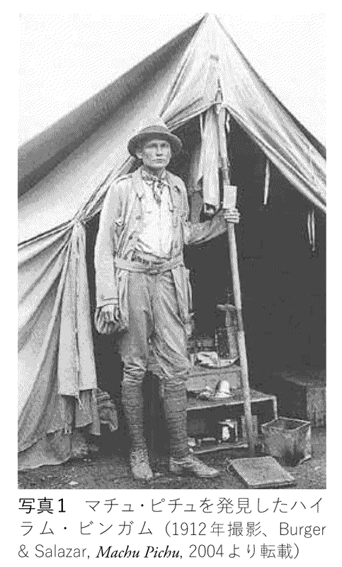
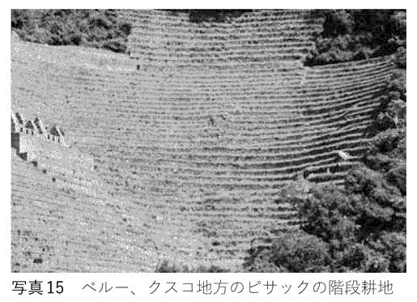
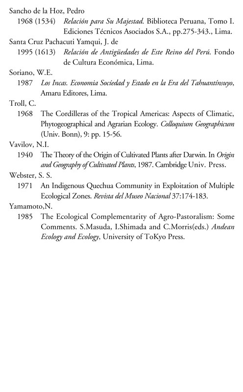

| 天空の帝国インカ その謎に挑む (PHP新書) | |
| 山本紀夫 | |
| PHP研究所 (2011) | |
天空の帝国インカ
その謎に挑む
山本紀夫
今、日本人がもっとも訪れたい世界遺産のひとつは、マチュ・ピチュをふくむインカ帝国の遺跡だそうだ。たしかに、ペルーの首都リマからインカ帝国の古都であったクスコに向かう飛行機には、いつも日本人観光客の姿がたくさん見られる。また、インカ帝国最大の遺跡であるマチュ・ピチュにも、日本人観光客の団体がいくつも訪れている。もちろん、日本人だけでなく、地元のペルーはもとより、欧米やアジアなどからも多数の観光客が、インカの遺跡を求めて、季節を問わずクスコや周辺の地域を訪れている。
では、何が世界各国から大勢の観光客をクスコに引き寄せているのだろうか。南米大陸最大の領土と一〇〇〇万を超す人口を擁しながら、十六世紀にスペイン人たちの策略によって滅亡させられた悲劇的な歴史のせいだろうか。あるいは、「耕して天に至る」という表現が決して過言でないほどの壮大な階段耕地や精巧な石積み技術による石造建築に魅せられている人もいるかもしれない。
このようなインカ帝国を頂点とするアンデス文明は、しばしば「謎の」とか、「神秘の」といった形容がなされる。実際に、アンデス文明には謎といっても過言でないほどわからないことが多い。これは、アンデス文明が文字を欠いていたため、書かれた歴史資料としては、スペイン人による征服以降にスペイン語で書かれたものに限られるからである。
一方で、アンデス文明の素晴らしさを後世の人たちに伝えるものも残されている。先述した壮大な階段耕地や石造建築のほかにも、美しい織物や多種多様な土器、きらびやかな黄金製品、さらにどこまでもつづくインカの道路などである。このような数多くの遺物と限られた知識の落差が、しばしばアンデス文明を神秘的なものにしたり、謎めいたものにしたりするのであろう。そして、神秘的であればこそ、インカ帝国に大きな魅力も感じることになるのであろう。
しかし、近年、インカ帝国の「謎」についてはかなり明らかになりつつある。考古学や歴史学、さらに民族学などの成果のおかげである。たまたま今年はマチュ・ピチュ遺跡がアメリカ人考古学者のハイラム・ビンガムによって発見されてから一〇〇年目にあたるが、この「神秘的な」遺跡もその謎がかなり明らかになっている。ところが、これらの成果は一般の人にはほとんど届いていない。そのせいで、依然として「神秘の」とか、「謎の」という好奇心をそそる表現がマスコミなどによって喧伝されているのである。そこで、本書では最新の学問的な成果もまじえながら、筆者自身の調査結果も加えて、主として「何がインカ帝国を生んだのか」という謎に挑戦してみたい。
このような謎に迫るためには、これまでの常識や定説にとらわれていてはいけない。たとえば、インカ帝国に象徴されるアンデス文明はしばしばトウモロコシ文明とよばれ、インカ帝国もトウモロコシ農耕が支えてきたとされるが、これははたして正しいのか。また、インカ帝国は驚異的といわれるほどの高地で栄えたが、それを可能にしたものは何なのか。さらに、何がインカ帝国の急速な拡大を可能にしたのか。そして、スペイン人の侵略により、なぜ簡単に滅亡してしまったのか。本書では、このような謎にも挑戦してみたい。
そのために、本書では私自身が四〇年余りにわたり「自分の足で歩き、自分の目で見て、自分の頭で考えたこと」を大切にしたいと考えている。従来の文献や資料だけに依存していては、新しい考え方やアイデアが生まれないと判断されるからだ。だからといって、文献資料を無視するわけではない。とくに、インカ時代の様子については十六～十七世紀にスペイン人たちによって書き残されたクロニカ、つまり年代記が貴重な情報を与えてくれる。実際、これらの資料を注意深く検討してみた結果、インカ帝国を生みだした要因のひとつとして、初めて「異形の神々」の存在が浮かびあがってきた。これまでは資料の限界から、アンデス住民の精神世界にまで掘り下げた研究は乏しかったが、クロニカ資料と私の観察を組み合わせることによって、初めて「異形の神々」の重要性が明らかになったのである。
ただし、これらの記録を扱うとき、注意しなければならないことが少なくとも二つある。その一つは、彼らの記録があくまでスペイン人たちの価値観をとおして書かれたことである。その端的な例がアンデスの土着宗教に関するもので、スペイン人たちはキリスト教徒の立場から、そのすべてを邪教として切り捨てている。もうひとつの問題点は、彼らの記録には大きな偏りがあることだ。スペイン人たちはインカ帝国に大きな関心をもっていたので、記録はインカ王やその親族のエリートに集中しており、一般民衆についての記録が少ないのである。
では、これらの点に注意しながら、インカの謎に挑んでみよう。
天空の帝国インカ――その謎に挑む 目次
本文中、とくに断りのない写真は著者撮影による
インカ帝国最大の遺跡であるマチュ・ピチュは、今や世界でももっとも有名な遺跡のひとつである（口絵１）。この遺跡はインカ帝国の中心地であったクスコの北西約一〇〇キロメートルのアンデス東斜面にあるが、それが発見されたのはさほど古いことではない。一九一一年、すなわち今からちょうど一〇〇年前のことであった。
この年の七月、イエール大学の歴史学者で登山家でもあったハイラム・ビンガムは「インカの最後の都」を求め、クスコからテントを使って野営しながら、険しいビルカバンバの渓谷を下っていった（写真１）。切り立った絶壁のあいだをビルカバンバの急流は、泡を立て、輝きながら、咆哮していた。このときの調査行については彼自身が詳しく記しているので、その著作『インカ――失われた帝国』（大貫良夫訳）の記録によってマチュ・ピチュの発見のときの様子を再現してみよう。

悪路やひどい湿気に苦しめられながら、クスコを出発してから約一〇日ほど谷を下ったときのことだった。そこで会った農民、メルチョール・アルテアガが耳寄りな情報を与えてくれた。ビンガムたちが最後のインカの宮殿を探していることを知ると、彼は「対岸のワイナ・ピチュという山とそれにつづくマチュ・ピチュという尾根の上にすばらしい遺跡がある」と語ったのだ。
その翌日の七月二十四日は、冷たい雨が降っていた。そのため、気乗りのしないアルテアガを同行させて山の頂上を目指したが、だれも特別おもしろいものがあるとは思わなかった。そのため、同行しようとする者は、アルテアガとカラスコ軍曹だけだった。
彼らは深いジャングルのなかを登っていった。苦しい登りがつづいた。そこには毒ヘビがたくさんいた。湿気もひどかった。暑さも並はずれていた。正午を少し過ぎた頃、彼らはすっかり疲れはててはいたが、川から七〇〇メートルばかりの上のところにある小さな草でおおった小屋に着いた。そこには人のよいインディオが数人住んでいて、冷たい水と料理したサツマイモをだして歓迎してくれた。
また、そこは眺望が素晴らしかった。壮大な緑の絶壁がウルバンバの急流へと落ちこんでいた。すぐ目の前、谷の北側には、大きな花崗岩の断崖が七〇〇メートル垂直に切り立っていた。左には、ワイナ・ピチュの孤峰が、近づけそうもない絶壁にかこまれていた（写真２）。どちらの側も岩の断崖であった。その向こうには、雲のなかに頂を隠した雪の山々が彼らの頭上数千メートルも高くそびえていた。
ここでしばらく休んだあと、ビンガムたちは尾根をさらに登りつづけた。やがて彼は驚くような光景を目にすることになる。その部分については原文のまま引用しておこう。
「......私たちは辛抱づよく小さなガイドのあとから、いちばんひろいテラスのひとつにそって進んだ。そこにはかつての小さな水路があって、それが向うの手つかずの森へ通じていた。突然、私の目のまえに、インカ石造建築では最高級の石壁があらわれた。何世紀も生えつづけた木や苔で一部はおおわれていて、ちょっとみえにくかったが、うっそうとした竹の茂みやからまりあった蔦のむこうに、白い花崗岩の切石を上手に切ってぴったりとあわせた石壁があちこちにみえだした。私たちは深い下生えのあいだを這いすすみ、テラスの壁を越え竹の茂みをよじのぼっていったが、そのようなところではガイドのほうが私よりらくらくと進んでいった。なんのまえぶれもなく突如として、巨大なオーバーハングをなした岩棚の下に、みごとな切石を美しくならべた洞穴があると、ガイドの男の子が私に教えた。たしかにそれは王の霊廟であった。そしてこの特殊な岩棚のうえには半円形の建物があり、その外壁はゆるやかに傾斜し、かすかにカーブしていて、クスコの有名な太陽の神殿と非常によく似ていた（口絵２）。これもまた太陽の神殿であったのかもしれない。岩の自然のカーブにあわせて石壁を積んだ部分は、いままで私の見たなかではもっともみごとな石造建築のひとつである」［ビンガム 一九七〇］。
これが、マチュ・ピチュの遺跡が初めて森林のなかから姿をあらわした瞬間であった。それだけに、このときのことをビンガムは大きな感激をまじえて、次のようにつづけて記している。
「この世のものではない夢をみているようであった。ぼんやりとではあったが、私は、この壁とそのつづきの半円形の神殿は世界のもっとも美しい石造建築のひとつであると思うようになった。私の息はほとんどとまらんばかりであった。ここはなんという場所なのであろう。なぜだれもこの遺跡のことをすこしも教えてくれなかったのだろうか。（中略）結局、ここは、到達不可能であるがゆえに知られることのなかった、孤立した小さな場所であったのだろう」［前掲書］。
ちなみに、ここでビンガムは「孤立した小さな場所」と述べているが、それは遺跡の一部でしかなかった。ビンガムはマチュ・ピチュ発見の翌年の一九一二年、さらに一九一五年にも調査をおこない、ようやく全貌が見えてきたのである。遺跡の中央には水路が走り、この北側には大きな広場のほか、神官たちの住居や宗教施設が密集していた。たとえば、先にビンガムが太陽神殿とみなした建物もここにある。一方、水路の南側には大きな高度差をもち、整然と石を積んだ階段耕地がある。また、マチュ・ピチュを見下ろすように尾根の北端にはワイナ・ピチュ峰がそびえたち、ここは聖域とみなされている。
このマチュ・ピチュを私が初めて訪れたのは、今から四〇年以上も前の一九六八年のこと。クスコからマチュ・ピチュ山麓のアグアス・カリエンテス駅まで線路は通じていたが、マチュ・ピチュ遺跡の入り口にあたるこの駅のまわりには人家が一軒もなかった。今では、ホテルや土産物屋などでびっしり埋めつくされた村となっている。また、以前は遺跡にも観光客はまばらにしか見られなかった。押しよせてくる観光客の侵入を防ぐために、あちこちに張られているロープや柵も当時はなく、遺跡のなかを自由に歩き回ることもできた。
そのため、私は遺跡のあちこちで腰を下ろし、マチュ・ピチュの全貌を堪能することができた。マチュ・ピチュは、アンデス東斜面の海抜おおよそ二四〇〇メートルに位置する、険しい尾根の上にある。そこは、ペルーではセハ・デ・モンターニャとよばれる雲霧林帯のど真ん中である。ちょうどアマゾン側から押し寄せてくる雲がアンデス山脈にぶちあたるところなので、しばしば霧が発生し、雲霧林が繁茂しているところなのである。
そのため、切り立った尾根の上に位置するマチュ・ピチュの遺跡は、しばしば霧につつまれる。ときに、谷底からわきあがってくる霧の上にマチュ・ピチュが浮かびあがって見えることもある。おそらく、そのせいでマチュ・ピチュは「空中都市」とか「天空の都市」とかよばれるのであろう。
しかし、はたして「空中都市」というのは正しいのだろうか。たしかに、霧の上に浮かぶように見える遺跡は「空中の」といっても許されるだろう。が、マチュ・ピチュは本当に「都市」だったのか。そもそもだれが最初にマチュ・ピチュを「空中都市」とよんだのだろうか。私が初めてマチュ・ピチュを訪れた頃はまだ「空中」とか「天空の」という形容はされていなかったので、これらは比較的近年になってからのことのようだ。じつは、マチュ・ピチュを「都市」とか「都」とよんだのは、ビンガムにほかならなかった。というのも、彼のビルカバンバ探索の最大の目的が「インカ最後の都」を発見することだったからである。
じつは、ビンガムがビルカバンバでおこなった探検の最大の目的は、インカ帝国最後の王のアタワルパの死後、マンコ、サイリ・トゥパック、ティトクシ、トゥパック・アマルと王位が継承された「ネオ・インカ」（新インカ帝国）の拠点で、スペイン人のカランチャ神父の記録に「ビルカバンバ・ラ・ビエハ（古ビルカバンバ）」と記されている「インカ最後の都」を発見することだった。この探検によって、マチュ・ピチュやエスピリトゥパンパなどの重要なインカの遺跡も発見されたが、そのなかでビンガムの関心をとくにひいたのがマチュ・ピチュであった。そして、遺跡の規模や特異な立地、さらに優れた技術を駆使した建造物などの存在から、ビンガムはマチュ・ピチュこそが「インカ最後の都」だと考えたのである。また彼は、「三つの窓の神殿」の存在から、インカの始祖が三つの洞窟から誕生したという起源神話を連想して、マチュ・ピチュがインカ生誕の地であるという説も同時に提唱したのである（口絵３）。
マチュ・ピチュ発見の翌年の一九一二年には一〇〇近い洞窟が発掘され、多数の遺骸や副葬品も出土した。その人骨を分析したジョージ・イートンは、一七三体のうち一五〇体が女性のものであると判断した。ビンガムは、これらの女性が王や神々につかえるために各地から提供され、選ばれた処女の「アクリャ」と考えた。これも、マチュ・ピチュが「最後の都」という説を支えたようだ。
すなわち、マチュ・ピチュが都市であるという説は、このビンガムの説に大きく影響されたのであろう。それというのも、マチュ・ピチュは観光の面では脚光を浴びたが、研究の面ではさほど注目を集めることがなく、ビンガム以後の研究があまりなかったからである。その状況に変化があらわれたのは一九七〇年代に入ってからのことであった。
まず、ビンガムが唱えた、マチュ・ピチュの古ビルカバンバ説は否定され、「インカ最後の都」はマチュ・ピチュのさらに西方に位置するエスピリトゥパンパであるとされた。そして、マチュ・ピチュで出土した遺体の大半が女性のものであるとするイートンの説も否定された。二〇〇三年にあらためて分析された結果によれば、人骨の総数はイートンの分析より一体多い一七四体で、その男女比も三対二で男性のほうが多かった。そして、このうちの約八〇パーセントが労働に耐えられる十五歳以上であった。
また、マチュ・ピチュに居住していた人びとの総数はせいぜい七五〇人以下であった。とくに、十一月から四月にかけての雨季の人口は数百人程度にまで減少したとされる。とにかく、「都市」というにはマチュ・ピチュの人口はきわめて少なかったのである。
それでは、マチュ・ピチュはどのような性格をもったところだったのか。これも最近の研究によれば、マチュ・ピチュは第九代インカ王のパチャクティの私領（郊外の王宮）であったことがわかってきた。たしかに、インカ帝国の中心地のクスコ（海抜三四〇〇メートル）に比べればマチュ・ピチュは標高差で一〇〇〇メートルも低いため、空気も濃いし、乾季であれば温暖で快適なところであったにちがいない。
こうして、ビンガムが唱えたマチュ・ピチュの「都市伝説」も、インカ発祥の地という説も今では否定され、顧みられることはなくなった。しかし、マチュ・ピチュがインカ最大の遺跡であることにはかわりがなく、それだけにテレビなどでも依然としてさかんに紹介されている。そのためか、マチュ・ピチュのイメージをとおしてインカ帝国を見る人たちが少なくない。
しかし、インカ帝国はアンデスのほぼ全域を版図とするほどの広大な領土を擁し、そこにはじつに多様な環境が存在する。とりわけ、インカ帝国の中核となった地域は、マチュ・ピチュが位置するアンデス東斜面の森林地帯などではなく、海抜三〇〇〇メートルを超す高地にあった。たしかに、マチュ・ピチュはインカ帝国を代表する遺跡ではあるが、立地の上でも、人びとの暮らしの上でも、例外的な存在なのである。
そこで、まずインカ帝国とはどのような帝国であったのか、その概要を見ておこう。
インカ帝国について、最初に述べておきたいことがある。日本では、インカ帝国は古代帝国とか、古代文明といわれることがあるが、これははたして正しいのか。『広辞苑』によれば、古代とは、 過ぎ去った古い時代、
過ぎ去った古い時代、 歴史の時代区分のひとつで、中世・近世に対する、
歴史の時代区分のひとつで、中世・近世に対する、 日本史では一般に奈良・平安時代を指す、とある。そうであれば、インカ帝国が栄えたのは日本の室町時代のことであり、日本史に照らしあわせてみれば、インカ時代は近世といってよいほど比較的新しい時代のことなのである。
日本史では一般に奈良・平安時代を指す、とある。そうであれば、インカ帝国が栄えたのは日本の室町時代のことであり、日本史に照らしあわせてみれば、インカ時代は近世といってよいほど比較的新しい時代のことなのである。
この誤解の背景には、インカ帝国がアンデス文明と同一視されるという事情があるかもしれない。たしかに、インカ帝国はアンデス文明を代表するものであるが、その最盛期は十五世紀からわずか一〇〇年ほどでしかない。ほかでもない、スペイン人たちによって征服されたからだ。よく知られているように、インカ帝国は一五三二年にスペイン人によって征服され、滅亡を余儀なくされたのである。
このことは、インカ帝国の社会や文明を知る上では、大きな強みになる。スペイン人たちのなかにインカ帝国について記録を残した者が少なくないからである。そのようなスペイン人たちによれば、インカ帝国の領土は、四つのスーユとよばれる地域にわけられていた。そのため、インカ帝国はケチュア語で「四つの地域」を意味する「タワンティンスーユ」が正式な名称であった。これら四つの地方とは、チンチャイスーユ、コリャスーユ、アンティスーユ、そしてクンティスーユである（図１）。
最初のチンチャイスーユとは、クスコの北方に位置する地域で、現在のエクアドルも含んでいた。コリャスーユは、クスコの南方に位置する地域で、ティティカカ湖畔を経て現在のボリビアやチリ北部、さらにアルゼンチン北西部まで含む広大な地域であった。アンティスーユは、クスコの東方、主としてアマゾンに面したアンデス東斜面の地域であった。クンティスーユは、四つの地域のなかでもっとも小さく、クスコの西側の太平洋岸に至る地域であった。
つまり、タワンティンスーユは、クスコを中心として四方に広がる大帝国であり、これら各地域にはインカ王の命によりつくられた王道が通じていた。この王道をとおして各地の情報や生産物がクスコに集められた。そのため王道の主だったところにはタンプとよばれる宿泊所がもうけられ、そこをチャスキという飛脚が頻繁に通っていたのである。
ただし、インカ帝国の中核はあくまでアンデスの山岳地帯、とくにその高地部にあった。首都のクスコも標高三四〇〇メートルのペルー・アンデス南部の高地にあった。クスコは約二〇万の人口を擁し、当時南アメリカ最大の都市であった。また、チンチャイスーユの領域であった太平洋岸もすべての地域にインカ帝国の支配が十分におよんでいたわけではなく、ペルー北部海岸などは影響が小さかった。さらに、アンティスーユの領域であったアンデス山脈の東側も、その山麓地帯はアマゾン流域の諸民族が支配する地域であり、彼らのインカ帝国への侵入を阻止するためにアンデス東斜面の各地に砦が築かれていた。たとえば、冒頭で紹介したマチュ・ピチュは険しい地形の尾根の上につくられているので、熱帯林から侵入してくる異民族に対する防御のための砦とみなす説もある。また、ボリビア東部にある遺跡のインカヤクタもインカ帝国の砦のひとつとみなされているが、それは海抜約三〇〇〇メートルのアンデス東斜面に位置している（口絵4）。
インカ帝国の中核地帯が高地にあったことは、インカ時代に築かれた公共建築物の大半がアンデス高地に集中していることからもうかがえる。この公共建築物は、しばしば美しく切り出された石をぴったり組み合わせ、石のすき間に「カミソリの刃さえさしこめない」と表現されるような石壁もある。インカ帝国が滅亡してから約五〇〇年たった今日でも、往時の面影をしのばせる建築物がアンデス各地で見られる。そこで、代表的なインカの建築物をいくつか紹介しておこう。
クスコはインカの中心であっただけに、クスコおよびその周辺部には立派なインカ時代の建築物がいくつも残されている。クスコは周囲をアンデスの山並みにかこまれた盆地にあるが、その中央部に侵略してきたスペイン人が目を奪われたものがある。「太陽の神殿」である（口絵5）。この神殿はインカの国家宗教であった太陽信仰の総本山であり、黄金であふれていたので、「黄金の館」を意味するコリ・カンチャともよばれていた。この「太陽の神殿」については侵略者のひとりであるペドロ・ピサロが次のような記録を残している。
「この太陽［の神殿］は、いくつかの大きな館を持っており、そのすべてが、ひじょうによく加工された石造建築であった。また同時に、ひじょうに高く、りっぱに加工された石の囲い壁もあった。その壁の前面には、幅一パルモ［約二一センチ］以上の金の帯が、石にはめこまれていた」［ピサロ 一九八四（一五七一）］。
残念ながら、この金の帯はスペイン人たちによってはがされ、金の延べ棒にして持ち去られたが、「よく加工された」石壁の基壇は今も見ることができる。
また、クスコの町を見下ろす北方の丘にもサクサイワマンの名で知られる大城塞がある（口絵6）。巨大な石を何段にもぴったり積み重ねてあり、その石壁は「とうてい人の手でつくられたとは思えない」とスペイン人を驚かせたほどである。また、その石積み全体からはインカの人たちの優れた美的感覚もしのばせる。
クスコからウルバンバ川を少し下った海抜約二八〇〇メートルの地点にもインカ時代の城塞がある。オヤンタイタンボである（口絵7）。この城塞は丘の斜面に建てられ、頂上部には「太陽神殿」の一部を構成していたと考えられる巨大な石壁が残されている。この城塞こそは、一五三六年、ワイナ・カパック王の息子であるマンコ・インカが反乱をおこしたとき、インカ軍がたてこもりエルナンド・ピサロのひきいるスペイン軍に激しく抵抗したところである。
クスコ県のほぼ西に位置するアヤクーチョ県の高原地帯にもインカ時代の建築物がある。海抜三四七〇メートルの高原に位置するビルカス・ワマンである。インカがもっとも重要視した場所のひとつであり、インカの建築物としては珍しく、ビルカス・ワマンはピラミッド状の建築物である。上方の基壇の上には大きな石の腰かけがあり、記録者によると昔は黄金でおおわれていたとされる。
ペルー中部高原に位置するワヌコ・パンパは、インカの地方行政のためにつくられた都市の型をよく示す建造物である。方形の基壇を中心とする広場の四方をかこむように多くの建築物が築かれているが（口絵8）、これも海抜三八〇〇メートルの高原に位置する。
ペルーを北上し、エクアドル領内に入ってもインカの建築物は見られる。そのひとつがエクアドル南部高地にあるインガビルカで、海抜三一六〇メートルに位置する。円形状の基壇の上に神殿が建っており、その周辺にはコルカの名前で知られる倉庫群もあったらしい（口絵9）。
このようにアンデス各地に都市や城塞をつくっていたインカ帝国は、かなりの人口を擁していたはずである。この人口については諸説あるが、少なく見積もっても一〇〇〇万人以上で、その三分の二は山岳地帯に住んでいたとされる。しかも、彼らの多くが日本では考えられない海抜三〇〇〇メートルから五〇〇〇メートル近い高地で暮らしていた。海抜五〇〇〇メートルといえば、そこでの酸素は平地の半分ほどしかなく、そこは天空の世界といっても過言ではない。つまり、インカは「天空の帝国」といってもよさそうなのである。
先にインカ帝国は古代文明ではないと述べたが、アンデスの古代文明と無関係ではない。むしろ、先行するさまざまな古い文化があったからこそインカ帝国は成立し、その意味でインカ帝国はアンデス文明の頂点に位置するといっても過言ではない。この点についても、しばしば誤解があるようなので、ここでインカ以前の諸文化について、駆け足ではあるが、概観しておこう（図２）。
アンデスに人類が最初に姿をあらわしたのは今からおおよそ一万年前のことだが、最新の発掘によれば紀元前三〇〇〇年頃に大きな転換期を迎えた。山岳地帯でも海岸地帯でも定住が進み、祭祀建造物が建設されるようになった。アンデス考古学でいう形成期とよばれる時期に入ったのである。
その後の紀元前後には、中央アンデス各地に多様な文化が生まれるようになる。現ペルー北部の海岸地帯では、灌漑によって砂漠地帯を耕地として豊かな生産力をもつ農耕社会、モチェが誕生する。ここでは砂漠のなかに長大な灌漑水路を引いただけでなく、日干しれんがを積み上げて巨大なピラミッドや神殿をつくった。
巨大な地上絵で日本でも知られるようになったナスカ文化も、モチェ文化とほぼ同じ頃、ペルーの南海岸で生まれた。ここも砂漠地帯にあるが、特色のある地下水路を引いて砂漠を耕地としてさまざまな作物を栽培していた。また、その社会は多彩で美しい土器を数多く生みだしたことでも知られる。
山岳地帯のティティカカ湖畔では、モチェやナスカより少し前の紀元前数世紀頃から七世紀頃までティワナクという文化が栄えていた。このティティカカ湖畔は海抜三八〇〇メートル余りの高地にあるが（口絵10）、そこに今もティワナク文化の中心であった神殿が残されている。ここをインカ帝国の征服から間もない頃に訪れたスペイン人のシエサ・デ・レオンは巨大な建造物に驚き、「巨大な石を、いまあるところまではこんで来るにはどれほどの人力が要ったか、と考えると、まったく驚嘆する」と記録に残しているほどである。
これらの諸文化は紀元七世紀頃に統一される。アンデスで、もう一つの帝国ともいわれるワリ文化が登場してくるのである。もう一つの帝国といわれるゆえんは、ワリが後のインカ帝国と同じように、軍隊を組織して征服をおこない、一大国家をつくった可能性があるからだ。ワリの中心はペルー南部山岳地帯に位置するアヤクーチョであるが、その影響力はエクアドルとの国境に近いペルー北部にまでおよんだ。
ワリによる統一のあと、アンデスに再び地方文化の花が咲く。かつてモチェ文化が栄えたペルーの北海岸には、国家とよんでもよさそうな規模をもったチムー文化が生まれた。その首都のチャンチャンは、約二〇平方キロメートルの広さがあり、人口は数万を擁しただろうといわれる。
一方、ペルーの南海岸にはチンチャの王国が生まれていた。山岳地帯では、ペルー中部のマンターロ川流域でワンカ族、その南方のアヤクーチョ地方などではチャンカ族が支配していた。また、ティティカカ湖畔には、ハトゥンコリャとルパカの二つの生活集団が権力をふるっていた。
これらの地方国家や集団を統一したのが、インカ帝国にほかならなかった。十五世紀の初め頃、クスコ盆地だけを支配していたインカ族が急速に勢力を広げたのだ。わずか一〇〇年ほどのあいだに中央アンデス全域を支配下におき、さらに隣接する地域も征服した。その最盛期には、北は現コロンビア南部からエクアドル、ボリビアを経てチリ中部に至るまでのアンデスの大半の地域を領土としたのである。
こうしてアンデスの歴史をふりかえってみると、数千年におよぶアンデス文明のなかでインカ帝国はほんの一部にすぎない。しかし、インカ帝国は、それ以前の諸文化が存在したからこそ成立したともいえる。この点について、インカ研究で著名なフランクリン・ピースと増田義郎は次のように述べている。
「インカに先だってあったもののことを考えるとき、われわれは、インカの達成したものを、アンデスの歴史の当然の帰結と見なさざるをえない。ただインカ人たちは、過去のどの民族よりもアンデス文明の遺産をよく活用し、かつてない大きな規模で、大集成を行なったのである。その点に彼らの偉大さがあった」［ピース・増田『図説 インカ帝国』一九八八］。
さて、それではインカ族とは何者なのか。彼らはどこから、どのようにしてクスコにやってきたのだろうか。これらについてはよくわかっていないが、インカ族の起源に関してはいろいろな伝説がある。たとえばシエサ・デ・レオンはインカの起源神話について次のように述べている。
「......長いあいだ太陽がなく、そのため大へんな難儀をこうむっていたため、人々は彼らが神と考えるものに祈りを捧げ、光をお与え下さいと願った。このような状態が続いてのち、コリャオの大きな湖の中に浮かぶティティカカ島から、輝かしさにあふれた太陽が昇ったので、みなよろこんだ。そして、このことが起こってのち、南の地方から、背の高い白い人が突然やって来てすがたを現わしたが、その風采・外貌にひじょうに威厳があり尊敬をかち得たという。そしてこのようにしてやって来たその人物は、ひじょうにすばらしい能力を持ち、山を平地にしたり、平地から大きな山を作ったり、また地に根を下ろした岩に泉を湧き出させたりした。人々は、そのような力を知って、彼を、すべての作られしものの創造者、ものごとの創始者、太陽の父と呼んだ」［シエサ 一九七九（一五五三）］。
同じような起源神話は、十六世紀から十七世紀にかけて年代記作者のベタンソスやインカ・ガルシラーソも採録している。そして、その神話のなかで創造神であるビラコチャはティティカカ湖からあらわれたと記録している。さらに、インカ・ガルシラーソ［一九八五（一六〇九）］は、太陽のつかわした二人の人間がティティカカ湖を発ち、クスコに旅立ってインカ帝国の礎を築いたという以下のような伝説を記録している。ちなみに、インカ・ガルシラーソはインカの貴族の血を引き、インカの伝統や風習にも詳しい人物であった。
太陽が未開の状態にある人間をあわれんで、自分の息子と娘を天から地上に送った。野蛮な人間を町に住まわせ、土地を耕して作物を栽培したり、家畜を飼って生活を豊かにする方法を教えるためである。ティティカカ湖に降り立った二人は北に向かって旅立った。そして、太陽の命により金の棒を地に打ち込み、それが地中深くに突き刺さる場所を探して歩いた。しかし、金の棒が突き刺さる場所はなく、ついに二人はクスコ盆地のワナカウリの丘に到着した。そこで金の棒を打ちつけてみると、それは地中深く沈み、たちまち見えなくなってしまった。当時、クスコは一面荒涼たる山地だったが、そこに二人の兄妹は都を築き、周囲の未開の人びとを集めて人間らしい生き方を教え、インカ帝国の礎を築いた。この兄こそは初代のインカ王、マンコ・カパックであり、妹はママ・オクリョ・ワコという。
これらは伝説ではあるが、歴史的な事実と照らし合わせてみると興味深いことがいくつもある。まずインカ帝国を築いたインカ族は、これらの伝説によればティティカカ湖地方からやってきたのではないかと考えられることである。このティティカカ湖畔は一〇〇〇年近くにわたりティワナク文化が栄えていたところであり、そこではインカの成立前もいくつもの王国が生まれていた。したがって、ティティカカ湖畔はアンデスのなかでも文化程度が高く、それを支えていた農耕もかなりの程度に発達していた可能性がある。
一方、クスコ地方は農耕が十分に発達しておらず、人びとの文化の程度も低かったのであろう。そのことを伝説が物語っている。当時、クスコが荒涼たる山地だったということやクスコの住人を未開人と表現していることなどである。そのせいか、伝説ではインカが新しい文化を導入した教化者としての役割がしばしば強調されている。
この点で興味深いことがある。マンコ・カパックがクスコに来て初めてトウモロコシの種を播いたという伝説のあることである。これもインカの新しい文化の教化者としての役割を強調するものであろう。同時に、もうひとつの可能性も示唆する。それは、インカ帝国の成立とともにアンデスの山岳地域で初めて本格的なトウモロコシ栽培が始まった可能性である。じつは、これは可能性にとどまらず、考古学的な調査から明らかになっている。
さて、クスコに都を定めたマンコ・カパックたちであったが、その始まりはマンコ・カパックがその妻とともに作った、「藁ぶきの小さな石小屋」にすぎなかった。この小屋こそは、後にインカ帝国の中枢の宗教施設であり、「太陽の神殿」として知られるようになるものである。先述したように、この「太陽の神殿」は礎石が残されており、それを現在もクスコで見ることができる。このマンコ・カパックを初代のインカ王として、インカ帝国は拡大を開始する。
ただし、マンコ・カパックから第八代のインカ王のウイラコチャまでは伝説の時代であり、歴史的にインカ王の存在が明らかになっているのは第九代のパチャクティからである。図３に第九代のパチャクティ王時代から第十一代のワイナ・カパック王時代までの領土の拡大の様子を示したが、最終的にアンデスの大部分を領土としたインカ帝国もパチャクティ王時代までは中央アンデスの南部高地だけを支配していた国家であった。ちなみに、ここでいう高地とは海抜約三〇〇〇メートルから五〇〇〇メートルあたりのことを指している。海抜四〇〇〇メートルでも、富士山の頂上よりも高いが、アンデスではそのような高地でも人びとの暮らしが見られるのである。では、なぜ、このような高地でも人びとの暮らしが可能なのであろうか。次に、この点について詳しく検討してみよう。インカ帝国の謎のひとつが、私たち日本人には考えられないほどの高地で人びとが暮らしていたことだからである。
世界最長の大山脈アンデスは、南米大陸の太平洋岸にそって南北に約八〇〇〇キロメートルの長さにわたって走る地球上で最長の大山脈であり、そこには標高六〇〇〇メートルを超す高峰も少なくない。このアンデス山脈の北端は北半球のベネズエラに始まり、コロンビア、エクアドル、ペルー、ボリビアなどの国々をへて、南はチリおよびアルゼンチンにまで達し、その南端のパタゴニア・アンデスは次第に高度を減じながら、やがてマゼラン海峡に没している（図4）。
と、このように書いてもアンデスの長大さはなかなか理解しにくいかもしれない。そこで、身近な日本と比べてみよう。南北に長い本州でもその長さは約一三〇〇キロメートルなので、本州を六つか七つつなぎ合わせて、やっとアンデスの長さになる。ただし、アンデスの幅はさほど広くない。アンデスで最大の幅をもつ部分は、山脈のちょうど真ん中あたりの中央アンデスであるが、そこでも五〇〇～六〇〇キロメートルくらいである。つまり、日本でいえば大阪から東京あたりまでの距離しかない。
したがって、アンデス山脈の特徴を一言でいえば、きわめて細長い山脈であるということだ。そのため、アンデスはふつう緯度によって、大きく次の三地域にわけられる。すなわち、北部アンデス、中央アンデス、そして南部アンデスである。このうち、北部アンデスの大部分は赤道以北にあり、国でいうとベネズエラ、コロンビア、エクアドルを走る山脈である。中央アンデスはペルーおよびボリビアを走る山岳地域のことで、それよりも南のチリとアルゼンチン国境を走る山脈が南部アンデスである。
この緯度によってアンデスの環境は大きく変化するが、それを端的に示しているものがある。それは、氷河や万年雪の残る、いわゆる雪線の高さである。エクアドルやペルーのように緯度の低い地域では、万年雪を見ようとすれば海抜五〇〇〇メートルくらいまで登らなければならない。すなわち、雪線は海抜五〇〇〇メートル前後である。ところが、そこから南下して、アンデス最南端のパタゴニアまで行くと、雪線は海抜数百メートルと低くなり、ときに氷河が直接に海に落ちこんでいる光景さえ見られる。これは、緯度が高くなればなるほど、一般に気温が低くなるからである。
一方、緯度が低くなればなるほど、一般に気温は高くなる。このため、低緯度地帯に位置する地域は熱帯あるいは亜熱帯圏となる。北部アンデスや中央アンデスもこの低緯度地帯にあるため、両地域は熱帯アンデスともよばれる。しかし、そこには一般の日本人がイメージする熱帯とは大きく異なった景観も見られる。つまり、熱帯圏に六〇〇〇メートルにおよぶ大きな高度差をもつ山岳地帯が位置するために、標高の高いところでは寒帯や氷雪地帯も見られるのである。
このように中央アンデスが低緯度地帯に位置することが、そこでの暮らしにさまざまな点で重要な意味をもつ。たとえば、海抜四〇〇〇メートル前後の高地でも人間の暮らしを可能にしている要因のひとつは、やはりそこが低緯度地帯にあることが大きい。低緯度地帯であるために、富士山の頂上ほどの高地でも気候は一年をとおして比較的温暖なのである。
実際、クスコで青年時代まで過ごしたインカ・ガルシラーソは、海抜三四〇〇メートルに位置するクスコの気温について次のように述べている。
「クスコ市の気温は温暖というよりはむしろ寒冷に属するものの、暖をとるために火を焚く必要があるほどではない。外気から遮断された部屋の中に入りさえすれば、寒くはないからである。火ばちなどがあれば、それは快適であろうが、かりになくても、別に生活に支障はない」［インカ・ガルシラーソ 一九八六（一六〇九）］。
アンデスにはクスコよりもっと高いところにも都市がある。たとえば、ボリビア最大の都市ラパスの中心標高は約三八〇〇メートルであり、その空港は都心から少し離れた海抜約四一〇〇メートルの高地に位置している。そこでの気候も見ておこう。図5は、このラパス空港での気温や雨量などを、比較のために北海道の札幌のそれとともに、示したものである。この図によれば、ラパス空港での年平均気温は摂氏約一〇度と標高からみて意外に高く、しかも一年をとおしてほとんど気温の変化がない。
これこそは熱帯高地特有の気候の特徴なのである。熱帯高地では気温の日変化は大きいが、年変化が小さいのである。また、気温だけではなく、日射も熱帯高地では特徴がある。太陽高度が高く、大気が希薄なため、日射は強烈で、しばしば暑いと感じることさえある。そして、日向・日陰斜面の差が少ないため効率よい土地利用も可能になる。
ただし、緯度と高度だけが人間の暮らしを規定しているわけではない。もうひとつ重要な要因がある。それが降雨量である。降雨量の多少も人間の暮らしを大きく左右する。とくに、降雨量が極端に少ないところは人間の生存さえ許さなくなる。たとえば、ペルーやチリの海岸地帯の大半はほとんど降雨を見ないため、一部地域をのぞいて、大部分の地域が砂漠になっている。
これは、高地でも同様である。冒頭で述べたティティカカ湖畔あたりは人口がかなり稠密な地域であるが、そこでは雨季にかなりの降雨を見る。そして、そこから南下するにしたがって人口は次第に少なくなる。さらに、ボリビアの南部あたりから降雨量が乏しくなり、チリ領に入るとまったくといってよいほど雨が降らない。このようにアンデスの南半分は乾燥しているため、砂漠となっているところが少なくないのである。
ここで奇妙なことがある。北部アンデスは降雨量が多く、しかも低緯度地帯に位置しているにもかかわらず、あまり高地には人が暮らしていないことである。実際、エクアドルの首都のキトはほぼ赤道直下に位置するが、そこでの人の暮らしは海抜三〇〇〇メートルを超さない。また、エクアドルの北に位置するコロンビアの首都のボゴタも海抜約二四〇〇メートルであり、クスコと比べてさえ、一〇〇〇メートルも低い。ちなみにエクアドルにもコロンビアにも海抜四〇〇〇メートル以上の高地は存在するが、そこではまったくといってもよいほど人は暮らしていないのである。
じつは、これは降雨量が関係している。その違いを最初に指摘したのは、世界の高山を広く歩き、その自然環境を研究したドイツ人地理学者のトロールであった［Troll 1968］。そのトロールが作成した図6を参考にしながら述べてゆこう。この図でアンデスは南緯五、六度あたりで急速に高度を減じていることがわかるが、ここが一般に中央アンデスと北部アンデスの境界となっている。そして、トロールはこの低い部分を境として赤道よりのアンデスをパラモ・アンデス、その南側をプナ・アンデスとよんだ。つまり、トロールによれば、熱帯アンデスはパラモ・アンデスとプナ・アンデスにわけられるのである。そして、その違いを生んだ最大の要因は雨の降り方にあるとされる。つまり、北部アンデスは一年をとおして雨がよく降るのに対して、中央アンデスは雨がよく降る雨季と雨がほとんど降らない乾季があり、これが両地域における環境に大きな違いを生んだ。そして、それを象徴する環境が北部アンデスではパラモであり、中央アンデスではプナなのである。
写真はパラモ（口絵11）とプナ（口絵12）の景観であるが、この写真によっても両地域における違いは明らかであろう。パラモは、トロールが湿潤熱帯高地とよんだように、雨が多くて湿度も高い高地である。そのため、そこには巨大で、しかも厚い毛でおおわれた葉をもつロゼット型の多年生植物であるキク科のエスペレティアや巨大なサワギキョウ属のロベリアなどが少なくない。こうして、パラモは一見したところ東アフリカの熱帯高山と同じような熱帯高地特有の景観を呈しているのである。
一方、中央アンデスでプナとよばれる高地は一年のうちの半分ほどはほとんど降雨を見ない乾季がつづき、そのせいで樹木類はあまり育たず、イネ科の草本類が優占する草原地帯となっている。とくに、この草原にはイネ科のイチュとよばれる植物が多く、サボテンや乾燥に強い刺のある植物なども目立つ。このようなプナが中央アンデスの山岳地帯のかなり大きな部分を占めているのである。
一見すれば、パラモは雨が多くさまざまな植物、それもかなり巨大な植物が繁茂しているので豊かな土地のように見える。しかし、このパラモの存在こそが、そこを放牧地や農耕地として利用するのをはなはだ困難にしているのである。パラモ固有の植物を焼き払わなければならないからだ。これには、先住民だけでなく、その後に入植したスペイン人たちも手を焼いたらしく、そのような記録も残されている。そして、今もパラモはほとんど使われていない。そもそも、パラモはスペイン語で「荒れ地」を意味する言葉であり、このことからも北部アンデスの高地部は古くから利用されていなかったことがわかる。
ちなみに、これらの海岸地帯は高地よりもっと顕著な違いがある。北部アンデスの海岸地帯は熱帯雨林によっておおいつくされ、海岸にはマングローブも繁茂している。一方、中央アンデスの海岸地帯は先述したように一部地域を除けば大半の地域が砂漠となっている。これも両地域における降雨量の違いによる影響の結果なのである。
こうして見てくると、インカ帝国の中核地帯となった中央アンデスは、アンデスのなかでもっとも高いところまで人びとが暮らしている地域であることがわかる。そこで、以下で中央アンデスにおける環境をさらに具体的に見ておこう。そこは、私たち日本人がとても理解できないほど多様な環境が見られる地域だからである。そのため、これまでさまざまな研究者がいくつもの自然区分法を提唱してきた。そのなかで、ペルー人の地理学者であるプルガル・ビダルによって提唱された自然区分法は、現地の人たちによる自然認識の方法も取り入れた、優れた区分法として広く利用されている。そこで、ここでも彼の区分法によって、中央アンデスの大部分を占めるペルーの自然環境を詳しく見ておこう。
プルガル・ビダルはペルーの自然環境を大きく八つに区分した［Pulgar Vidal 1996］。その八区分法は次のように基本的に標高に生活圏を組み合わせたものである。ただし、これらの標高はあくまで目安であり、地域によって二〇〇～三〇〇メートルくらいの違いがある。
チャラ（海抜〇～五〇〇メートル）海岸砂漠
ユンガ（海抜五〇〇～二三〇〇メートル）山麓地帯
ケチュア（海抜二三〇〇～三五〇〇メートル）温暖な谷間
スニ（海抜三五〇〇～四〇〇〇メートル）冷涼な高地
プナ（海抜四〇〇〇～四八〇〇メートル）寒冷な高原
ハンカ（海抜四八〇〇メートル以上）氷雪地帯
ルパルパ（海抜一〇〇〇～四〇〇メートル）アマゾン川源流域の森林地帯
オマグア（海抜四〇〇メートル以下）アマゾン川流域低地の森林地帯
これらの自然区分帯のうち、ハンカは人間の居住できない氷雪地帯のことである。また、ルパルパおよびオマグアはアマゾン川流域の熱帯降雨林地帯であるが、ここは古くからアンデス住民にとってあまり大きな意味をもたなかった。したがって、アンデス住民にとって重要な自然区分帯は最初の五つ、すなわちチャラ、ユンガ、ケチュア、スニ、プナである（図7）。そこで、これらの五つの自然区分帯について以下に説明をくわえておこう。
チャラ 一年中、まったく雨が降らないか、降っても降雨量は五〇ミリ以下で、ほとんどのところが砂漠になっている（写真3）。緯度の上では熱帯ないし亜熱帯圏に位置しているが、年平均気温は摂氏一九度とあまり高くない。これは沖合を南から流れてくるフンボルト寒流の影響である。この海流は北のほうで赤道直下の暖流とぶつかるため、そこでは豊かな海産資源を海岸地帯にもたらしている。そのため、そこはきわめて古い時代から漁業が重要な生業になってきた。チャラの大部分は砂漠であるが、一部地域では農業も古くからおこなわれてきた。アンデス山脈から流れ落ちる河川流域のオアシス状のところである。とくにペルー北部の海岸地帯は灌漑によって耕地が広げられ、さまざまな作物が栽培されてきた。代表的な作物としては、マニオクやサツマイモなどのイモ類、トウモロコシ、トウガラシ、ワタなどがある。これらの作物はいずれもアンデスで古くから栽培されてきた作物であるが、スペインの植民地時代以後に導入されたサトウキビやオレンジ、イネなども目立つ。
ユンガ ユンカともよばれる。アンデス山脈の西側および東側の両方の山麓地帯のことである（写真4）。緯度が低いうえ、標高も低いため、気温が高い地域である。ただし、太平洋岸に位置する西側の山麓とアマゾン川に面した東側では大きく異なる点もあり、そのため前者は海岸ユンガ、後者は山間ユンガとよばれて区別されることもある。両者における違いを生む最大の要因は雨量である。先述したように太平洋岸の沿岸部はほとんど降雨を見ないため大部分のところで砂漠になっており、海岸ユンガもほとんど樹木の見られない乾燥した環境である。一方、山間ユンガは雨が多く、湿度も高く、樹木が繁茂している。海岸ユンガも山間ユンガも、どちらも気温が高いため、適度の水さえあれば熱帯産の作物がよく育つ。前述したチャラで栽培されている作物のほかに熱帯産の果実類が目立つ。パカイ、ルクマ、アボカド、チェリモヤ、グァバ、ペピーノ、トウガラシなどがいずれもスペイン人到来以前からユンガで栽培されてきた。もうひとつ、このユンガで忘れることのできない作物が儀礼や宗教上に重要で、コカインの原料にもなるコカである（口絵13）。現在も山間ユンガの斜面を使った大規模なコカ栽培がボリビアなどでみられる。

ケチュア 海抜三〇〇〇メートル前後の温暖な山間の谷間のことである（写真5）。これまで述べてきた熱帯性の果実類は、ケチュアでは気温が低くなるので見られなくなるが、それにかわって目立つのがトウモロコシ栽培である。標高のもっと低いチャラやユンガでもトウモロコシ栽培は見られるが、ケチュア帯でのトウモロコシはしばしば斜面を階段状にした階段耕地で栽培される。そのなかには標高差が数百メートルにおよぶ大規模なトウモロコシ耕地もあり、これがケチュア帯を代表する景観となっている。このケチュア帯では、インゲンマメやカボチャなどのアンデス原産の作物も見られる。アンデス原産といえば、ケチュア帯にはアンデスでしか見られない二種類のイモ類、ラカチャおよびヤコンも栽培されている。
スニ アンデスの東斜面で見ていると、ケチュア帯に位置する海抜三〇〇〇メートルあたりではまだ森林が密生しているが、海抜三五〇〇メートルくらいまで登ると背の低い灌木が目立つようになる。そして、海抜三八〇〇メートルあたりでは樹木より草地が目立つようになる。このあたりがスニである（写真6）。高度のせいで気温は低く、年平均気温は摂氏七度から一〇度くらいのあいだである。最高でも二〇度を超えることはなく、最低は氷点下にまで下がる。このスニ帯では、もうトウモロコシは育たず、それにかわって中心になるのがアンデス原産のイモ類である。すなわち、ジャガイモ、オカ（口絵14）、マシュア（口絵15）、オユコなどである。なかでもジャガイモはスニ帯の代表的な作物であり、山の斜面の全体がジャガイモ畑になっていることも珍しくない。このスニ帯では、アンデスでしか見られないマメ類も栽培されている。マメ科ルーピン（ハウチワマメ）属のもので、アンデスではタルウイとかチョチョとよばれている。美しい紫色の花を多数つけるので目立つ。白く、平べったいマメが食用になる。
プナ プナについては先述したが、あらためて少し詳しく紹介しておこう。プナは中央アンデスのかなり大きな部分を占め、しかも人間の生活の舞台としても重要な役割を果たしてきたと考えられるからである。おおまかにいえば、プナとは海抜四〇〇〇メートル前後の傾斜がゆるやかな丘陵地帯または平坦な高原地帯のことで、それはペルーからボリビアをへてチリにまでつづく。したがって、プナといっても、その環境は一様ではなく、全体的な傾向として北から南に向かうにしたがって乾燥が激しくなる。そのため、トロールは、プナを湿潤プナ、乾燥プナ、砂漠プナ（写真7）の三地域にわけている。これらのうち、湿潤プナは半年におよぶ雨季のおかげで草本類が豊富で、その代表的な植物が先述したイチュである。このイチュをはじめ、ほとんどの植物が乾季には枯れてプナ全体が褐色になるが、雨季には緑一色の世界となる。このため、プナでは古くからアンデスで家畜化されたラクダ科動物のリャマやアルパカが放牧されてきた。とくにティティカカ湖畔に広がるプナではインカ時代もリャマやアルパカが多かったようで、十六世紀に同地を訪れたスペイン人のピサロも「あそこ（ティティカカ湖畔地方）には大きな無人の牧草地があるため、動物の数はたいへんなものだった」と述べている［ピサロ 一九八四（一五七一）］。植物が乏しい乾季も雪どけ水によってうるおされた草地があちこちにあり、そこで家畜は放牧されるのである。また、湿潤プナではジャガイモも栽培されている。スニ帯でもジャガイモは栽培されるが、もっとも多様な品種の見られるのがプナ帯である。このジャガイモ以外にもプナ特有の栽培植物がある。キヌアおよびカニワの名前で知られるアカザ科の雑穀である（口絵16）。これらは乾燥にも塩分を含んだ土壌にも強いため、ジャガイモの栽培できない乾燥プナでの主作物になっている。茎の上部につく子実がタンパク質に富み、栄養価の高い作物としても知られている。

こうして見てくると、中央アンデスでは多種多様な家畜や作物が栽培されていることがわかる。そして、その背景には中央アンデスが熱帯圏に位置しているために、標高のわりに気温が比較的高いという事実がある。ところが、このように考える人は多くない。高地は、それこそ高い標高のせいで住みにくいと考えている人が大半を占めるのだ。
たしかに、海抜四〇〇〇メートルもの高地を初めて訪れた人はほとんど例外なく高山病にかかるし、高山病にかかると苦しいものである。私も何度も高山病を経験しているが、頭痛が激しく、ときに顔がむくんだりしたこともある。しかし、この高山病はふつう数日でなおり、そのあとはウソのように頭痛もなくなり、平地にいるのとあまり変わらなくなる。実際、アンデスでは海抜四〇〇〇メートル前後の高地でもサッカー場があちこちにあり、現地の人たちは平気でボールを追って走り回っている。
じつは、これには、もうひとつの要因がある。アンデスに人が住みついたのは一万年以上も前のことであり、その子孫である先住民は長い年月のあいだに高地に適応した体になっているのだ。ちなみに、アンデスとともに高地住民として知られるチベット系の人たちはアンデス住民よりもさらに高地に順応していることが知られている。そして、それはチベット系民族がアンデスよりもさらに古い五万年も前から高地で暮らしてきたからであると考えられているのである。
ところが、このような事実は意外に知られていない。それは、一般の人たちだけでなく、研究者間でもそうだ。そのため、従来、アンデス研究者が重視してきたのはチャラや海岸ユンガなどの太平洋岸に面したアンデス西斜面の低地部であった。そこが海産物の豊富な海に近いこと、アンデス高地から太平洋に注ぐ河川の流域が農耕に適していることなどの理由による。一方、スニやプナなどの高地は高い高度のせいで酸素が希薄で気温も低いため、人間にとって住みにくいところであると考えられてきたのだ。だからこそ、海抜三〇〇〇メートルを超す高地で生まれたインカ帝国のことが驚異的といわれたり、謎とされたりするのかもしれない。
しかし、もし高地ゆえの酸素のうすさや気温の低さのせいでアンデスが住みにくいところであるとすれば理解しにくいことがある。それは中央アンデスでは海抜三〇〇〇～四〇〇〇メートルの高地にも多くの都市が存在することである。たとえば、先述したラパスは海抜四〇〇〇メートルに近い高地にあるが、そこは一〇〇万を超す人口を擁する大都市である（写真8）。また、かつてのインカ帝国の中心地であったペルーのクスコも海抜三四〇〇メートルの高さに位置するが、そこも現在三五万の人口を擁し、インカ時代も約二〇万の人口を擁した南アメリカ最大の都市であった。これらの事実も中央アンデス高地が決して「住みにくい土地」ではなかったことを物語るであろう。
このように中央アンデスの高地は一般に考えられているより、はるかに気候は温暖である。たしかに、一日の気温変化は激しく、海抜四〇〇〇メートルあたりの高地では夜間の気温は氷点下にまで下がり、かなり寒く感じる。しかし、夜明けとともに気温は急激に上昇し、昼間は眠気をさそうほどの陽気となることも珍しくない。こんなとき、私は日光浴を楽しみながら、アンデス高地ほど快適なところはほかにないとしばしば思うほどだ。それは、ほかでもない、先述したように中央アンデスが低緯度地帯に位置しているからなのである。こうして見てくると、どうもアンデス高地が住みにくいという考え方は、そこで生活している人たちのものではなく、通りすがりの人たちのものではないのかと思えてくるのである。
中央アンデスの環境に対しては、もうひとつ大きな誤解がありそうである。それは、地形がしばしば険しいと表現されることである。じつは、この点については私自身も長いあいだ疑問をもたずにそう思ってきた。しかし、ヒマラヤやチベットを歩いてみて、むしろアンデスは平坦なところが多い山脈であると思うようになった。山脈というより、むしろ高原といったほうがよさそうなくらいに平坦地が多いのである。たしかに、氷雪地帯や東西の斜面の峡谷のように険しい地形のところもあるが、それがすべてではなく、とくにプナの大部分はゆるやかな丘陵地帯になっていて、きわめて平坦なのである。
この点から見ると先の図7は中央アンデス全体の特徴を示したものではなさそうである。おそらく、ペルー中部あたりの環境をイメージして描かれたものであり、ペルー南部からボリビアにかけての山岳地域では様相がかなり異なる。アンデス山脈は一本の山脈のように見えるが、実際には何本もの平行した複数の山脈群から構成されている。そして、ペルー南部からボリビアにかけての地域では、西山系と東山系の二本の平行した山脈のあいだに海抜三〇〇〇メートルから四〇〇〇メートル前後の高原台地が広がり、そこには盆地状になっているところが少なくないのである。ちなみに、冒頭で述べたティティカカ湖も、この高原台地に位置している。
このような高原台地や盆地などの平坦地の存在こそが、アンデスの山岳地帯において古くから各地で都市を発達させてきた大きな要因の一つであろう。先述したラパスやかつてのインカ帝国の首都であったクスコのほかにも、アンデスには高地に位置する山岳都市が多い。これは、アンデスとともに世界を代表する山岳地帯であるヒマラヤと対照的である。たとえばネパール・ヒマラヤも緯度が比較的低いため高地でも気候は比較的温暖であるが、ここには都市がまったくない。地形が険しく平坦地がほとんどないからであろう。
もうひとつ、中央アンデスの環境の特徴を語る上でぜひとも述べておかなければならないことがある。それは、中央アンデスには高地部に大きな水平的な広がりがあるだけでなく、垂直的にも大きな広がり、つまり大きな高度差があることだ。しかも、この大きな高度差のなかには高度によってさまざまな環境が見られ、そこもまた古くから人間によって利用されてきたのである。
この点で重要な役割を果たしたのがアンデス山脈に無数に刻みこまれている深い谷である（写真9）。たとえば、西山系側では太平洋に面した斜面の傾斜方向にほぼ平行な、直線的な谷が数多く刻みこまれている。そのおかげで、乾燥した太平洋側にも水が運ばれ、河川沿いにはオアシスが発達した。そして、そこでは古くから農業がおこなわれ、諸文化も栄えたのである。
一方、東山系側では山脈・山系の列と平行に流れる細長い谷が多いが、それらはやがて合流して山脈・山系列を横切り、最後はアマゾン川に流れこむ。そして、これらの谷にも高度によって大きく異なるさまざまな環境が見られるのである。また、これらの谷は傾斜が急なため比較的限られた範囲内でも多様な環境が見られ、それを人びとは多面的に利用することが可能になった。
とくに、アンデス山脈の東側にある斜面では、先述したプナ帯とスニ帯が隣接しており、このようなところではユニークな生業形態も生まれたようだ。それは家畜飼育と農耕をともにおこなう農牧複合である。場所によってはプナ帯で家畜飼育はできても寒さのために農耕が不可能なところがあるが、そこでも少し下れば農耕の可能なスニ帯が控えており、これら二つの環境を利用することで農牧複合が可能になったと考えられるのである。
このような高度差利用は時代を経るにしたがって大規模なものになっていったようだ。プナ帯やスニ帯の利用だけでも食糧の自給は可能であるが、そこは寒冷な気候であるために、儀礼や宗教上に不可欠で温暖な気候に適したトウモロコシは栽培できない。こうして、プナ、スニのみならず、ケチュア帯までを同一集団が利用する生活様式がのちに生まれたようである。実際に、現在もペルー・アンデスなどでは、世帯レベルあるいは集落レベルでプナ帯からケチュア帯までを利用して、リャマやアルパカなどの飼育とともにジャガイモもトウモロコシも栽培して自給自足的な暮らしを送っている人たちが少なくないのである。
この高度差利用は、国家権力の関与によってさらに拡大する。それこそが、後述するようにインカ時代の特徴的な環境利用の方法である。その社会は太平洋岸およびアマゾンの低地からプナの高地までの大きな高度差を最大限に利用して自給を達成していたことが知られているのである。
もうひとつ、高地ゆえの利点を述べておこう。それは、高地は伝染病などのない健康地であるということだ。この点について、医師であり、登山家でもある松林公蔵（京都大学教授）は次のように述べている。
高所では、疫病をもたらす媒介蚊などが生存しにくいだけでなく、疫病発生に必須の人口稠密性からまぬがれており、深い渓谷や湧き水は天然の上下水道ともなって病原菌の繁殖を結果的に抑制している。また峻険な自然条件で外界からの交通路が制限されているために外界からの人間を媒介としての疫病も流入しにくい。
これは、高所一般について述べられたものだが、アンデスにもぴったりあてはまる。実際に、アンデス高地の住人たちは低地に行くことを好まない。低地には蚊がいるし、蛇もいる。そのうえ、肉などの食べ物もすぐに腐ったり、蠅が卵を産んでウジもわくからだ。それにひきかえ、「プナ（高原）は健康地だ」という声がよく聞かれる。
ちなみに、アンデスとともに世界を代表する山岳地域のヒマラヤでも同じような現象が見られる。たとえば、ネパール・ヒマラヤの山麓地帯にはタライとよばれる熱帯低地が東西に広がっているが、そこはマラリアの発生地であり、人が住むには適さなかった。そのため、ネパール・ヒマラヤで人口の稠密な高度は海抜一〇〇〇～二〇〇〇メートル前後に集中している。
これは、エチオピアも同じである。赤道直下に位置するエチオピアも低地部はマラリアが発生する地域であり、そこでは集落はあっても小さく、人口の大部分はやはり高地部に集中している。それが有名なアビシニア高原である。
この点からみれば、ペルー・アンデスの山麓地帯は少し例外的なところである。アンデスの東側の山麓地帯は古くから人口が少なく、インカ帝国の時代もその勢力はあまりおよばなかったが、その反対側の太平洋に面した海岸地帯では古くから農耕が発達し、人口も多かったことが知られている。この海岸地帯にあるリマの町で、私は暮らしたことがあるが、セーターなしではとても寒くて過ごせない季節さえある。その状況をよく物語るように、ペルーの海岸地帯を北上し、沖合に寒流の流れていないエクアドルにまで入れば、そこにはマングローブが生い茂り、住む人も少ないのである。
こうして見れば、熱帯高地は、住みにくいところであるどころか、むしろ恵まれた土地であるといってもよさそうである。
冒頭で述べたように、インカ帝国の人口は一〇〇〇万人以上とされるが、これだけの人口を支えた食糧は何であったのだろうか。この点に注意してスペイン人たちの記録を読んでいくと、驚かされることがある。それは、きわめて豊かな食糧に恵まれていたらしいことだ。実際、侵略したスペイン人たちは、インカ帝国には物乞いをする者も飢える者もおらず、「一般庶民は自分の家で必要とするものをすべて自分で調達していた」と書いている。
さて、それでは、なぜインカ帝国では食糧が豊かであったのだろうか。中央アンデスの高地は平坦地が少なくなく、また気候も比較的温暖であると前節で述べたが、そのおかげだろうか。たしかに、そのおかげもあるが、それだけではない。インカ帝国を支えた食糧は先述した家畜や作物を基礎にした牧畜や農業によるものであったはずだが、ここで注意しなければならないことがある。それは、これらの家畜も作物もいずれもアンデスに最初からあったものではないということだ。そのことを知るためには、時代をさかのぼってみる必要がある。
アンデスに初めて人類が姿をあらわしたのは今からおおよそ一万年前とされている。その頃のアンデスの人びとは農耕も知らず、家畜飼育も知らなかった。つまり、未だ何ひとつ栽培植物も、家畜ももたず、野生の動物の狩猟や植物の採集活動によって食糧を得ていたのである。その状態に変化が見えたのは紀元前四〇〇〇～五〇〇〇年頃のことかららしい。野生の動物を家畜化し、野生の植物を栽培化する兆しが見えはじめるのだ。
このように書けば、家畜化とか栽培化は簡単なことのように思えるかもしれないが、野生の動植物の家畜化・栽培化には少なく見積もっても数千年の年月を要する。家畜化も栽培化も、動植物を長い年月をかけて人間にとって都合よく変化させることだからである。実際に、アンデスでも人類が姿をあらわしてから農耕が開始されるまでには数千年の年月がかかっている。そして、アンデスでの農耕開始は、おおよそ紀元前四〇〇〇～五〇〇〇年頃と考えられている。
この点で、中央アンデスには大きな特徴がある。それは、そこで多種多様な家畜や栽培植物が生みだされたことである。このようにアンデスに多様な栽培植物が集積していることを初めて指摘したのはソ連の農学者、バビロフであった。彼は世界中に調査隊を送り、栽培植物を集めて分析した結果、一九二六年に栽培植物の起源地はその種が分布しているなかでもっとも変異に富む地域に近いと考えた。これがバビロフの「遺伝子の多様性中心説」として知られるもので、それにより彼は次の五地域を栽培植物の多様性のセンターとして提唱した。
西南アジア
東南アジア
地中海沿岸
 アビシニアとその隣接山岳地域
アビシニアとその隣接山岳地域
 メキシコからアンデスにかけての山岳地域
メキシコからアンデスにかけての山岳地域
このうち、メキシコからアンデスにかけての山岳地域で栽培化された作物としてトウモロコシ、ジャガイモ、ワタ、カボチャなどをあげた。一九四〇年に、彼はこの栽培植物のセンターを五つから八つに修正して、はメソアメリカとアンデスの二つの地域にわけ、これらの地域で栽培化された作物としてカボチャやカカオ、サツマイモ、トウガラシなども追加した（図8）。
これらの栽培植物は、現在世界中で広く栽培され、利用されているものばかりであるが、旧大陸へはすべてコロンブス以降にもたらされたのである。このように世界的に知られるようになったもの以外の作物も含めると、コロンブスが到着した時点でアメリカ大陸において栽培されていた植物は、少なくとも一〇〇種以上もあったことが知られている。そして、その大半がアメリカ大陸のなかでも、とくにメソアメリカおよびアンデスで特異的に生みだされたのである。
それでは、具体的にはアンデスで家畜化および栽培化された家畜や栽培植物にはどのようなものがあるのだろうか。ここで、あらためて検討してみよう。表１は、アンデスで家畜化および栽培化されたとみなされている家畜および栽培植物である。
表１を全体として眺めるとおもしろいことに気づく。それはイモ類の種類が多いのに対して、穀類がひとつもないことである。アンデスの穀類といえば、まっさきにトウモロコシを思い浮かべる人が少なくないが、トウモロコシはアンデス原産ではなく、中米起源の作物なのである。かつてはトウモロコシのアンデス起源説もあり、そのせいでトウモロコシの役割は過大評価されがちであるが、トウモロコシがアンデスに出現するのは紀元前一八〇〇年頃と比較的新しいのである。
ちなみに、キヌア、カニワ、アチータ（センニンコク）はアカザ科およびヒユ科であり、イネ科の穀類とはまったく異なった植物であるが、その種子が穀類のようにして利用されることから擬穀類として扱われている。
とにかく、アンデス原産の栽培植物が穀類を欠いていたことは、アンデスの農耕の歴史を考える上で大変興味深い事実である。それというのも、農耕社会では基本的に主食となる栽培植物はカロリーの高い穀類かイモ類であり、本来的にアンデスにおける農耕の中心はイモ類であったのではないかと想像できるからである。
ここで大急ぎで付け加えなければならないことがある。それは、アメリカ大陸で栽培化された唯一の穀類ともいえるトウモロコシがかなり早い時期にアンデスに伝わり、重要な役割を果たしたらしいことである。ただし、トウモロコシは基本的に温暖な気候に適した作物であり、アンデス高地のような寒冷高地では栽培できない。そして、トウモロコシが栽培できない寒冷高地でも、アンデスではいくつもの種類のイモ類が栽培化された。それが、ジャガイモ、オカ、オユコ、マカなどである。
これらのイモ類についてはのちほどあらためて詳しく述べることにして、そのほかの栽培植物について見ておこう。イモ類に次いで種類の豊富な栽培植物は果実類である。そして、これらの果実類には特徴的なことがある。それは高地産のものがほとんどなく、大半が熱帯低地産の、いわば熱帯果実であるという点である。これはアンデスの自然環境から見れば当然のことかもしれない。冒頭で述べたようにスニやプナのようなアンデス高地は森林限界を超しており、そこでは果実をつける樹木は見られないからである。
量的には大したことはなくても、インカ帝国にとってきわめて重要な作物が少なくとも二つある。その一つはトウガラシである。インカ・ガルシラーソもウチュとよばれるトウガラシについて次のように述べている。
「......インディオたちの嗜好の度合を勘案すれば、すべての［果実の］筆頭に置くべきものに、ウチュと呼ばれる香辛料がある。（中略）彼らはあらゆる料理――煮込んだものであろうと、茹でたものであろうと、はたまた焼いたものであろうと――にそれを入れるだけでなく、生の野菜や草を食べる時にさえ添えるのである。インディオがこれほどまでに好むものであるがゆえに、かつて、厳しい断食の時にはウチュを口にすることが禁じられ、かくして、断食がよりいっそう辛い体験となるように配慮されていた」［インカ・ガルシラーソ 一九八六（一六〇九）］。
もう一つの重要な作物とはコカである。コカはコカノキ科の二、三メートルの低木で、現在はコカインの原料となることで知られる。コカインはコカの葉を精製してつくられるが、アンデスでは伝統的にコカの葉を乾燥させ、それを口にふくみ、時間をかけて葉の液汁を味わう。その効用について先のインカ・ガルシラーソは次のように述べている。
「この葉が肉体労働にとっていかに有効であるかは、それを食べる労働者が食べない労働者よりはるかにエネルギッシュに、能率よく仕事ができるという事実、また、時としてインディオたちが、この葉をかむだけで一日中何も食べずに働き続けるという事実が如実に物語っている」［前掲書］。
このコカは、現在のアンデスでは嗜好品的にも利用されているが、本来は儀礼や宗教の上できわめて重要な役割を果たしてきた。そのため、インカ時代、コカは生産も消費も国家がコントロールしていたほどである。
ここで、あらためてイモ類について見てみよう。アンデスは世界でもまれにみるほど多種多様なイモ類を生みだしただけでなく、それらはアンデス高地ではきわめて重要な作物だからである。とくに、トウモロコシが栽培できない寒冷高地ではイモ類が圧倒的な重要性をもつ。ふつうトウモロコシは標高三〇〇〇メートルあたりまで、高くても海抜三五〇〇メートルあたりまででしか栽培できない。一方、第一章で見たように中央アンデスにおける農耕限界は海抜四三〇〇メートルあたりであり、トウモロコシの栽培できない寒冷高地での主要な作物はアンデス原産のイモ類なのである。
そこで、スニ帯やプナ帯のような寒冷高地で栽培されているイモ類だけに限定して、その特色を報告しておこう。表１にも示されているように寒冷高地で栽培されているイモ類には、ジャガイモ、オカ、オユコ、マシュアなどがある。ここで注意しておきたいのは、ジャガイモ以外は日本では馴染みのない作物であるが、アンデスではいずれも珍しいものではなく、アンデス高地では古くから広く栽培されてきた作物だということである。たとえば、インカ帝国征服後のまもない時期に書かれたクロニカのなかにも、これらのイモ類についての記述が見られる。そこでクロニカも参考にしながら、アンデス高地以外ではほとんど知られることのないイモ類を紹介しておこう。
オカは、ジャガイモに次いで重要なイモ類である。また地域によってオカはジャガイモに匹敵するほどの重要性をもつところもある。植物学的にはオカはカタバミ科の栽培植物で、クローバーのような葉と黄色の花をつける［口絵14参照］。インカ時代もオカはジャガイモに次いで重要であったらしく、インカ・ガルシラーソも「アンデス高地のもっとも重要な作物はジャガイモである」とした上で、オカについて次のように述べている。
「次に［インディオたちにとって大切な食料は］オカと呼ばれる根菜である。大人の親指ほどの大きさで、たいそう美味なオカは、非常に甘いのでそのまま生で食べてもよいが、普通は煮付けて食べる。また、それを保存食品にするために、太陽に当てることもある。そうするとオカ自体が内部に秘めている甘味が引き出されて、蜜や砂糖を加えたわけでもないのに、まるでジャムのようになるが、こうなると呼び名も変わってカウイとなる」［前掲書］。
この文中では、「大人の親指ほどの大きさ」と述べられているが、実際のオカの大きさはさまざまで、親指大ほどのものからニンジンほどの大きさのものまである。とにかく、そのイモは魚の鱗のような凹凸のある鱗茎に特色がある。この点を除けば、インカ・ガルシラーソの記述は現在にも通じる。実際に、現在もオカのなかに、天日にさらしてイモに含まれる澱粉を糖化し、甘くしてから生食されるものがある。これがカウイとよばれるものなのである。
さらに、オカのなかにはアクを含むものもあり、これはルキ・オカまたはカヤ・オカとよばれてほかのものと区別されている。このアクは蓚酸であり、苦味より酸味が強い。そして、この蓚酸を多量に含むオカは加工されてから食用に供される。この加工食品はカーヤの名前で知られる。
このオカのイモに形態はよく似ていて、植物学的にはまったく異なったものが、アニュスまたはマシュアの名前で知られるノウゼンハレン科のイモ類である（写真10）。先のインカ・ガルシラーソもアニュスについて次のように述べている。
「さらに別の種類で、オカに形は似ているものの、味はまったくかけ離れているものにアニュス（マシュア）というのがある。実際、これは甘いどころか、むしろ苦いほどで、煮炊きしなければとても食べられない」［前掲書］。
このマシュアも、先のオカも、調理では、しばしば土鍋などに入れて蒸して食べられるが、蒸してしまえばマシュアの苦味は感じられず、むしろ甘味がほんのり感じられるほどである。なお、このマシュアはおもしろい栽培特性をもつため、しばしばジャガイモと一緒に混植される。じつは、マシュアのイモにはジャガイモの病気の原因になるセンチュウ（ネマトーダ）の駆除に役立つ化学物質が含まれる。そのため、「マシュアをジャガイモと混ぜて植えると、ジャガイモがよくできる」といわれ、これらの混植の事例がアンデス各地から報告されている。
もう一つのオユコ（写真10）はツルムラサキ科のイモ類で、ジャガイモに似た球形の小さなイモ（塊根）をつける。そのため、地域によっては「すべすべしたジャガイモ」を意味するパパリサともよばれる。また、形態的な変異もあまりなく、イモの大きさも直径数センチメートル前後である。調理では、オカやオユコと違って、これだけは蒸すことはなく、ふつう短冊に切ってスープに入れて食べられる。
もう一つ、あまり知られることのないイモ類もつけくわえておこう。それはマカである。マカはアブラナ科の多年生草本で、カブのように肥大した根が食用となる栽培植物である。乾燥させて貯蔵食品としても利用される。アンデスでも現在はほとんど知られることのない作物であるが、かつてはエクアドルからアルゼンチン北部までのアンデス高原で広く栽培されていたらしい。ただし、現在の分布はペルー中部山岳地帯などの一部地域に限定される。ジャガイモよりも耐寒性に優れ、ペルー中部などではほかの作物のできない海抜四三〇〇メートルの高地でも栽培されている。
先にオカがジャガイモに匹敵するほどの重要性をもつ地域もあると述べたが、中央アンデス全体でみればジャガイモがほかのイモ類を生産量の点で圧倒している。図9はペルーおよびボリビアにおける主要な食用作物の生産量と栽培面積を示したものであるが、このような統計でもジャガイモがイモ類のなかで圧倒的な重要性をもつことがわかる。これは現在のことだけでなく、インカ時代でも同じような傾向であったらしい。それというのも、アンデスで初めてジャガイモを見たヨーロッパ人たちもジャガイモの重要性をしばしば指摘しているからである。
たとえば、十六世紀の半ば頃に現エクアドルの首都のキト付近を訪れたスペイン人のシエサ・デ・レオンはジャガイモについて次のように述べている。
「トウモロコシ以外の土地の食料としては、インディオの間で主食になっているものがふたつある。そのひとつは、パパ（ジャガイモ）というもので、松露に似ている」［シエサ 二〇〇七（一五五三）］。
このジャガイモの起源地はティティカカ湖畔地方を中心とする中央アンデス高地であることが明らかにされている。その最大の根拠は、中央アンデス高地にはジャガイモの近縁野生種が分布していることだ。実際に、現在も中央アンデス高地のプナ帯やスニ帯の草原などではジャガイモの近縁野生種を比較的容易に見つけることができる。乾季は植物が枯れてしまうので発見は困難であるが、雨季には紫色の花が目印となる。しかも、ジャガイモの近縁野生種は、ゴミ捨て場や家のまわり、さらにインカの遺跡など、いわば人臭い環境に分布しているので、目につきやすいのである。
さて、アンデスで栽培されているジャガイモには染色体数が二四の二倍体のみでなく、三六の三倍体、四八の四倍体、六〇の五倍体の倍数性の異なる七種が知られている。
そして、アンデスにはおもしろいジャガイモも栽培化されている。苦味が強く、煮ただけでは食用にならないジャガイモである。これはスペイン語でも「苦いジャガイモ」を意味するパパ・アマルガとよばれ、現地のケチュア語でもルキとよばれて区別されている。植物学的にも先述したジャガイモとは別種であり、三倍体と五倍体の二種が知られ、その分布は中央アンデス高地に限られる。苦味が強いにもかかわらず、ルキが栽培されるのは、その優れた耐寒性にある。ジャガイモはもともと寒さに強く、海抜四〇〇〇メートル前後の寒冷高地でも栽培できるが、ルキはとくに耐寒性が強く、しばしば雪が降ったり、霜が降りたりするような寒冷高地でも栽培が可能なのである。このルキは煮ただけでは食べられないと述べたが、そのために食べる前に加工の必要がある。この加工方法には中央アンデス高地特有の気象条件が利用される。それはチューニョとよばれる乾燥ジャガイモづくりで、以下のような方法で行われる。
五、六月頃の中央アンデス高地は乾季で雨がほとんど降らず、しかも一日の気温変化がもっとも激しい時期である。海抜四〇〇〇メートル前後の高地では、日中の気温は十数度にまで上昇するが、夜間は氷点下にまで下がる。チューニョづくりには、こんな時期が選ばれる。
まず野天にジャガイモを広げる。イモとイモが重ならないよう、また接しないように広げる。一つひとつのイモが外気に十分にふれるようにする工夫である。こうして野天にジャガイモを放置しておくと、イモは夜間に凍結し、日中は気温の上昇で解凍する。この状態を数日くりかえすと、イモは指で押しただけでも水分が吹き出るほどやわらかく、膨潤した状態になってくる。このような状態になったイモを少しずつ集めて小山状にし、これを口絵17のように足で踏みつける。踏みつけられたイモからは水分が流れだす。水分が出なくなるまで、イモをまんべんなく、リズミカルに踏みつける。そのリズムにあわせるかのようにイモからは「ザクッ、ザクッ」という音とともに水分が流れだしてゆく。
踏み終わったイモは、ふたたび野天に広げ、そのまま野天に放置しておく。乾季はほとんど雨が降らないだけでなく、湿度も低いため、イモは数日ほどで乾燥する。こうして乾燥させられたイモがチューニョとよばれる加工食品なのである。このチューニョは、もとの生のイモにくらべて、重量、大きさともに半分から三分の一くらいの小さなコルク状のものになっている。そのおかげでチューニョは状態さえよければ何年でも貯蔵しておける。また、軽くて輸送にも便利なので交易品としても重宝される。
さて、これまで述べてきた家畜も栽培植物もすべてアンデスで家畜化および栽培化されたものである。そして、これらの栽培植物の多くが、それぞれ数多くの品種をもっている。このような数多くの作物群、そして品種群の開発こそが多様な環境をもつ中央アンデスでの農耕の範囲を著しく拡大した。たとえば、ジャガイモはアンデスだけで数千種類の在来品種が見られるが、これらの品種の大半が中央アンデスだけで栽培されている。そして、そのなかには耐寒性のきわめて高い品種があり、それも中央アンデスだけで栽培されている。北部アンデスと比べた場合、中央アンデスの農耕限界が一段と高いのは、このようなジャガイモ品種の栽培も関係しているのである。
かつてトウモロコシはアンデス起源とする説もあったが、現在は中米起源であることが確実視されている。しかし、トウモロコシはアンデスでも古くから栽培され、きわめて重要な作物になってきた。先の図９でも見られたように、現在、トウモロコシの栽培面積はジャガイモのそれに匹敵するほど大きい。そこで、アンデス原産ではないが、トウモロコシも本章で扱っておこう。
トウモロコシは紀元前一八〇〇年頃から現ペルーの海岸地帯で出土してくるが、そこで本格的な栽培が始まったのは紀元数世紀頃かららしい。おそらく、最初のうちは海岸地帯などの低地部に栽培が限られていたトウモロコシであったが、やがて山岳地帯でもさかんに栽培されるようになる。おそらく、品種改良が進み、さまざまな環境に適した品種が生みだされるようになったからであろう。また、栽培技術も開発されたこともあるだろう。トウモロコシは気温が高く、また雨量の多い地方に適した作物であり、標高の高い山岳地帯では海岸のような低地とは異なった品種や栽培技術が要求されたはずだからである。
標高の高い山岳地帯での大規模なトウモロコシ栽培は、インカ時代あたりから始まったようだ。インカ時代には大規模な階段耕地が建設され、そこでは主としてトウモロコシを栽培するようになっていたのである。このトウモロコシ栽培のためには灌漑が施されていたことも知られている。
それでは、このトウモロコシはどのように利用されていたのであろうか。じつは、中央アンデスでのトウモロコシ利用には大きな特徴がある。先述したように、トウモロコシは中米から導入されたと考えられるが、アンデスにおけるトウモロコシの利用法は中米におけるそれとは大きく異なるのである。
まず、中米ではトウモロコシは粉にされ、それを円盤状に焼いたパンの、トルティーヤが主食になっているが、これはアンデスでは見られない。前出のインカ・ガルシラーソによれば、インカ時代のアンデスでは「何であれ粉を碾くのは、このように手間のかかる難儀な作業だったので、人びとは日常的にパンを食べることをしなかった」という。現在もアンデスでは、ふつうトウモロコシの粒を炒るか、煮て食べる。前者はカンチャとよばれ、後者はモテという。これはインカ時代も同じであったらしく、インカ・ガルシラーソも「炒ったサーラ（トウモロコシ）はカムチャ」、「茹でたサーラはムティ（スペイン人によればモテ）」とよばれ、これが日常食であったと記している。ときに、トウモロコシを臼でひいて粉にし、これをスープなどと一緒に煮ることもあるが、これはラワとよばれる。
トウモロコシの利用に関して中米とアンデスではもっと大きく異なる点がある。それはアンデスではトウモロコシが酒として大量に利用されることである。これはインカ時代も同様であった。あるいは、インカ時代のほうがトウモロコシをはるかに多く酒として利用していたかもしれない。というのも、数多くのスペイン人たちがトウモロコシの酒であるチチャについて頻繁に言及しているからである。
多種多様な作物に比べるとインカ帝国の家畜の種類は乏しいが、アンデスはアメリカ大陸では例外的に比較的大型の家畜を生んだところであり、その家畜はインカ帝国においてもきわめて重要であった。それは、リャマ（写真11）とアルパカ（写真12）という名のラクダ科の家畜である。これらの家畜について、十六世紀にアコスタは次のように記録している。
「ピルー（ペルー）のもつ宝、利益のうちで、われわれが新大陸の羊と呼び、インディオの日用語でリャーマと呼ぶ、固有の家畜ほど大きなものはない。なぜなら、よく考えてみると、それはこの上なく有用で、しかも手がかからない動物だからだ。この動物からは、食肉および衣料がとれ、ちょうどヨーロッパの羊のようなものだが、それ以上に荷物の運搬に使われ、輸送用として役に立つ。（中略）この羊、またはリャーマには、ふたつの種類がある。ひとつはパコまたは多毛の羊（訳注・アルパカのこと）、もうひとつはすべすべしていて毛が少ない奴で（訳注・リャマのこと）、荷役用にはこの方がいい」
「肉は固いけれど、おいしい。その子供の肉は、食物のうちでも、最上のごちそうに属する。しかし、食用にはあまり供せられない。なんといっても、衣料を作るための毛と、荷物運搬が大事な利益をもたらすのである」［アコスタ 一九六六（一五九〇）］。
ここでアコスタが指摘しているように、現在もリャマとアルパカを屠畜することはほとんどない。リャマは運搬用に、アルパカは毛をとるための家畜として重要だからである。これはインカ時代も、というよりインカ時代は現在よりもはるかに重要であったはずだ。車の使用が知られていなかったアンデスで、リャマは輸送の手段として大きな役割を果たしたと考えられるからである。
たしかに、リャマはさほど大きな家畜ではなく、一頭でせいぜい三〇キログラムほどの荷しか運べないが、四〇頭ほどのリャマを使えば一トンもの荷物が運べる。実際に、現在も四〇～五〇頭ものリャマのキャラバンを見ることは珍しくない。そして、インカ時代はもっと多くのリャマで荷物を運んでいたのである。
また、アルパカの毛は、寒冷なアンデス高地で体にはおる織物や衣類や敷物として貴重な役割を果たしてきたのである。
リャマとアルパカが果たす役割のなかできわめて重要でありながら、ほとんど注目されてこなかったものがある。それは、これらの家畜の糞の利用である。樹木限界を超した高地で暮らす住民にとって、燃料としての薪は得にくく、乾燥した糞が貴重な燃料となるからだ。さらに、糞は肥料としても重要である。とりわけ、ジャガイモの栽培にリャマやアルパカの糞は不可欠といっても過言でないほどである。実際、アンデス高地では大体どこでもジャガイモの栽培にはこれらの家畜の糞を必ずといってよいほど使っているのである。
先にリャマやアルパカはほとんど殺さず、あまり肉としては食べられないと述べたが、アンデスにはもっぱら肉用として飼われている家畜もいる。これもアンデス原産で、現地ではクイの名前で知られるテンジクネズミだ（写真13）。おそらく、クイの名前は、「クイーッ、クイーッ」という鳴き声に由来するようだ。英語ではギニアピッグの名前で知られるが、これはギニア海岸を経てヨーロッパに伝えられたためであるとされる。
クイは、エクアドルやペルー、ボリビアなどで広く飼われ、高地部だけでなく、海岸地帯でも飼われている。とくに、高地部の先住民社会ではほとんどの家で二〇～三〇頭ほどのクイを飼っている。家のなかで放し飼いにされ、餌は残飯やジャガイモの皮などで、それこそネズミ算式に殖えるので便利な家畜である。ただし、クイの肉は、日常食としてではなく、祭りなどのハレの日の食事として供される。
本章の冒頭で、「インカ帝国には飢える者がいなかった」というスペイン人の言葉を紹介したが、この記述から判断すると、インカ帝国は食糧の生産だけでなく、食糧の貯蔵や再分配も管理していたらしいことがうかがえる。この点について、シエサ・デ・レオンは次のように述べている。
「......この王国は、（中略）たいそう広大であるが、各主要地方には、食料とかその他、人員補給のために必要かつ有用な品物を納めた倉庫が多数あり、戦争があるときには、王軍がどこに進出しようとも、彼らの同盟者たちの所有しているものや、じぶんたちに属する村々にあるものにいっさい手をつけずに、それらの宿場の貯蔵品を使った。そして、戦争がないときには、その大量の糧食のいっさいは、貧民ややもめに分け与えられた。（中略）そして、もしひじょうな凶作の年が来るようなことがあれば、ただちにその扉を開いて諸地方に必要な糧食を貸与するよう命令された。そして、あとで十分な収穫にめぐまれた年に、人々は、じぶんの手で、きちんと計ってそれを返した」［シエサ 一九七九（一五五三）］。
この倉庫については三種類あったようで、それについてはインカ・ガルシラーソが記録を残している （口絵18）。それによれば、インカ帝国全域に「収穫された穀物や徴収品を保管するための三種類の倉庫があった」。すなわち、その一つには「凶作の年に住民を救済するための食料が備蓄」されていた。もう一つは、「太陽、およびインカの畑からとれた穀物が保管されていた」。いま一つは、「彼らがタワンティンスーユと呼んでいた帝国の四方へ進軍する兵士たちの需要を賄う糧食、武器、衣服、履き物が保管されていた」。
さらに、インカ・ガルシラーソは、「太陽とインカ王の畑からとれた穀物」について次のように言及している。
「クスコ市の周囲五〇レグワ（スペイン語ではレグア。一レグワは約五・六キロメートル）以内にある太陽とインカ王の畑から得られた穀物は、クスコ市に運びこまれ、宮廷の生活を維持するための、そしてインカ王が、参内して来る軍事指揮官や各地のクラーカ（首長）たちに賜与するための食糧として用いられた」［インカ・ガルシラーソ 一九八五（一六〇九）］。
このため、クスコはインカ帝国の政治的中心であっただけでなく、国家経済における重要物資の集積地としても重要な役割を果たしていたのである［ピース・増田 一九八八］。
倉庫はクスコだけではなく、地方にも数多くあった。この倉庫についてインカ・ガルシラーソは次のように述べている。
「宮廷地域外の町々で収穫されたものは、それぞれの町にある王立倉庫にいったん納められ、そこから必要なだけの量が王道に設けられている倉庫に移された」［前掲書］。
ここで述べられている王道とは、一般にインカ道（写真14）の名前で知られるもので、図10に見られるようにインカ帝国の版図のなかを総延長約四万キロメートルにわたって張りめぐらされていた。そして、インカ・ガルシラーソによれば、「各地の王道には、三レグワ（約一六キロメートル）ごとに」倉庫がもうけられ、ここに帝国の四方へ進軍する兵士たちのための糧食、武器、衣服、履き物が貯蔵されていたのである。
なお、インカ道ぞいには、倉庫だけでなく、一日の行程ごとにタンプ（またはタンボ）とよばれる宿泊所も各地に設けられていた。そこにはインカ王やその側近、さらにインカ軍の兵士も泊まったとされる。そして、これらのタンプにも、インカ軍が必要とする糧食や武器、衣類、そのほかのあらゆる必需品などが貯蔵されていた。
さて、インカの倉庫に貯蔵されていた食糧とは具体的には何であったのか。この点については、残念ながらシエサもインカ・ガルシラーソも具体的に述べていない。そこで、少し推理してみよう。「太陽、およびインカの畑からとれた穀物」とは、トウモロコシではなかったか。後述するように「段々畑はだいたいにおいて、太陽とインカ王に割り当てられ」、この段々畑ではトウモロコシが栽培されていたと考えられるからである。
この推理を裏づけるような報告がある。それは歴史民族学者のムラによる、インカの倉庫に貯蔵されていた食糧についての報告である［Murra 1978］。それによれば、二八人のクロニカの作者（クロニスタ）によるインカの倉庫についての記述のうち食糧について言及しているものは八六あり、そのうちの七三の記述についてムラは分析している。この記述のうちの九つは食糧一般について述べているが、残りは以下のように具体的な食品名をあげている。すなわち、トウモロコシが二九回、チチャが七回、チューニョが七回、ジャガイモが一回、キヌアが五回、オカが三回、干し肉のチャルキが一二回である。
こうしてみると、トウモロコシが圧倒的に多く、トウモロコシを材料とするチチャもあわせると、クロニスタによって記述された食糧のうちの半分以上を占める。おそらく、このようなトウモロコシに関する記述の多さが後世の人たちに、「インカ帝国の住民の主食はトウモロコシ」であったと考えさせるようになった大きな要因であろう。
しかし、ここで注意しなければいけない点が少なくとも二つある。その一つは、これらの記述のほとんどがスペイン人たちによるものであることである。したがって、これらの記録は先述したようにスペイン人の価値観をとおして取捨選択されたものであり、なじみのうすいイモ類について彼らはあまり関心をもたず、記録を残さなかった可能性がある。実際に、この分析をしたムラも、スペイン人によるイモ類の記述の頻度が少ないことに対しては、彼らのイモ類への偏見が関係しているかもしれないと述べている。
もう一つ、注意しなければならないことがある。それは、スペイン人たちの記録には大きな偏りがある点である。スペイン人たちはインカ帝国に大きな関心をもっていたので、彼らの記録はクスコ地方に集中しており、クスコ以外の地方については記録が少ない。また、これも先述したように彼らの記録はインカ王やその親族に集中しており、一般民衆についての記録が少ない。
それにもかかわらず、トウモロコシに次いで記録数の多いものがジャガイモを加工したチューニョであったことは注目されてよい。水分を多く含んだ生のジャガイモは重くて輸送に不便であり、また腐りやすいため貯蔵しにくいが、ジャガイモをチューニョにすれば運びやすいし、長期の貯蔵にも耐えることを倉庫に貯蔵されたチューニョが物語っているからである。
ペルーの海岸地帯の大部分は砂漠である。それは何度も述べたが、そんな砂漠地帯のなかでも作物が栽培されていた。ほかでもない、灌漑のおかげである。この灌漑の技術そのものは、インカからさかのぼること約一〇〇〇年も前のモチェやナスカでも見られたことは指摘したが、それがインカ時代にはかなりの発展をとげていたのであろう。その灌漑技術に驚いているスペイン人が少なくないのである。たとえば、サンチョは次のように述べている。
「トゥンベスからチンチャにかけての一帯は、海岸の幅が一〇レグア（一レグアは約五・六キロメートル）前後である。この地域は平坦な砂漠地帯で、雨量もわずかで、草も育たないのに、トウモロコシや果物が豊かに実る。それは、山岳地帯から下る川の水を使って灌漑耕作がおこなわれているからである」［Sancho 1968（1534）］。
この灌漑は、スペイン人が南アメリカに最初に建設した都市であるリマをもうるおしていた。リマも降水量の乏しい砂漠地帯に位置しているにもかかわらず、そこにスペイン人たちが彼らの町を築いたのは立派な灌漑のおかげだったのであろう。この点についてムルーアは十六世紀に次のように述べている。
「リマック川からは、川とよんでもよさそうなほど幅の広い用水路が引かれている。その用水路は二本にわかれ、広大なリマの谷全体にゆきわたっている。そこが雨量に乏しく、土地を湿らすには不十分だからである。（中略）このように川から二方向に引かれる水によって、小麦やトウモロコシの畑、そして果樹園などが四レグア以上にわたって広がっている」［Mura 1962（1590）］。
また、シエサ・デ・レオンもペルーの海岸地帯で「信じがたい場所にも灌漑水路が引かれている」と驚き、それにつづけて次のように述べている。
「......そこでは雨が降らない。しかし、山地から流れ下り、南の海（太平洋）に流れこむ川の水を、灌漑によって利用するのである。これらの川の流域に、インディオたちはトウモロコシを播いて、年に二度収穫する。生産量は豊かである。地方によってはユカ［マニオク］の根を栽培し、これはトウモロコシがないとき飲み物やパンを作るために利用される。甘いサツマイモがたくさんできるが、その味はほとんどクリのようである。またジャガイモもとれ、多くのマメ類や、その他の美味な根菜もある」［シエサ 二〇〇七（一五五三）］。
このように何人ものスペイン人が灌漑について言及し、そこでは雨量が乏しいにもかかわらず、立派に作物が栽培されていることを強調している。ところで、これらのスペイン人たちの記録を見ていると、海岸地帯ではトウモロコシだけでなく、さまざまな作物が栽培されていたことがわかる。灌漑というとアンデスでは、すぐにトウモロコシ栽培とむすびつけられるが、実際は必ずしもそうではなく、さまざまな作物が灌漑によって栽培されていたのである。
この点で、先のシエサの報告はとくに興味深い。トウモロコシだけでなく、マニオクやサツマイモなどのイモ類も栽培されていたと報告しているからである。また、トウモロコシが不足するとき、それを補う作物がマニオクであった点もおもしろい。ペルーの海岸地帯ではトウモロコシとマニオクが二つの重要な作物であったことを物語るからである。また、トウモロコシが不足するとき、マニオクが「飲み物をつくるのに役立つ」と述べているが、この飲み物とは酒であった可能性が高い。もしそうであれば、インカ時代、ペルーの海岸地帯ではトウモロコシとともにマニオクの酒も飲んでいたことになるのである。
もう一つ、シエサは注目すべきことを報告している。ペルーの海岸地帯で「何種類ものジャガイモ」が栽培されていたというのである。このシエサの報告で、インカ時代にはジャガイモ栽培はアンデス高地だけでなく、海岸地帯にまで拡大していたことがわかるのである。
クロニカを見ていると、初めてインカの領土に入ったスペイン人たちを驚嘆させた農耕技術が少なくとももうひとつあった。それは階段耕作である。灌漑は、海岸地帯で古くからおこなわれていたが、階段耕作は山岳地帯に限られ、山岳地帯に多い斜面を階段状にして、そこを耕地とする方法である。階段耕地そのものは世界各地で見られるが、アンデスのそれは精巧につくられ、しかも大規模なものだった。そのため、この階段耕地について記録を残しているスペイン人が少なくない。
たとえば、マティエンソは十六世紀半ばに次のように述べている。
「インガ（インカ王）はローマ人の建設規模をしのぐ用水路や石畳（の道路）をつくらせたが、標高の高い山岳地帯の石や岩だらけの斜面も播種できるように石を使って階段耕地をつくらせた。こうして、平野部だけではなく、標高の高いところも、播種が可能になり、実り豊かな土地になる」［Matienzo 1967 （1567）］。
征服者のフランシスコ・ピサロとともに、インカの首都であるクスコに一五五三年五月、到着した彼の従弟のペドロ・ピサロもクスコ近くの階段耕地について次のように書き記している。
「すべての階段畑は、崩れ落ちるおそれのある部分が石で囲ってあり、その高さは一エスタード［約一・九メートル］、またはそれ前後である。そのあるものには、一ブラサ（約一・六七メートル）またはそれ以下の石が間隙をおいて、階段のように配置され、石壁に打ち込まれている。そこを伝って上り降りするのである。これらの階段畑はみなこのようにできている。そこにトウモロコシを播くから、雨が畑をこわさないように、平らにならされた土のおもてを保とうとして、そのように石で土止めをしたのである」［ピサロ 一九八四（一五七一）］。
じつは、このようなインカ時代の階段耕地は現在もクスコ周辺のあちこちで見られる。そして、その階段耕地は大きな石をきちんと積み上げ、きれいな等高線を描いているものが多い（写真15）。この点については次のコボの記録に詳しい。いささか長くなるが、インカ時代の階段耕地に関するほとんど唯一の詳細な記録なので以下に引用しておく。

「インディオたちは、可能であれば、雨量の少ない場所のみならず、十分に雨の降るところでも畑に灌漑を施そうとする。このためにたいへんな労力と技術を要する二つの事柄をおこなう。まず、急勾配の土地をならし、灌漑や耕作をおこないやすくする。そうすることによって、ふだんはまったく不毛で役に立たない多くの土地を利用するためである。土地をならす一方で彼らがパタとよぶ段々畑を山の斜面につくる。耕作地をかこうために間隔をおいて同じ高さの石壁を対にして立てる。段々畑の幅は、斜面の勾配の大きさに左右される。勾配の小さい斜面では、五〇、一〇〇、二〇〇フィートあるいはそれ以上の幅のある段々畑が見られる。勾配の大きい斜面では、三、四フィートしか幅のないものもあり、ひじょうに狭く、階段のようである。間隔をおいて立てられた壁は、最高で一、二エスタードの高さである。壁にはピエドラ・セカ［粗石積みに用いる石］が使われ、なかにはきわめて入念に加工されているものも見られ、四角でもないのに互いにぴったりと組み合わされている。これはクスコ周辺において現在も数多く残っている段々畑に見られるとおりである。インディオはこのようなやり方なくしては、とうてい耕作できないような、山のかなり高く、険しいところまで播種をおこなう。今日、遠くから眺めると、上から下まで段でおおいつくされているように見える。彼らは、川の水を利用し、行きわたるところすべてに灌漑を施していた」［Cobo 1956（1653）］。
このコボの記録で注意すべきことは、階段耕地に灌漑が施されていることである。コボが述べるような入念につくられた階段耕地は、山岳地域で灌漑をおこなう上で重要な役割を果たしたと考えられる。ペドロ・ピサロも指摘しているように、アンデスに多い斜面にあるような耕地では、そこに水を引くことによって土壌が浸食され、とくに肥沃な表面が流出して河川に流れ込んでしまうからである。この問題を解決するためのひとつの方策として考えられたのが、階段耕地の建設であった。
ちなみに、この水路を引くことに対してインカの人たちは、尋常ならざるほどの情熱を注いだようである。インカ時代の建築物は巨石を使って精巧につくられたことで知られるが、この技術が水路づくりにも生かされ、しばしば水路としては驚くほど精巧に、また美しくつくられているのである（写真16）。
さて、それでは、このように立派な階段耕地でインカ時代の人びとは何を栽培していたのだろうか。ピサロがクスコ近くの畑で見たように、それは主としてトウモロコシだったようである。この点についてはインカ・ガルシラーソの記録が参考になる。インカ・ガルシラーソはスペイン人ではなく、最後のインカ皇女とスペイン人のあいだに生まれた人物であった。ケチュア語も解し、アンデスの伝統文化にも詳しい人物である。
インカ・ガルシラーソは「水が引かれない限りトウモロコシの種が播かれることはなかった」と述べた上で、以下のようにつづける。
「さて、水路が開かれると、今度は土地が平らにならされ、さらに水がうまく行きわたるように、土地が四角く区切られた。丘陵地や斜面には、それが肥沃な土地であれば、今日クスコをはじめとしてペルー全土に見られるような段々畑が造られた」［インカ・ガルシラーソ 一九八五（一六〇九）］（図11）。
ただし、インカ帝国の耕地がすべてトウモロコシ用だったわけではなく、もちろんジャガイモなどのイモ類を栽培している耕地もあった。その点についてインカ・ガルシラーソは次のように述べている。
「灌漑されたトウモロコシ畑の他に、水の引かれていない耕地もまた分配され、そこでは乾地農法によって、別の穀物や野菜、例えば、パパ（ジャガイモ）、オカ、アニュス（マシュア）と呼ばれる、非常に重要な作物の種が播かれた」［前掲書］。
つまり、インカ・ガルシラーソによれば、インカ時代の耕地には二種類あった。すなわち、灌漑を施した畑と無灌漑の畑である。そして、基本的に前者はトウモロコシ用の耕地であり、後者はジャガイモやオカ、マシュアなどのイモ類の耕地であった。
こうしてクロニカを追ってゆくと、トウモロコシとジャガイモなどのイモ類の栽培にはさまざまな違いがあったようである。それをもう少し追ってみよう。インカ・ガルシラーソによれば、これら二つの作物のあいだでは次のように耕地の使用法も異なっていた。
「（水の引かれていない）土地は水不足ゆえに生産性が低いので、一、二年耕しただけでこれを休ませ、今度はまた別の土地を分配する、ということが繰り返された。このように彼らは、循環的に使用することによって絶えず豊富な収穫が得られるよう、やせ地を見事に管理運営していたのである」［前掲書］。
すなわち、この記録によれば、灌漑を施していないジャガイモの畑は、一、二年使っただけで休閑するというのである。他方、トウモロコシ用の畑は次の記録のように連作していたようである。
「一方、トウモロコシ畑には毎年種が播かれた。そこは果樹園のように、水と肥料に恵まれていたので、豊作が約束されていたからである」［前掲書］。
この記述からは、トウモロコシが連作できるのは、その畑が水と肥料に恵まれていたからだという。この肥料とは何だろうか。クロニカによれば海岸地帯でのトウモロコシ栽培には魚や海鳥の糞などが使われていたが、山岳地帯でのトウモロコシ栽培にはまったく違うものが使われていた。それは、次の記録にみられるように人糞であった。
「人びとは施肥によって土地を肥沃にしたが、注目すべきことに、クスコ盆地全域、およびほとんどの山岳地帯では、トウモロコシの肥料に下肥が用いられ、それがいちばん良いと言われていたのである。それゆえ下肥作りを重視した彼らは、精を出して人糞をかき集め、それを乾燥させ、粉末状にして、トウモロコシの播種期に備えて保存していた」［前掲書］。
一方、ジャガイモなどのイモ類栽培のための肥料には家畜の糞が使われていた（写真17）。この点についてもインカ・ガルシラーソの次の記録が参考になる。
「......寒さのためにトウモロコシの育たないコリャオ地方では、一五〇レグワ以上の全域にわたって、人びとはジャガイモやその他の野菜に家畜の糞を施し、それが他のいかなる肥料よりも有効だと言っていた」［前掲書］。
ここで述べられているコリャオ地方とは、ティティカカ湖畔のことである。ここはインカ時代においてもリャマやアルパカなどのラクダ科動物が数多く飼われていたことが知られているので、肥料には不自由しなかったと考えられる。このようにトウモロコシとジャガイモでは、それが栽培される耕地だけではなく、肥料も違っていたのである。
トウモロコシとジャガイモなどのイモ類とでは、耕作に使われる農具も違っていたようだ。海岸地帯のトウモロコシ耕地では主として鋤が使われていたようであるが、高地部のジャガイモなどのイモ類の耕地ではインカ時代になって新しい農具が登場してくる。それが踏み鋤である。インカ時代の踏み鋤についてはインカ・ガルシラーソが次のような貴重な記録を残してくれている。
「彼らは長さ一尋［約一・七メートル］ほどの棒を鋤として用いた。前面が平らで裏側は丸くなっているこの鋤の幅は、指幅四つほどであった。そして、一方の先端を、土にささるように尖らせ、先端から半バーラ［一バーラは八三・六センチメートル］のところに、二本の小さな棒切れをしっかり縛りつけて、足掛けとした。インディオたちはそこに足を掛け、激しい勢いで力いっぱい鋤を打ち込むのである」［前掲書］。
この踏み鋤はインカ帝国では中心的な農具になっていたようで、象形土器に象られる農具は踏み鋤だけであり、また踏み鋤を象ったインカ時代の象形土器も少なくない。インカ時代の人々の暮らしを描いたポマも踏み鋤を使った農作業の光景をいくつも図に残している。たとえば図12はポマによる踏み鋤を使ったイモ類の植え付けの光景である。この図では踏み鋤で穴をあけ、そこにイモを植え付けている。また、ジャガイモの収穫作業に踏み鋤を使う図もポマは描いている。
ただし、踏み鋤はイモ類の植え付け作業に限られていたわけではなく、ポマの図によれば、トウモロコシの播種にも使われていた。しかし、踏み鋤はジャガイモ栽培の発達とともに開発された農具であったようだ。また、ジャガイモの植え付けや収穫の作業だけでなく、踏み鋤は休閑地の耕起にも欠かせない農具になっていた。先述したように、ジャガイモなどのイモ類を栽培するための耕地は一、二年耕しただけで休閑した。この休閑地は雑草が繁茂していたにちがいなく、それを耕すのは容易ではなかったと考えられる。ところが、この休閑地をインカ時代の農民は踏み鋤を使って耕起していたのである。
インカ・ガルシラーソは踏み鋤の使用法についても次のように述べている。
「彼らは親族、あるいは隣人同士で七人から八人の組をなして作業を行ない、全員一緒になってひとつのことにあたるので、それを見た者でなければとうてい信じられないような、巨大な芝生の塊も平気で掘り起こしてしまう。［中略］女たちは男衆の反対側から、素手で芝生の塊を掘り起こすのを手伝い、雑草の根を引き抜く。そうすることによって、雑草が枯れ、後になって除草の手間が省けるようにするためである」［前掲書］。
「巨大な芝生の塊」も掘り起こすと述べていることから、おそらく、これは休閑地での耕起作業を記述したものであろう。じつは、ここで述べられている踏み鋤は現在も中央アンデス高地の各地で見られ、その使用法もインカ時代とほとんど変わらないのである。
このように、インカ時代になって踏み鋤という新たな農具が開発されていた。また、ジャガイモの栽培でもトウモロコシの栽培でも肥料を与える慣行が確立していた。そして、トウモロコシの栽培では急な斜面を階段状にして耕作地を広げ、そこには水路を引いて雨量の乏しい地域でもトウモロコシ耕作を可能にした。さらに、ジャガイモ栽培では休閑システムを取り入れ、土地の疲弊を防ぐだけでなく、疫病の防除にもつとめていた。
おそらく、これらの技術のなかにはインカ以前から採用されていたものもあったかもしれないが、インカ時代になって農耕文化は一斉に開花したと見ることができる。このこととインカ帝国の成立や発達は決して無関係であったはずはない。むしろ、それまでの農耕文化が開花したからこそ、インカ帝国の成立や発達もあったと考えられるのである。
ここまでで見てきたように、インカ時代に入るとアンデスにおける農耕の様子がかなり具体的に明らかになってくる。とくに興味深い点はトウモロコシとジャガイモを中心とするイモ類栽培の方法の違いである。
さて、それでは、主としてアンデスの山岳地帯で暮らしていたインカ帝国の住民はトウモロコシとジャガイモのどちらを主食にしていたのであろうか。この問題についてもクロニカ資料が参考になる。その一つを紹介しよう。スペイン軍と一緒にアンデスを南下してきたシエサの記録である。彼はティティカカ湖畔のコリャオ地方を訪れ、「コリャス（コリャオ）という名のこの土地は、私の見るかぎり、ペルー最大の地方で、また、人口の最も稠密な所である」と述べた上で、そこに住む住民の暮らしや食糧について次のように述べている。
「住民たちは家をそれぞれぴったり寄せ合って密集した村を形成している。彼らの家はさほど大きくはなく、すべて石造りで、屋根は瓦の代わりに、彼らがいつも利用しているワラで葺かれている。昔、コリャスの住む地域にはくまなく、人々が大勢住んでおり、ここには大きな村がいくつかあり、ことごとく隣接していた。現在、インディオたちは村のまわりに畑を耕し、そこで食用の作物を栽培している。彼らの主食はジャガイモである。それは、（中略）地中にできる松露のようなもので、彼らはそれを天日にさらし、次の収穫まで保存する。そして、乾燥したあとのジャガイモのことを、彼らはチュノ（チューニョ）と呼んでいる。これは、彼らの間で大切に扱われ、とても貴重なものとされている。と言うのも、この地方には、この王国の他の地方とは異なり、畑を灌漑する水がないからである。この乾燥させたジャガイモの食糧がないと、飢えに苦しめられ難渋し、苦労する」［シエサ 一九九三（一五五三）］。
このように、シエサは「彼らの主食はジャガイモである」と述べた上で、乾燥したジャガイモ（チューニョ）はとても貴重なものとされていることにも言及している。
アンデス高地住民の主食がジャガイモであるという指摘はほかのクロニカにも見られる。たとえば、コボによるものにおいてもそうである。コボはジャガイモだけでなく、それを凍結乾燥したチューニョについても詳しく、しかも正確に記録しているので、その部分も含めて引用しておこう。
「温暖な地帯でなら育つトウモロコシや穀類、マメ類もペルーの山岳地帯や寒冷地では、どこでもできないので、インディオたちは、ふつう、パパ（ジャガイモ）と呼ぶイモを栽培している。このパパは、松露のような大きさをしたもので、これを乾燥させたものも含めて、ペルーでは非常に一般的な食糧となっている。ペルーのインディオの半分は、これ以外のパンをもっていないほどである。（中略）彼らの栽培しているもののなかには、ルキという、いくぶん苦味のあるジャガイモもあるが、これはチューニュ（チューニョ）の材料によい。（中略）このチューニュは長年貯蔵しておいても腐ることがなく、よく保存に耐える。これをインディオたちは煮てパンのかわりとして食べ、コリャオという地方では、これ以外のどんなパンも食べないほどチューニュが一般的な食糧となっている」［Cobo 1956 （1653）］。
ジャガイモを凍結乾燥したチューニョについては、コボ以外にも言及しているスペイン人がいる。新大陸を広く歩いたアコスタ神父もそのひとりで、彼は次のように述べている。
「......新大陸の他の地方、たとえばピルー（ペルーのこと）の山地の高い地域とか、ピルー王国の大きな部分を占める、コリャオという地方（ティティカカ湖畔の高原）などでも、小麦や玉蜀黍［トウモロコシ］のパンはできない。そこでは気温がひじょうに低く、乾燥していて小麦や玉蜀黍を育てることはできず、そのかわり、インディオは、パパ（ジャガイモ）という別種の根菜を用いる。これは松露のようなもので、上にむかって、小さな葉を出す。このパパを収穫すると、日光でよく乾かし、砕いてチューニョというものをつくる。これは、そのまま何日も保存され、パンの役目を果たす」［アコスタ 一九六六（一五九〇）］。
これらの記述から見て、ティティカカ湖畔のような寒冷高地での主食はジャガイモおよびそれを乾燥したチューニョであったと判断してよさそうである（写真18）。一方で、コボは次のように述べている。
「パンは国中どこでも同じというわけではない。もっとも一般的なのはトウモロコシで、次にマニオクのパンである。これは多くの地方で食べている。そのほかのパンは、いろいろなイモからつくる。たとえば、マニオク、ジャガイモ、オカその他である」［Cobo 1956 （1653）］。
このコボの指摘は重要である。先述したように、アンデスには大きな高度差があり、低地は気温が高く、高地は寒冷である。そのため、高地では寒さに強いジャガイモなどが主作物であり、温暖な低地ではトウモロコシやマニオクなど暖地産の作物が主作物であったのだろう。そして、それを反映して寒冷高地ではジャガイモなどが主食となり、低地ではトウモロコシやマニオクが主食になっていたと考えられるのである。
このことは、インカ帝国をトウモロコシ農耕が支えてきたという従来の説を否定するものとなる。冒頭で紹介したように、アンデスにはじつにさまざまな作物が栽培されており、とりわけ高地部ではジャガイモが、低地部ではトウモロコシやマニオクが重要な作物になっていたからである。
先に、「彼らの主食はジャガイモである」というシエサの言葉を紹介した。そして、ティティカカ湖畔のような寒冷高地での主食はジャガイモおよびそれを乾燥したチューニョであったと述べた。ところが、ちょっと気にかかる記録もある。それは、ティティカカ湖畔の住民が寒冷地では育たないトウモロコシも食糧にしていたという記録である。たとえば、ピサロは次のように述べている。
「彼らは、〝南の海〟（太平洋）や、〝北の海〟（大西洋）の方角にある川の流域でとれるトウモロコシを食料としているが、これは、彼らがたくさん持っている家畜やその毛と交換して手に入れるのである」［ピサロ 一九八四（一五七一）］。
シエサも次のように報告している。
「コリャオ地方（ティティカカ湖地方）全体でトウモロコシの収穫や播種はおこなわれないが」、そこには「トウモロコシ、コカ、あらゆる種類の果実、そして大量の蜂蜜などがひっきりなしに入ってくるのである」という。なお、「蜂蜜は密林の大部分にある」とシエサは述べているので、おそらく、これらの産物はアマゾン低地から運ばれてきたのであろう。そして、その背景についてシエサは以下のように述べている。
「このコリャス、および寒さのため、暑い地方ほど作物が取れず、めぐまれていないペルーの他のすべての盆地や川の流域地方において、〔インカ王は〕命令をくだし、アンデスの大山地が、多くの村々の近くに位置していたから、各村から一定数のインディオにその妻をつけて行かせた。彼らは、その首長や部将たちの命令し指定した場所に配置され、耕作をおこなうのだが、じぶんたちの郷里の環境ではできないようなものを作って、その収穫を、首長・部将たちに提出した。そして彼らはミティマエスと呼ばれた」［シエサ 一九七九（一五五三）］。
これら二人の記録から、ティティカカ湖畔に住む人たちは、高地の資源だけではなく、アマゾン低地や太平洋岸の海岸地帯の資源まで利用していたことがわかる。食糧だけに限っても、彼らは高地産のジャガイモだけでなく、低地産のトウモロコシも手に入れて利用していたようである。それでは、彼らはこれらの作物をどのようにして手に入れていたのだろうか。
このような疑問に大きなヒントを与えたのが、アメリカの歴史民族学者、ジョン・V・ムラの研究であった［Murra 1975］。それは今から三十年ほど前のことであったが、彼が提示した考え方はアンデスの民族学や考古学にきわめて大きな影響を与えた。彼の研究は、なぜアンデスでインカのような大規模な社会が成立したのかという長年の疑問に大きなヒントを与えるものだったからである。そこで、その研究を少し詳しく紹介しておこう。
ムラは、それまで使ってきたクロニカとは少し異なる史料を利用した。それはビシータの名前で知られるもので、十六世紀後半にスペイン王室が新大陸における円滑な植民地経営を目的として役人に各地の実情を調査させた記録である。そのうちのひとつが、スペイン人巡察使のガルシ・ディエス・デ・サンミゲールによるルパカ王国のビシータであった。ルパカは、インカによる征服後も、ティティカカ湖畔で、もともとの政治的・社会的自立性を維持していた王国である。
ルパカは、ティティカカ湖西岸にあるチュクイトを中心として、そこから半径約一〇〇キロメートルの範囲を占めていた。十六世紀、その世帯数は約二万、人口が一〇万から一五万人と推定される大きな政治集団であった。ルパカのほとんどはアイマラ語を話すアイマラ族であったが、この社会の下層にウル族という漁撈民がおり、また全体を大きな権力をもつ長が統治していた。
さて、彼らの生業の中心は、プナでおこなわれるリャマやアルパカの牧畜とイモ類栽培を中心とする農業であった。リャマとアルパカの頭数は多く、一五六七年、チュクイトの近くのフリだけで三二四二世帯が一万六四八六頭も飼っており、ルパカ全体では少なく見積もっても八万頭以上も飼っていたとされる。そして、このティティカカ湖畔がルパカ王国の人口と権力が集中する中核部であった。
ただし、ルパカはこの高地部のほかにも、アンデス山脈の西側の海岸地帯と東側の低地にも土地をもち、そこに一部の人間を送って農耕を営んでいた。海岸地帯では谷間のオアシス状のところでワタやトウモロコシを栽培し、肥料用に利用されるグアノと称する海鳥の糞も採取していた。これらの地域はティティカカ湖畔から片道で一〇日から一五日、あるいはそれ以上もかかる遠隔地であった。一方、アンデス山脈の東側の低地ではコカを栽培したり、木材を入手したりしていた。なお、これらの低地部は、いくつかの異なる民族集団の利用するところであった。たとえば、ルパカのすぐ隣に位置していたパカヘ王国も、ルパカが利用していた太平洋岸の同じところに土地をもっていた。
こうしてムラは、アンデス高地の経済の基本は、高度により異なる自然資源を最大限に利用することにあり、そのため各民族あるいは各集落（共同体）がさまざまな自然区分帯に人を送って資源の入手に努めていたことを明らかにした。また、アンデスにおける生態学的環境は垂直に分布する列島、すなわち「垂直列島」のようなものであり、それを利用する方法を「垂直統御（バーティカル・コントロール）」とよんだ。以上述べたことを模式的に図示したものが図13である［Murra 1975］。
さて、この図を参考にしながら、あらためてルパカの人たちが何を主食にしていたのかという疑問に挑戦してみることにしよう。この図でも示されているように、ルパカ王国の中核部は海抜約四〇〇〇メートルのティティカカ湖畔にあったが、そこを中心としてアマゾン側の熱帯低地と太平洋側の海岸地帯などにも土地をもっていたことから、さまざまな食糧を入手していたにちがいない。しかし、人口と権力の中心が海抜四〇〇〇メートル前後の高地に位置していたこと、そこが同時に基本的な食糧の栽培と管理の中心地であったこと、さらにすぐ近くに大規模な放牧地帯があったことなどを考慮に入れると、ルパカ王国の基本的な食糧源は高地産のイモ類とラクダ科家畜の肉ではなかったかと考えられる。
たしかに、海岸地帯ではトウモロコシも栽培していたが、その量はルパカ住民の全体から見れば、さほど大きいものではなかったであろう。先述したようにルパカ全体では世帯数が約二万と推定されているのに対して、海岸地帯などへ移住した世帯数はわずかに数百ほどでしかなかったとされる。また、アンデス山脈東側の低地にある集落についても「小さな村々」と記述している。これらのことから移住先の人口は少なく、海岸地帯でのトウモロコシ耕地も、高地部でのジャガイモ耕地などと比べればきわめて小さいものであったと考えられるのである。
それでは、海岸地帯のトウモロコシは何の目的で栽培されていたのであろうか。高地部での食糧不足を補うためのものであったのだろうか。おそらく、そうではなく、特殊な用途をもつ作物として栽培していたのではないか。たとえば、祭りや儀礼に欠かせない酒、そして特別な料理の材料を提供する作物としてである。これは、ルパカ王国が海岸地帯やアマゾン地帯に人を送り込んで栽培させたりして入手していたものが、主としてコカやワタ、木材、肥料となる海鳥の糞など、高地では産しない特殊な用途をもつものばかりであるという事実によっても裏づけられているようである。
このような強制移住とでもいうべきインカの統治政策はミティマエスとよばれる移住者たちが代表的なものであった。先のシエサの報告によれば、ルパカ王国ではトウモロコシやコカ、蜂蜜など、ティティカカ湖畔の高地で入手できない産物をもたらしたのはミティマエスとよばれる者であった。つまり、インカの命令によって、ある土地から別の土地に強制的に移住させられた人たちであった。ただし、シエサによればミティマエスには次の三種類の人びとがいた。一つは、新たに征服した土地の住民を把握し、監視するための人びとであった。このなかにはスパイもいて住民の動向を注視し、その様子を派遣官やインカ王に報告した。
第二のミティマエスは、地方での反乱や陰謀に対する兵力として集められるものであった。アンデスの辺境地方、とくにアンデス東斜面の低地部の住民は好戦的で、しばしばインカの土地の人間を捕虜として連れ去ることがあったからである。
第三のミティマエスこそは、新しい土地で農業や家畜飼育のために移住させられた人びとであった。彼らについてシエサは次のように述べている。
「......もし、山地・盆地・平地・山麓地などで農耕や家畜の飼育に適した土地を征服していって、もしそういう土地が気候と土壌のゆたかさにめぐまれしかも人が住んでいないとすると、そこを占拠してのちすぐさま、近くの諸地方にたいして命令し、入植するに十分なだけの人間を送らせたのである」［シエサ 一九七九（一五五三）］。
このような入植者に対しては、インカ王からさまざまな特典が与えられた。まず、すぐに土地が分配され、収穫が得られるまでは食糧も家畜もすべてが支給された。さらに、何年間か税も免除された上で、女性やコカまで支給された。こうして、「平地の多くの川の流域に人が住みつき、山地の村もできていった」とシエサは述べている。
インカ王は、新しい植民地には灌漑技師まで派遣したらしい（図14）。この点についてインカ・ガルシラーソは次のように述べている。
「インカ王は新たに王国あるいは地方を征服すると、まず太陽崇拝とインカの規律に従って統治の礎を築き、さらに住民の生活様式を定めた後、耕地を増やすようにと命じたが、この耕地とはトウモロコシのなる畑のことであり、この目的のために灌漑技師が派遣された」［インカ・ガルシラーソ 一九八五（一六〇九）］。
この記述から新たな事実が浮かび上がってくる。それは、インカ王は征服地にミティマエスを送りこんで耕地を拓かせたが、その耕地はトウモロコシ畑だったというのである。先にインカ・ガルシラーソは、「水が引かれない限りトウモロコシの種が播かれることはなかった」といっている。このように、アンデスではトウモロコシ栽培と灌漑は密接な関係があった。だからこそ、灌漑技師も派遣されたのであろう。この点で、インカ・ガルシラーソの次の報告は興味深い。
「段々畑はだいたいにおいて、太陽とインカ王に割り当てられたが、それというのも、段々畑の造営を命じたのがインカ王だったからである」［前掲書］。
この記述と先の報告とをあわせてみると、トウモロコシ耕作は、灌漑と階段耕地、さらにインカ王と密接な関係をもっていたことがうかがえる。この点で、後者の文中にある「段々畑はだいたいにおいて、太陽とインカ王に割り当てられた」という言葉も重要である。そこで、インカ時代の土地の分配方法についても述べておこう。
インカ時代の土地は三分され、一つは太陽信仰の宗教のため、もう一つはインカ王のため、そして残りの一つがアイユという農村共同体の土地として住民に分配された。これは、征服された民族においても同じだった。ただし、その区分による大きさは必ずしも同じとはいえず、多くの地方で利用できる土地の大きさや人口密度によって定められ、住民に十分な食糧の供給ができるように配慮されていた。
したがって、「段々畑はだいたいにおいて、太陽とインカ王に割り当てられていた」ということは、トウモロコシが基本的にインカの国家のために栽培されていたことになる。つまり、インカの土地の三区分法は、必ずしも区分された大きさが同じであることを意味しなかったのであろう。この点についてはコボも、「この区分は多くの地方で利用できる土地の大きさや人口密度によって定められた」といっている［Cobo 1956（1653）］。
さて、それでは階段耕地が基本的にインカ王やその親族、さらに国家宗教のために使われていたとすれば、一般民衆は何を食べていたのであろうか。ここで想起されるのがジャガイモなどのイモ類である。先に指摘したように、インカ時代の耕地は灌漑を施したもののほかに、灌漑なしのものもあった。インカ・ガルシラーソはいう。
「このような［水の引かれていない］耕地の分配もまたきちんと三分割によって行なわれ、太陽、インカ王と同様、臣下に三分の一が与えられた」［前掲書］。
そして、ジャガイモやオカ、マシュアなどのイモ類こそが水の引かれていない耕地で栽培されていたものであることを先に指摘した。しかし、この「耕地もまたきちんと三分」割されていたかという点については疑問がある。段々畑のトウモロコシ耕地が基本的にインカの国家に割り当てられていたとすれば、イモ類のほうは住民により多く割り当てられていたのではないかと考えられるからである。
これまでクロニカの記録を追ってきたところ、インカ王やその親族はトウモロコシ栽培に強い執着を示していたことがうかがえる。段々畑のトウモロコシ耕地の多くがインカ王や国家宗教のためであるというのもその例であるし、強制移住させたミティマエスにトウモロコシを栽培させていたのもそうであろう。インカ・ガルシラーソの次のような記録も、その状況を物語るだろう。
「（段々畑の）二段目は一段目より小さく、また三段目は二段目よりさらに小さくというように、上へ登るにつれて次第に小さくなり、最上段になると、僅かに、トウモロコシが二、三列並ぶ程度であった。このようにインカ族は、トウモロコシの種を播くための土地をせっせと増やしたのである」［前掲書］。
それでは、何のために彼らはこれほどトウモロコシ栽培にこだわったのか。先に見たようにアンデスには食用となる作物は数多くあったが、そのなかでトウモコロシは何か特別な価値をもった作物だったのではないか。
たしかに、そのような傾向はあった。さきのムラも次のような例をあげて、その傾向を指摘している。たとえば、十六世紀末にワロチリ地方で採集された言い伝えのなかで、ボロをまとった物乞いが、焼いたジャガイモしか食べられない人物として描かれている。つまり、この伝説ではジャガイモだけを食べていることは低い社会的階層の証拠となっているのである［Murra 1978］。
さらに、ポマも次のように述べている。すなわち、プナの高地に住むコリャの人たちは体が大きく肥ったインディオであるが、チューニョを食べ、チューニョのチチャ酒を飲んでいるので体力も気力もないという。一方、ペルーの北部や海岸などのチンチャイスーユ地方に住んでいるインディオは、体こそ小さいものの、トウモロコシを食べ、トウモロコシの酒を飲んでいるため、元気がよい、と対照的なことを述べている［Poma 1980（1613）］。
ところが、このような指摘の一方で、貧しい人びともトウモロコシを食糧としていたという次のような報告もある。
「貧しいインディオたちの食物は、そのトウモロコシと、草とジャガイモその他の野菜類などの収穫物と、山地の川に育つある小魚である。肉はほとんど食べず、首長および首長の命でいただいた者だけが食べる」［ピサロ 一九八四（一五七一）］。
すなわち、肉は一部の者しか食べることを許されなかったが、トウモロコシやジャガイモはともに貧しいインディオも食べていたというのである。インカ・ガルシラーソも、「インカ軍の兵糧となるトウモロコシ」、さらに「インディオたちの主食であるトウモロコシ」とも述べている。この後者の言葉は、「主食はジャガイモである」というシエサの報告とは異なっている。
これら二人の報告の違いは、何によるのだろうか。おそらく、地域によって中心となる食糧が大きく異なっていたことを物語るのであろう。シエサの報告はティティカカ湖畔におけるものであったが、インカ・ガルシラーソの観察はインカの首都であったクスコおよびその周辺のものだったと判断されるからである。そして、クスコは海抜三四〇〇メートルにあるが、その周辺にはトウモロコシの栽培できる温暖な谷間も位置しているのである。
ところで、トウモロコシを主食にしていた地域でその栽培にこだわるのは理解できるが、ジャガイモを主食としていた地域でトウモロコシ栽培のために移住までしなければならないのは、いったい、なぜなのだろうか。
ここで、ひとつ思いあたるものがある。それが、酒の材料としてのトウモロコシの重要性である。実際に、クロニカでもトウモロコシは食糧としてよりも、むしろ酒の材料として欠かせないものであったことをうかがわせる記録が多く、チチャの名前で知られる酒について記録を残しているスペイン人も少なくないのである。
征服者のスペイン人たちがインカの都であったクスコの町に足を踏み入れたとき、そこで彼らが目を奪われたもののひとつが「太陽の神殿」であった。この神殿は、インカの国家宗教である太陽信仰の総本山であり、黄金であふれていたので「黄金の館」を意味するコリ・カンチャとよばれることもあった。そのため、多くのスペイン人がこの神殿について記録を残している。
さらに、この神殿の近くにもトウモロコシに関して興味深いものがあった。それは、一般に「太陽の処女たち」の名前で知られる若い女性の暮らすアクリャ・ワシ、つまり「太陽の処女たちの館」である。
ちなみに、この「太陽の処女たちの館」の一部は現在でも目にすることができる。クスコの中央広場に通じるロレート通りの両側にたつ石壁がそれである（写真19）。一つは、アマールカンチャという宮殿で、もう一つが「太陽の処女たちの館」の石壁である。これらの石壁は、四角に整形された石を隙間なく積み上げて、じつに見事である。
さて、この館では、多数の女性がトウモロコシから酒をつくっていた。この女性たちについてはシエサが次のように述べている。
「彼女らは、おもだった首長たちの娘であってその数は多く、見出されるかぎりでもっとも美しく、あでやかな女性たちであった。彼女らは年とるまで神殿の中に住み、もし男を知るようなことがあれば、殺されるか生き埋めにされるかどちらかで、男の方も同様にされた。これらの女性たちはママコーナと呼ばれ、神殿で使われる毛の衣料を織ったり染めたりすること、チチャを作ることだけに専従していた。チチャとは、彼女らの作る酒であり、つねに大きな器をそれで満たしてあった」［シエサ 一九七九（一五五三）］。
この文では、「太陽の神殿」に女性たちが住んでいたことになっているが、実際には「太陽の神殿」は女人禁制であったらしく、彼女たちは神殿近くの館、アクリャ・ワシで暮らしていた。また、シエサは「これらの女性はママコーナと呼ばれ」と述べているが、これも実際と異なる。インカ・ガルシラーソによれば、ママコーナ（ママクーナ）とは「年配の女性」の意味であり、彼女たちはアクリャとよばれる若い女性に糸紡ぎや織物の技術を指導したり、アクリャたちを統率していたのである（図15）。
さて、「太陽の神殿」でつくられたチチャ酒は何のために使われたのか。ほかでもない、インカ王自身が最高の神官となって太陽に捧げられる祭りのためであった。この祭りは、正式にはインティ・ライミ、すなわち「太陽の祭典」とよばれた。「太陽の祭典」は、インカ帝国の最大にして、しかも荘厳な祭りであった。この祭りについてはインカ・ガルシラーソが詳しい記録を残しているので、それによって紹介してみよう［インカ・ガルシラーソ 一九八六（一六〇九）］。
六月の夏至のあと、インカ王とともに、各地方からクラカと呼ばれる首長たちが楽団をともなって行進した。祭りの前夜には、「太陽の処女たち」が無数のサンクとよばれるトウモロコシの粉でつくったパンを準備した（当時、これはこの祭りと八月におこなわれる重要な祭り、シトゥアのときしか食べられなかった）。そして、この大祭の当日に大量に消費されたのがチチャ酒であった。
夜明け前、インカ王は親族とともにクスコの広場に向かった。太陽が姿をあらわすと、人びとは両手を高くあげて礼拝した。インカ王と血のつながらない人びとは別の広場に集まり、そこでインカ王たちとおなじように礼拝した。王は酒が注がれた二つの金の杯を両手にもち、まず右の杯を高くかかげて太陽に捧げた（図16）。次いで、王は自分の親族にも祝杯をあげるようによびかけた。乾杯の音頭をとったインカ王は、右手にかかげた太陽に捧げられた大杯の酒を、金の杯に注ぎ入れた。この酒は石づくりの導管を通って広場から太陽の神殿に流れこむようになっていた。そして、インカ王は左の杯からひと口飲んだあと、親族たちがもっている杯に残りを注いでまわった。また、隣の広場にいたクラカたちにも、「太陽の処女たち」によって準備された酒が与えられた。
おそらく、この「太陽の祭典」だけでもかなり大量のチチャ酒が消費されたであろうが、祭りはほかにもあった。とりわけ、トウモロコシやジャガイモ、キヌア、オカなどの収穫が終わった八月の末におこなわれたシトゥア祭は「太陽の祭典」に勝るとも劣らないものであった。この祭りのほか、祖先祭祀の儀礼などもあった。そして、このような儀礼や祭りに欠かせないもの、それがトウモロコシでつくったチチャ酒であった。
注目すべきことに、祭りや儀礼のほかにインカ軍の兵士や太陽神とインカの畑の耕作をするインディオにもチチャ酒がふるまわれた。コボやインカ・ガルシラーソによれば、この太陽神とインカ王のための畑での農作業は、祝祭的な要素を含んだものであった。太陽神のための畑で仕事をするときは神々をたたえる歌をうたい、インカ王の畑を耕すときは王をたたえる歌をうたった。そして、このとき働き手にチチャ酒がふるまわれたのである。
このチチャ酒の利用で興味深いことがある。それはチチャ酒の消費が主としてインカの国家宗教であった太陽信仰と密接な関係をもっていたことである。このことはチチャ酒が太陽神との交流のために消費されたこととともに、トウモロコシは単なる食糧ではなく、宗教的あるいは儀礼的にも重要な価値を付与された作物であったことも物語るであろう。カトリックの布教のために土着宗教の廃絶をはかっていたスペイン人聖職者のひとりであるアリアーガ神父は、チチャ酒について次のように書き記している。
「ほとんどの供犠で用いられる最重要かつ最良の供え物はチチャである。チチャにより、またチチャとともにあらゆるワカ（聖地）の祭典は始まり、チチャで間をもたせ、チチャで祭りを終わる。チチャこそすべてである」［アリアーガ 一九八四（一六二一）］。
このようにしてインカ帝国におけるチチャ酒の消費量は増大していったにちがいない。そのため、はじめのうちはクスコだけにあった「太陽の処女たち」の館が地方にまで拡大するようになる。そして、この地方の「太陽の処女たち」の館には五〇〇人から一〇〇〇人もの若い女性がいて、糸つむぎ、機織り、そしてチチャ酒の製造などに専念していたのである。
こうしてクロニカを見てゆくと、トウモロコシの利用に関して注目すべきことが浮かびあがってくる。それは、食糧としてのトウモロコシの食用に関する記述が少ないのに、チチャ酒の材料としてのトウモロコシに関する記述がきわめて多いことである。ひょっとすると、収穫されたトウモロコシの大半はチチャ酒として消費されたのではないか、と思えるほどである。
もし、この想像がまちがっていなければ、それはなぜか、という問題が問われよう。その問いに対して、ひとつ思いあたることがある。それは、インカの再分配経済の象徴としてのチチャ酒の役割である。インカ社会は市場経済以前の世界であり、貨幣の利用は知られていなかった。税はすべて労働によって支払われ、住民には必要に応じて食糧や衣類などが見返りとして分配された。つまり、治める者と治められる者とのあいだは互恵関係にあった。このような一般住民とのあいだの互恵関係は、インカ王や地方の首長たちから見れば、再分配の行為にほかならなかった。そして、この再分配のときの贈り物とともにチチャ酒を気前よくふるまうことによって、彼らはしばしば人びとの支持をあつめ、自らの権威を高めていたのである。
それを裏づける、こんな話が伝わっている［Santa Cruz 1995 （1613）］。それは第十代のインカ王、トゥパック・インカの時代のことである。彼がある祭りを主催したとき、招かれた人びとのあいだから、インカ王のもてなしが十分でないと不満の声が聞かれた。それを漏れ聞いたインカ王は、翌年の祭りでは特別に大きな酒杯をつくらせ、それでチチャ酒を一日に三度も飲ませたという。この話は、インカ王は権威によって集めた富を気前よく再分配しなければならず、とりわけチチャ酒を大量にふるまわなければならなかったことを物語っている。
このように、チチャ酒をインカ帝国における再分配経済の象徴とみれば、トウモロコシ栽培に関する、いくつかの謎も解けそうである。たとえば、インカ王が灌漑技師まで派遣してトウモロコシ耕地用の階段耕地の拡大を図ったこと、それはチチャ酒の消費量の増大に対する方策ではなかったか。また、その階段耕地がきっちり石を積み上げ、精巧につくられていること、これもインカ王の権威や威信を示すものではなかったか。ときに、このトウモロコシ用の階段耕地は、耕地としては不必要なくらいに美しい等高線を描いているが、これもトウモロコシが単なる作物などではなく、神々に捧げられるチチャ酒の材料だったからではないのか。
このような考え方は、見方をかえれば、トウモロコシの大半はやはり食糧としてよりも酒の材料として利用されたことを物語るようだ。これは、トウモロコシが食糧として利用されなかったということではない。クロニカにも散見されるように、トウモロコシも食べられていたし、地域によっては主食にしていたところもあったのだろう。また、トウモロコシはインカ軍兵士の食糧としても重要視されたというクロニカの記録もある。しかし、インカ帝国におけるトウモロコシ栽培の主たる目的はチチャ酒の材料を得るためであり、そのためにこそトウモロコシ栽培の拡大を図ったと考えられるのである。
インカ王がトウモロコシ栽培の拡大を図っていたことは、これまで見てきたクロニカからも明らかであろう。このことはまた興味深い可能性を浮かびあがらせる。それは、インカ時代まで山岳地帯ではトウモロコシがあまり栽培されていなかったのではないかという可能性である。たしかに、ペルー南部山岳地帯のカルワラソ谷などではワリ時代にトウモロコシ栽培が拡大していたが、ペルー中部山岳地帯のマンターロ谷ではインカ時代になってようやくトウモロコシ栽培の拡大したことが知られているのである。
また、灌漑そのものの起源はインカ時代よりはるかに古い時代にさかのぼるものの、クロニカの資料によると、灌漑をともなった階段耕地の建設はインカ時代に急速に普及したと考えられる。また、インカ時代の初期に建設されたとみられる階段耕地は規模が小さく、後期になってから大規模なものがつくられる。おそらく、はじめのうちは個人または共同体の手で階段耕地がつくられていたものが、のちには大量の労働力を要する公共事業として建設されたのであろう［Rowe 1950］。さらに、この灌漑をともなった階段耕地の分布はさほど広くなく、とくにスペイン人たちが記録した立派な階段耕地はほとんどがクスコ地方に集中している。このこともまたインカ帝国とトウモロコシ栽培との特別な関係を物語るものであろう。
インカ帝国では、トウモロコシからつくったチチャ酒がきわめて重要だった。それは、「チチャこそすべて」といえるほどだったことを先に紹介した。そのインカ帝国が滅亡してから五〇〇年ほどの年月が流れたが、チチャ酒は現在もアンデス農民のあいだで依然として重要性を失ってはいない。もちろん、五〇〇年という歳月は短くはなく変化もあるが、アンデスではチチャ酒が今なお不可欠といっても過言でないほど重要になっている地域が少なくないのである。
そのことを私が知ったのは、一般にインディオとよばれるアンデスの農民と暮らしをともにしてからのことであった。今から三〇年以上も前の一九七八年から一九八〇年代半ばまでのこと、場所はかつてのインカ帝国の中心地であったペルー、クスコの一地方であるマルカパタ村であった。この村の様子についてはのちほど詳述するので、ここでは少し紹介するにとどめておこう。
さて、ここに住む村人のほとんどがインカ帝国の公用語であったケチュア語だけを話し、その生活もインカ以来の伝統的な色彩を色濃く残している。たとえば、その生業もアンデス伝統の作物であるジャガイモとトウモロコシを主作物として栽培し、リャマやアルパカなどの家畜も飼って、きわめて自給自足的な暮らしを送っているのである。
たしかに、この村でもスペイン人による征服の影響は随所に見られる。たとえば、インカの国家宗教であった太陽崇拝はまったくなくなり、かわりに村の中央にはカトリックの教会が建っている。そして、村人に彼らの宗教をたずねると、ほとんど例外なくキリスト教徒だと答える。ただし、それは表面的なことにすぎない。彼らと暮らしをともにしているうちに、インカ以来の伝統が根強く生きつづけていることを知るようになるのである。
その一つこそが、チチャ酒の重要性である。そして、それゆえにチチャの材料となるトウモロコシの栽培もきわめて重要である。村人のほとんどはアンデス東斜面の海抜四〇〇〇メートル前後の高地に住居をもっているが、そこでは寒くてトウモロコシの栽培はできない。そのため、彼らは海抜三〇〇〇メートル以下の温暖な低地にトウモロコシの畑をもっている。その結果、トウモロコシを栽培するために彼らは高度差にしておおよそ一〇〇〇メートルも上り下りしなければならない。とりわけ大変なのは人手がたくさん必要となる播種や収穫のときだ。毎日、家と畑のあいだを往復することは困難なので、このような農繁期には家族ごとに畑のなかに出作り小屋をもち、そこに家族の大半が移り住んで、農作業にあたるのである。
このとき、しばしばチチャ酒が登場する。とくに、畑作業を手伝ってくれた人たちに対しては、コカの葉とともに、チチャ酒が欠かせない。このため、素焼きの甕に満たしたチチャ酒が畑仕事の合間にふるまわれる。男だけでなく、女も、そして子どもも、老若男女を問わず、みんな飲む。ただし、自分が飲む前に必ず大地に飲んでもらう。大地には、彼らが信じる農耕の神様のパチャママがいるからだ。この大地に対して彼らはコップを傾けて、酒を地面に少しこぼしたり、指ではじいて酒を捧げるのだ。
激しい農作業の合間に飲むチチャ酒は最高だ。とくに、暑いときは、素焼きの甕で冷やされたチチャ酒が喉をうるおしてくれる。また、チチャ酒はアルコール分がさほど強くないので、大きなコップになみなみとつがれたチチャ酒を飲みほしても酔っぱらうことはまずない。そのためか、地方によってはチチャ酒だけで腹をみたすところもあるほどだ。
収穫の終わったトウモロコシは数日間ほど野天に放置して乾燥させたあと、リャマなどの背に積んで高地にある家まで運びあげる。しかし、彼らの日常の食事にトウモロコシはあまり姿を見せない。畑仕事や放牧作業の携帯食としてカンチャとよばれる炒ったトウモロコシがときどき出てくる程度だ。彼らの食事の中心はジャガイモであり、トウモロコシのほとんどはチチャ酒の材料として消費されるのである。このマルカパタ村の隣村のケロという、やはりケチュア族の農村で調査をしたアメリカ人人類学者の報告によれば、そこでは収穫したトウモロコシの八〇～九〇パーセントがチチャ酒の材料として消費されるという。
実際に、アンデスの農村では祭りが多く、その祭りにはインカ時代と同じようにチチャ酒がつきものである。その最大のものが、マルカパタ村では教会を舞台にした「イグレシア・ワシチャイ」または単に「ワシチャイ」とよばれる行事だ（口絵19）。この行事は、村の中央にある教会のわら葺き屋根を、四年に一度、村人が総出で一週間かけて葺き替える、アンデスでも珍しいものだ。そして、この行事も、インカ時代と同じように、作業が祭りにもなっており、しかも大量のチチャ酒が消費される。教会そのものはヨーロッパ人たちが持ちこんだものだが、その行事にはアンデスの伝統が生きつづけているのである。
さて、この行事は、ジャガイモもトウモロコシもほとんど収穫の終わった八月におこなわれる。この時期のアンデスは乾季の終わり頃にあたっていて、雨がほとんど降らないし、つかの間の農閑期でもある。そして、何よりも収穫を終えたばかりのトウモロコシが貯蔵庫にいっぱいあるので、チチャ酒づくりの材料にも困らない。このため、マルカパタ村には、トウモロコシを求めて近隣の村々から物々交換にやってくる人が絶えない時期でもある。
行事が始まる少し前に、農民は家族ぐるみで山を下る。村で唯一の教会が海抜三〇〇〇メートルほどのところに位置する集落にあるからだ。山を下るとき、彼らはリャマや馬の背にイチュとよばれるワラを大量に積んで運ぶ。このイチュは高原に自生しているイネ科の植物で、これで教会の屋根を葺き替えるのである。教会のある集落に到着すると、彼らは親戚や知人の家で荷を降ろし、そこに行事のあいだ寄宿する。そして、女性たちはすぐにチチャ酒づくりの準備にとりかかる。まず、トウモロコシを水に浸し、むしろなどでおおって、数日間放置する。「ホラ」とよばれるトウモロコシのもやしをつくるのだ。トウモロコシの芽が二、三センチほどの長さになったところで、これを天日で乾燥させる。次に、これを一般にバタンの名で知られる石臼で粉にする。バタンは半月形をした大型の石臼で、これを左右に「バタン、バタン」と動かして、ホラを粉にしてゆく（写真20）。最後に、この粉を大鍋で数時間煮たあと、土製の甕に移して発酵させる。こうして数日間、放置しておけばチチャ酒ができあがるのだ。
さて、できあがったチチャ酒は、すぐにウルプとよばれる土製の大きな甕に満たして運び出される。ウルプは、インカ時代からチチャ酒用に使われていた直径が約六〇センチ、高さが数十センチもある、先の尖った甕である（口絵20）。このウルプにチチャ酒を満たすと重くて、ひとりではとても運べない。そこで、この甕を丈夫な織物に包み、数人の若者が力をあわせて運ぶ。チチャ酒の提供主を先頭に、楽団をしたがえ、音楽の演奏つきで、みんなが作業をしている現場に運び込む。ちなみに、チチャ酒を運ぶ若者は「リャマ」とよばれ、背にのせてイチュを運ぶときは、「イーイッ、イーイッ」とリャマの鳴き声をまねながら走る。
屋根葺きの作業は、いくつものグループにわかれておこなわれる。教会の屋根の上では、古くなったイチュをはがして投げ落としているグループもあれば、新しいイチュに葺き替えているグループもある。教会のまわりでは、屋根葺きに必要な縄を編む男たちもいれば、新しいイチュを束ねて屋根に運びあげている連中もいる。
ちなみに、イチュを屋根に運びあげるためにはおもしろい道具が使われている。それがムーラである。ムーラとは、スペイン語で家畜のラバを意味するが、もちろん本物のラバではなく、写真21に示したように、四頭のラバの顔を彫った一枚の厚い板である。この板の真ん中にはロープを通すための穴が、そして片面にはもう一本のやや細いロープがつけられている。さらに、板の下には鈴と、二本の手かぎ状のものが吊り下げられ、これでイチュを運ぶのである。
さて、いくつもの作業グループのなかで、チチャ酒はまず教会のまわりで縄を編んでいる人たち、一人ひとりにふるまわれる。そのうち、待ちかねたのか、屋根の上のあちこちから「チンパ、チンパ」という叫び声がする。チンパは、ケチュア語で酒の容器のこと、これにチチャ酒をいれて早く運び上げろと酒の催促をしているのだ（写真22）。
こんな光景が行事の終わるまで毎日つづく。音楽の演奏も絶えず、それに酔っぱらいの叫び声もまじって作業場はいつもにぎやかだ。また、作業が終わる夕方にも、毎日チチャ酒だけでなく、ご馳走が全員にふるまわれる。ハレの日に欠かせないクイの丸焼きはもちろん、トウモロコシをゆでたモテやチューニョ、トウガラシの肉詰めなどである（口絵21）。食事が終わったあともコカがふるまわれる。
この光景を眺めていると、スペイン人たちによって書き残されたインカ時代の記録が彷彿としてくる。インカ帝国では、作業がしばしば祭りになっていたが、この屋根葺きの行事も祭りといって決して過言ではないからだ。また、インカ帝国ではチチャ酒とご馳走が饗宴に欠かせないものになっていたが、それと同じ光景がインカ帝国滅亡から五〇〇年近くたった現在でも見られるのである。
ところで、チチャ酒を提供するのはひとりだけではなく、何人もいる。そして、甕の酒が空になれば、新たにチチャ酒を満たした甕が運び込まれる。彼らは大量のチチャ酒を村人にふるまうことによって、村人からの尊敬と権威を獲得することを期待しているのだ。これもインカ時代と同じである。インカ帝国でも、饗宴を開催することが政治的支配権の確立にとって重要な役割をになっていたからである。また、このワシチャイでも饗宴を開催することはマルカパタの地域社会や血縁集団の関係を強化する役割もになっているのである。
このチチャ酒の提供に対して、村人は奇妙なお返しをする。古くなって屋根から落とされたイチュである。これをひとりの男の背に山のように積み上げ、空になった甕と一緒に楽団をともなってチチャ酒の提供主の家まで持ち帰る。じつは、アンデスでは古くから労働交換や物々交換がさかんにおこなわれてきたが、そのときは等量のお返しが原則となっている。したがって、この山のようなイチュこそは、大量のチチャ酒に対する等量のお返しとみなされているのだろう。もちろん、古くなったイチュは何の役にも立たないから、これはあくまでお返しの行為がきわめて重要であることを象徴的に示しているのである。
以上まで述べたことをふまえて、もう一つのインカの謎に迫ってみよう。それは、インカ帝国が急激に領土の拡大を可能にした要因である。第一章で述べたように、インカ帝国は、ペルー南部高地だけの領土を一〇〇年たらずのあいだにアンデスの大半を占めるほどに拡大したからである。もちろん、その要因はひとつだけではなく、さまざまなものがあるかもしれない。そこで、ここでは農耕文化に関係するものだけを取りあげよう。
まず、あらためてインカ帝国拡大の図3をご覧いただきたい。インカ帝国は第九代インカ王、パチャクティの時代から拡大を開始したが、その前はクスコ盆地だけを支配していた一部族でしかなかった。そして、このクスコから主として南北に勢力を広げ、現ペルーの中南部高地を支配下においた。この中南部高地は、現在も「インカの末裔」とよばれる先住民が多く住む地域であり、その暮らしからは一つの特徴が浮かびあがってくる。それは、寒冷高地適応型とでもいうべき暮らしである。ペルーの中南部高地からボリビア北部にかけての地域は、アンデスのなかでも標高が比較的高く、気温が低い。そのため、そこでは寒さに強いジャガイモが主作物となっており、その周辺ではリャマやアルパカなどが多数飼われている。このジャガイモ栽培とリャマやアルパカの家畜飼育は、先述したように糞を肥料として利用することにより密接な関係をもっている。こうして、ここでは家畜飼育と農耕がむすびついた、いわゆる農牧複合の暮らしが形成されているのである。
また、このペルー中南部からボリビア北部にかけての地域は、ジャガイモ栽培がさかんなだけでなく、ジャガイモの種類がきわめて多く、その栽培にはインカ時代から現在に至るまでアメリカ大陸でもっとも発達したとされる踏み鋤が使われてきた。さらに、先に紹介したチューニョに代表されるイモ類の加工技術も発達した地域である。そのため、私はかつて拙著『ジャガイモとインカ帝国』（東京大学出版会）で、この地域を根栽農耕文化圏である、と提唱したことがある。
根栽農耕とは聞きなれない言葉かもしれないが、要するにトウモロコシや麦などのように種子で繁殖させるのではなく、イモや茎などの栄養体で繁殖させる農耕のことだ。そして、初期のインカ帝国の勢力範囲は、ちょうどこの根栽農耕文化圏にあたるところなのである。私は、本書のタイトルを「天空の帝国」とつけたが、その生業の基盤は寒冷高地に適したジャガイモを中心とする農耕、およびリャマやアルパカの家畜飼育であったと考えているのである。
ところが、このように考える人は多くはない。一般に文明は穀物農耕に支えられて成立したとされているからだ。穀物は貯蔵しやすいのに対し、イモ類は腐りやすく、貯蔵しにくいからである。そのため、アンデスでも穀物のトウモロコシがインカ帝国を支えてきたと考えられてきたのだ。しかし、アンデスは世界でも珍しいほどイモ類の加工技術を発達させたところであり、先述したチューニョにすればイモ類でも長期保存が可能である。そして、私が根栽農耕文化圏と位置づけたペルー中南部高地からボリビア北部の高地は、この加工がさかんな地域なのである。
ここで問題となるのが、トウモロコシの果たした役割であろう。それというのも、インカ帝国は異常ともいえるほどの熱意をもってトウモロコシを栽培していたからである。急な斜面を階段状にして階段耕地を拓いたり、新しい植民地には灌漑技師を派遣してトウモロコシ用の耕地を拓かせたりもしていた。また、ルパカ王国の例に見られたように、遠隔地にも人を移住させ、高地では産しないトウモロコシを栽培させていたのである。
こうしてみると、インカ帝国の拡大はトウモロコシ耕地の拡大を求めてではなかったかとさえ思える。先に述べたように、トウモロコシは寒さに弱いため、海抜三〇〇〇メートル以上の高地では栽培がむずかしい。そのため、パチャクティ王およびトゥパックインカ王は、まずペルー北部からエクアドルにまで領土を拡大したのではないか。そこは、ペルー中南部高地からボリビア北部にかけての地域より、海抜が一〇〇〇メートルほど低く、トウモロコシの栽培に適した土地が多くあったからである。
このトウモロコシ栽培に適した土地では、ほかにもインカ帝国に重要な作物が栽培できた。その一つはトウガラシである。インカ帝国では、重要な儀式などの前に塩とトウガラシを断つという習慣があったことからもわかるように、トウガラシは不可欠なものだったのである。もう一つは、コカである。コカは宗教や儀式に不可欠なものであり、それは現在の先住民社会でも変わらない。十五世紀後半になると、トゥパックインカ王は現在のペルーの海岸地帯やチリ北部、ボリビア西部、さらにアルゼンチンの北西部まで支配下においた。そして、これらの地域にもトウモロコシやコカ、トウガラシなどの栽培に適した土地が多いのである。
ところで、当時のアンデスにはさまざまな異民族が暮らしていた。そのため、インカが勢力を拡大するにつれて、各地で異民族とのあいだに緊張関係におちいったり、ときには戦いもあった。そのような緊張関係をさけるため、あるいは緊張関係をとくためにインカ王は気前よく富を分配しなければならなかった。この富のなかでもチチャ酒はとりわけ重要であったようだ。考古学者によれば、インカ以前の中部高地で政治的緊張の高まりとともにチチャ酒の製造が増加しているという報告もある。緊張関係にある集団同士の融和を図るため饗宴が催され、そこで大量にチチャ酒が消費されたと考えられるからである。
もう一つ、大量のチチャ酒を必要とするものがあった。先に少し紹介した「太陽の祭典」インティ・ライミである。太陽は、インティとよばれ、インカにとってもっとも重要な国家的神であった。そのため、インカ帝国では太陽神を最高の神とし、太陽神殿を建てて国家宗教の中心に定めたのである。そして、この太陽のために大がかりな祝宴がひらかれた。それが、インティ・ライミ、すなわち「太陽の祭典」だった。この「太陽の祭典」で大量のチチャ酒が消費されたことは先述したとおりである。さらに、祭典はほかにもあった。また祖先祭祀の儀礼にもチチャ酒は不可欠であった。
このようにしてチチャ酒の必要性はいよいよ大きくなっていったはずである。そのため、チチャ酒の材料となるトウモロコシも大量に必要になっていったのであろう。また、トウモロコシはインカ軍兵士の食糧としても重要視されたということから、勢力の拡大とともに、この点でもトウモロコシはさらに大量に必要となったにちがいない。そのため、インカ帝国がトウモロコシ耕地の拡大を図っていたことは述べたが、それを可能にしたのは何だったのか。
それこそは、主食として重要な役割を果たしていたジャガイモなどのイモ類の存在ではなかったか。冒頭で述べたように、これまでインカ帝国といえば、トウモロコシの役割ばかりが強調されてきたが、トウモロコシはチチャ酒に象徴されるように儀礼や宗教の上で大きな役割を果たしてきたのだ。それを支えていたのが主食としてのイモ類であったと私は考えている。つまり、イモ類はインカ帝国のなかで縁の下の力持ち的な役割を果たしていたのだろう。
ジャガイモは、アンデス高地ではトウモロコシよりはるかに古くから栽培されてきた伝統の作物であった。また、その栽培のためには灌漑を必要とせず、大規模な階段耕地を築く必要もなかった。たしかに、インカ帝国が中核としていたアンデス高地は寒冷であるため、トウモロコシ栽培には適さなかったが、これもインカ時代から拡大した高度差利用によって、ジャガイモもトウモロコシもともに栽培することが可能になった。さらに、この高度差利用によって、トウモロコシだけでなく、これまで入手が困難であったトウガラシやコカ、ワタなども入手することができた。
こうして、インカ帝国は多様な産物を手にすることが可能になる。そして、より多くの資源が得られれば、より大きな権力をにぎることが可能になり、インカ帝国の拡大が指向されることになる。この拡大の背景には、目立たないものの、農具の発達や施肥技術の開発、階段耕地の普及など、農耕文化の発達があったことも忘れてはならない。
インカ帝国がアンデス高地で成立した要因として、そこが熱帯高地であり、比較的気候が温暖なこと、そして地形が平坦なところが多いことを指摘した。また、そこには多種多様な作物や家畜が存在し、その栽培や加工の技術が発達したことも指摘した。では、これらの多種多様な作物や家畜はどのようにして誕生したのであろうか。それというのも、先述したようにアンデスに人類が登場した頃、そこには作物も家畜もなく、人びとは野生の動植物を狩猟や採集して食料源にしていたからである。その生活が大きく変化したのは、農耕が始まってからであったが、それも多種多様な動植物のドメスティケーション（家畜化・栽培化）があったからこそであった。
それでは、なぜアンデスでは在来の栽培植物が多いのであろうか。第三章で、いくつかの栽培植物については紹介したが、それらはアンデス原産の栽培植物のほんの一部にすぎない。また、それぞれの栽培植物にも多くの品種がある。これはなぜなのだろうか。どのようにして、これらの多種多様な栽培植物が生みだされたのだろうか。
これは、私がアンデスを初めて訪れた一九六八年以来の疑問であった。たしかに、ジャガイモをはじめとするいくつかの作物については、生物学的に栽培化のプロセスが明らかにされるようになっている。しかし、栽培植物も家畜もどちらも人間によってつくりだされたものであり、その創出、すなわちドメスティケーションに人間がどのようにかかわったのかという点について、生物学者はほとんど何も答えていない。また、人間を研究対象とする民族学・文化人類学の分野でも、この問題に挑戦する研究者はまったくといっても過言でないほどいない。
おそらく、これは栽培植物も家畜もきわめて古い時代に栽培化・家畜化されたために、ドメスティケーションと人間の関係にかかわる証拠が残されていないと考えられているからであろう。しかし、アンデスでインカ帝国をはじめとする諸文化が生まれ、発展したのは多種多様な作物のおかげであった。したがって、何がアンデスで多様な作物を生みだしたのか、つまりドメスティケーションの要因が何であったかを知ることは重要な課題となっている。いわば、この問題はアンデス文明、ひいてはインカ帝国成立の最大の謎になっているのだ。
それではドメスティケーションにかかわる生物と人間の関係を追究する手がかりはまったく残されていないのであろうか。このような疑問をもちながらアンデスで調査をつづけて四〇年余りたち、近年になって手がかりがまったくないわけではないことに気づいた。それは、アンデスにはきわめて多様な在来品種が存在し、それらを今も栽培していることである。先の表にあげたアンデス原産の栽培植物の大半には、程度の差こそあるものの、じつに多様な品種が見られるのである。
その代表的なものがジャガイモである。世界中で広く栽培されているジャガイモは一種だけであるが、前にも述べたとおりアンデスでは二倍体だけでなく三倍体、四倍体、さらに五倍体まで倍数性の異なる七種もの栽培種がある。しかも、これらの七種のそれぞれに多様な在来品種が生みだされており、アンデスでは数千種類もの在来品種が知られている。しかも、これらの在来品種は改良品種よりも収量がはるかに低いにもかかわらず、アンデスでは依然として収量の低い在来品種を栽培している農民が少なくないのである。
その片鱗は、アンデス各地の市でも見ることができる。イモの形、大きさ、色など、じつに変異に富んだジャガイモが売られているからだ。なかには、「これでもジャガイモか？」と言いたくなるような奇妙な形態をしたものさえある（口絵22）。これはトウモロコシもそうである。先述したようにトウモロコシの起源地は中米であるが、アンデスにはアメリカ大陸のなかでもっとも進化した品種が見られ、そのなかには世界でももっとも大きな穀粒をつけるものも知られている。
そこで、ここでは、私自身が調査をしたペルー南部高地のクスコ地方に位置するマルカパタ村での調査結果をもとに、アンデスの農民が在来品種にこだわる理由、さらに多数の品種を栽培する理由を探りながら、ドメスティケーションにかかわる人間側の要因を探ってみよう。結論を先に述べておくと、多様な品種の栽培の背景には、インカあるいはそれ以前からの精神世界の影響が色濃くみられるのである。
マルカパタ村については先に少し言及したが、ここであらためて詳しく紹介しておこう。この村に、私は民族学の調査のため一九七八年から一九八七年にかけて通算で約二四カ月も滞在したからである。この村は、かつてのインカ帝国の中心地のクスコのほぼ東、ペルー・アンデスの東斜面に位置している（図17）。クスコの町からは一〇〇キロメートル余りとさほど遠くはないが、道路が悪いせいで、運がよくて丸一日、道路状況の悪いときはしばしば二、三日もかかる。そのせいで、地理的には隔絶した地域となっており、インカ以来の伝統的な色彩を色濃く残した農村である。
それは、先述した宗教に関しても例外ではない。周知のように、スペイン人がインカ帝国を征服して真っ先に始めたことはキリスト教の布教であり、マルカパタでも十六世紀か十七世紀にはカトリックの教会が建てられた。そのため、アンデス農民はカトリック教徒であると思われがちであるが、決してそうではない。とくに、一般にインディオの名前で知られる先住民たちは、古くからの土着宗教を依然として信仰している。
すなわち、彼らは山や大地にも神が棲んでいると信じており、しばしば山や大地に祈りを捧げる。たとえば、マルカパタ村の中心地の集落であるプエブロ（ケチュア語ではヤクタ）の背後にそびえる山、パチャトサンにもアプとよばれる神が棲んでいると信じている（写真23）。そのため、家畜の繁殖儀礼のとき、この山に向かって「アプ・パチャトサン」と呼びかけ、その方向に酒をふりまく。
また、彼らは大地にもパチャママの名前で知られる農耕神が棲んでいると信じている。そのため、ジャガイモの収穫儀礼のときは、コカの葉を広げた織物の上に収穫したばかりのジャガイモをおき、そこに「サンタ・ティェラ・パチャママ（聖なる大地、パチャママ）」と唱えながら、酒をたらす。この行為は、先住民たちのパチャママ神に対する根強い信仰をよく物語るものであろう。
伝統的な色彩は、彼らの生活の中心である生業にも色濃く残されている。約五〇種におよぶ栽培植物の大半はアンデス伝統のものであるし、中心的な農具もインカ以来の伝統である踏み鋤が使われている。また、大半の住民がアンデス原産のリャマとアルパカを飼い、その家畜飼育とともに伝統色の濃い農業もおこなって自給自足的な生業を維持しているのである。以下では、これをもう少し具体的に述べておこう。
彼らは、海抜四〇〇〇メートル前後のプナとよばれる高原に居住地をもつが、その暮らしは高地に限られない。すなわち、アンデス東斜面に見られる大きな高度差を利用し、家族ごとに家畜を飼い、主作物であるジャガイモもトウモロコシも栽培している。これらの耕地のなかには家から遠く、毎日通うことのできないものもある。そのため、このような耕地には植え付けや収穫のときに一時的に移り住んで作業をするための出作り小屋をもち、また放牧地にも家畜番小屋をもつのである（図18）。
ジャガイモの耕地は海抜三〇〇〇メートルあたりから四三〇〇メートルまで連続して見られる。このようにジャガイモ畑は一〇〇〇メートル以上もの大きな高度差のなかに分布しているため、そこでは高度によって気象条件が異なっている。おおまかにいうと、高地ほど雨量が少なく、気温は低くなる。とくに、農耕限界となる海抜四三〇〇メートルあたりでは栽培期間中でも、ときに降雪を見ることさえある。そのため、このジャガイモの栽培ゾーンは四つにわけられ、それぞれ、植え付けや収穫の時期が異なっている。それが図18中に示されたルキ、プナ、チャウピ・マワイ、マワイとよばれるものである。なお、これらの耕地は、いずれも農民が成員権をもつ共同体の共同耕地であり、その利用にあたってはさまざまな規制がある。
ただし、これらの名称はジャガイモの品種を示しているわけではない。ルキやプナは、パパ・ルキ（パパはジャガイモの意）とか、パパ・プナとよばれ、それぞれ、ルキのジャガイモ、プナのジャガイモを意味するが、単一の品種ではなく、そこで栽培されるジャガイモの在来品種をいくつも含んでいる。これは、チャウピ・マワイやマワイも同様である。そして、もっとも多くの品種の見られるのがパパ・プナで、数十種類のジャガイモが含まれ、全体としては約一〇〇種類もの品種が栽培されているのである。
ところで、ここで品種といったり、種類といったりしているのは、農業試験場や種苗会社などで改良された、いわゆる商業品種ではない。そのような商業品種もないわけではないが、それはごく一部で、ほとんどが古くからアンデスで栽培されてきた在来品種だ。そのせいで品種名も大半がスペイン語ではなく、ケチュア語によるものである。
スペイン語はアンデスでは十六世紀以降に使われるようになったが、現在では広く話されている。一方、ケチュア語は、インカ時代には帝国の公用語であった言語で、今も伝統的な社会で使われている。マルカパタ村でもケチュア語が話されているが、村人は必ずしもケチュア語による在来品種名のすべてが理解できるわけではない。たとえば、品種名の由来を聞いても、村人が知らない場合も少なくない。
このことは、二つの解釈ができるであろう。一つは、その品種がきわめて古い時代から栽培されていて、その呼称の由来が忘れ去られてしまったというものである。もう一つは、その品種が呼称とともに、由来が知られないまま導入されたという可能性である。後者の代表的なものに、アイマラ語による品種名がある。アイマラは、ティティカカ湖畔を中心にペルー南部からボリビア北部にかけての高地で暮らす民族であり、その言語はケチュア語とはかなり異なっている。
次に、トウモロコシの品種についても報告しておこう。トウモロコシは温暖な気候に適した作物であり、マルカパタ村でも海抜三〇〇〇メートル以下の温暖な低地で栽培される。そして、その栽培高度域は海抜約一〇〇〇メートルから三〇〇〇メートルまでの二〇〇〇メートルと大きく、トウモロコシも栽培される高度によって三つのグループにわけられる。それが、先の図中に示されているユンカ・サラ、ワリ・サラ、そしてヤクタ・サラである。
これらの名称のうちのサラはケチュア語でトウモロコシのことであり、先の三つのグループは、それぞれ、「ユンカのトウモロコシ」、「ワリのトウモロコシ」、「ヤクタのトウモロコシ」の意となる。また、ユンカおよびヤクタは、マルカパタの村人による環境区分の名称である。とくに、ユンカはアンデスで広く使われている言葉で、一般にアンデス山麓の低地を指すことから、ユンカ・サラは「低地のトウモロコシ」というほどの意味である。一方、ヤクタはケチュア語では町または集落を意味するが、先述したようにマルカパタでは海抜三〇〇〇メートル余りのところに立地するプエブロ（ケチュア語ではヤクタ）とよばれる、この地方の中心的な集落を指している。したがって、ヤクタ・サラはこの集落の近くで栽培されるトウモロコシのことである。
もう一つのワリ・サラの意味については十分にはわかっていない。しかし、家畜のリャマとアルパカの自然雑種もワリとよばれることから、中間タイプというような意味があるのかもしれない。それというのも、ワリ・サラは、ヤクタ・サラとユンカ・サラの中間地帯で栽培されるトウモロコシだからである。あるいは、家畜のワリが輸送力の点でリャマより劣り、獣毛の質の点でアルパカより劣ったものを指すことから、ワリ・サラにもそのような価値観が含まれているかもしれない。これら三つのグループのトウモロコシのうちで、もっとも味がよく、高い評価を受けているのがヤクタ・サラであり、それに次ぐのがワリ・サラ、そしてユンカ・サラは最低に位置しているからである。
なお、このような評価のせいか、ヤクタ・サラにもっとも品種が多くて約二〇種類、ワリ・サラが十数種類、そしてユンカ・サラがもっとも少なく数種類だけである。ジャガイモほどではないにせよ、トウモロコシでも四〇種類ほどの在来品種が栽培されているのだ。なお、このヤクタ・サラおよびワリ・サラの耕地も、ジャガイモの耕地と同じように農民が成員権をもつ共同体の共同耕地である。
さて、それでは、これほど多くの品種を一つの村で栽培し、利用するのは、なぜなのか。これに答える前に、はじめに収量の多い商業品種ではなく、収量の少ない在来品種を栽培する理由について考えておこう。ただし、ここでは紙面が限られているので、ジャガイモの場合についてのみ述べることにしよう。
さて、村人に聞いてみると、いくつかの答えが返ってくる。一つは、改良品種は入手しにくいという。村では手に入れにくいため近郊の町で購入しなければならないが、現金収入の道が限られているので、手に入れにくいというのである。
改良品種は化学肥料を大量に与えてこそ収量があるが、その肥料を購入する現金がないという声もある。一方、在来品種は肥料をあまり与えなくても、ある程度の収量があり、わざわざ化学肥料を買うまでもないという。さらに、化学肥料を与えると、一、二年は収量が上がっても、そのあと畑の土壌がダメになってしまうともいう。
さらに、改良品種は味が悪いが、一般に在来品種は味がよいともいわれる。とくに、高地で栽培されたジャガイモほど味がよいとされる。一方、改良品種は水分含量が多いため、水っぽく、味が悪いだけでなく、貯蔵にも適していないとされる。したがって、改良品種を栽培しても、ふつう自家消費することはなく、ほとんどが市場向けであり、農民たち自身が食べるのは在来品種だけなのである。
以上が、改良品種ではなく、在来品種にこだわる主だった理由である。さて、それでは、このような在来品種を一種類ではなく、多くの種類にわたって栽培するのは、なぜなのか。村人によれば、それは品種によって栽培できる環境が異なるからであるとされる。このことは、品種によって環境に対する適応性が異なっていることを意味するのであろう。
先述したように、マルカパタ村では一〇〇〇メートル以上の高度差のなかでジャガイモが栽培されているが、この栽培高度のなかで低いほうは気温が高く、雨量も多いのに対し、高いほうは気温が低く、雨量も少ない。したがって、高地でのジャガイモ栽培には耐寒性の高いものが求められるように、高度によって栽培されるジャガイモの品種が違っているのである。
しかし、同じ高度のところでも、あるいは一枚の同じ畑のなかでも、しばしば何種類も、ときに三〇種類を超すジャガイモが栽培されることがある。これはマルカパタだけでなく、アンデスで広くみられる慣行である。
さて、それでは、このような栽培方法をどのように理解すればよいのだろうか。マルカパタの村人なら、やはり品種によって栽培できる場所が違うからだというだろう。これには、ちょっと説明が必要である。マルカパタでは、耕地のほとんどは斜面に位置しており、その斜面のなかには急なところもあれば、平坦地に近いところもある。また、岩がちのところもあれば、土だけのところもある。つまり、一枚の畑とはいえ、その環境は必ずしも一様ではないのである。
このような状況は、程度の差こそあれ、アンデス高地の畑では共通している。そして、一見したところ粗放に見える、このような畑にこそ多数の種類のジャガイモが栽培されていることから、人類学者たちは、多数の品種を栽培する理由として収穫の危険分散を指摘している。つまり、病害虫や気候、環境などに対する適応性の異なる品種を混ぜて栽培することで収穫の全滅を防いでいると考えているのである。
さて、以上までに述べた理由で、アンデス農民が多様な品種を栽培していることが説明できたであろうか。私自身は、これらの理由だけではまだ説明つかないものが残る、と感じている。それというのも、アンデスの農民がさまざまな品種に対して示す態度のなかには、上述したような合目的的な理由だけでは、説明のつかないものがあると思われるからである。じつは、「なぜ、この品種を栽培するのか」と聞いて、その理由をちゃんと答えられる品種はさほど多くはない。たしかに、「この品種は、寒さに強い」、「こちらのジャガイモは、水分の多い畑でも栽培できる」と説明できる品種もあるが、それは全体のうちの一部でしかない。ほとんどの品種は、「習慣だから」とか、あるいは説明できないままに栽培しているのである。もちろん、説明できないからといって、理由がないわけではないだろう。言葉にはできないものの、栽培している以上、何らかの理由があるにちがいない。
それでは、その理由とは何であろうか。私が考えているのは、アンデス農民の価値観または信仰にかかわるものである。それに気がついたのはジャガイモではなく、トウモロコシの収穫のときであった。収穫されたトウモロコシのなかに、ときに異常な形態をしたものが出現することがあり、それを農民はきわめて重要視しているからである。その理由について述べよう。
先述したように、マルカパタではトウモロコシを収穫したあと、しばらく野天に放置して天日で乾燥させるが、このとき奇妙なトウモロコシが見られることがある。 それは、野天に広げられたトウモロコシの上に置かれている。そのトウモロコシは、果穂の一部が割れていたり、途中から二重または三重になったりしている異常な穂である。これを村人はママサラあるいはサラママという（口絵23）。ママは、ケチュア語で大きなもの、あるいは神を指し、サラはトウモロコシのことなので、ママサラは「大きなトウモロコシ」あるいは「トウモロコシの神様」といった意味である。
村人によれば、このママサラは大地の神のパチャママへの贈り物だという。パチャママは、マルカパタ村だけでなく、アンデス農民が広く信じている神であり、大地にいると考えられている。また、彼らは神秘的な繁殖力は地下世界に宿っていると考えていることから、パチャママは農耕の神とみなされているのである。また、ママサラは収穫されたトウモロコシのお守りだという人もいる。
収穫したトウモロコシの山積みの上には、ママサラとは異なる別のタイプのトウモロコシが捧げられることもある。マルカパタでは、通常トウモロコシは一本の茎に一、二本の果穂しかつけないが、ときに三、四本の果穂をつけることがあり、これは「ヤヤウイ」とよばれる。このような多くの果穂をつけた植物体（株）は、乾燥中のトウモロコシの上におくこともあるが、ふつうは周辺に立てる（口絵24）。これも、乾燥中のトウモロコシのお守りだといわれる。
さて、それではなぜ、このようなトウモロコシがパチャママ神への贈り物とされるのであろうか。また、なぜ、このような異常な形態をしたトウモロコシが、収穫したトウモロコシのお守りと考えられるのであろうか。この点については、村人は古くからの習慣だからとしか答えてくれない。しかし、この習慣はインカ時代からの伝統らしく、インカ帝国征服後まもない時期の記録にも記されている。たとえばスペイン人神父のアリアーガは十六世紀末にカトリックの布教のためにアンデスに派遣された人物であるが、彼が書き記した記録のなかに以下のような記述が見られる。
「......土地が肥沃で大きな穂をたくさん結んだ、育ちのよいトウモロコシの太い茎や、ふたつの穂がくっついて生えてきたものをサラママと呼んで重要視し、トウモロコシの母として崇拝する」。
「同じような迷信から、ミクササラ、マタイサラまたはカウリャサラと呼んで、鮮かに色のついたトウモロコシの穂をとっておく。また、穂がまっすぐに伸びずに渦巻き状になっているものはピルアサラと呼ばれる。このミクササラとピルアサラは、迷信により、護衛の役を果たすというので、トウモロコシの山積みやピルアの上に置く」［アリアーガ 一九八四（一六二一）］。
後者の文中でアリアーガが二度も迷信と述べているのは、彼がキリスト教徒であり、土着の信仰を異教とみなしていたからにほかならない。また、後者の文中で述べられているピルアは、貯蔵籠のようなものでマルカパタではタッケとよんでおり、そのためピルアサラではなく、タッケサラとよんでいる。そして、このタッケサラは実際にトウモロコシの貯蔵籠いっぱいに詰められたトウモロコシの上におかれ、トウモロコシのお守りだとされる（口絵25）。
とにかく、アリアーガの記述の内容は、先述したマルカパタでの私の観察とほぼ同じものと見てよいであろう。このことは、マルカパタでの習慣がインカ時代からの伝統を受け継いだものであることを物語る。では、もう一つの主作物であるジャガイモについてはどうだろうか。残念ながらマルカパタではその種の情報は得ていないが、かつては存在した可能性がある。それというのも、やはりスペイン人神父のコボが十七世紀に次のように述べているからである。
「収穫のとき、ふつうとは違った形の、リャリャワというジャガイモや、ほかとは変わったできのトウモロコシの果穂、その他の豆類などが見かけられると、それに口づけをして拝み、酒を飲んだり、踊ったり、そのほか特殊な礼拝式を行った」［Cobo 1956（1653）］。
このリャリャワというジャガイモについては、十六世紀に中南米を広く歩いたスペイン人のアコスタ神父も次のように言及している。
「どんな種類のものでも並はずれていれば、彼らの目には神々しく思われ、ほんの小石とか金属、いやそれのみか地から生える根菜や果実にいたるまでも、そのような扱いをするのである。リャリャワという名で呼ばれている、じゃがいもの珍しい形をしたものなどはその一例で、それに接吻し、礼拝する」［アコスタ 一九六六（一五九〇）］。
さらにアリアーガは、先の文章につづけて次のような興味深い記録を残している。
「......彼らはアホママとよばれる、二つのイモがくっついたジャガイモについても同じような迷信をもっており、このジャガイモの豊作を願ってとっておく」［Arriaga 1968（1621）］。
マルカパタでは異常な形態をしたジャガイモをトウモロコシの場合のように神として扱うことはないが、みんなが大きな関心をもち、それを手に入れたいと願っている。これも古くからの考え方、スペイン人から見れば「迷信」が影響しているのであろう。
じつは、このような考え方はトウモロコシやジャガイモだけでなく、人間に対してもあった。それについては、アリアーガが次のような記録を残している。
「チュチュ、またの名クリの遺体とは、ひとつの腹からふたりが生まれて早死にしたとき、かめに入れて家の中にしまっておくものをいうが、これは聖なるものと見なされ、ひとりの方が稲妻の子と考えられている。（中略）同じようにして、足から生まれた子が小さいうちに死ねば、チャクパとしてその遺体を保存する。これにも迷信がいくつもまつわりついている」［アリアーガ 一九八四（一六二一）］。
つまり、双生児や逆子なども聖なるものとみなされていたと述べているのである。これをトウモロコシに関する記述とあわせてみると、インカ時代の人びとは生物界に生じた特異なものに特別な関心をもち、聖なるものとみなして崇拝し、重要視していたと考えられる。マルカパタにおけるママサラ（サラママ）などに対する農民の態度を見ていると、このような考え方または信仰が、少なくとも作物に対しては今もなお生きつづけているようである。
おそらく、このような考え方が生きつづけているところでは、作物における変異を重要視し、栽培上の特性などが知られていなくても、それを維持していこうとするのではないか。冒頭で述べたように、アンデスでは在来品種にこだわり、多数の品種を栽培しているところが少なくない。そして、それは大体において伝統的な色彩の濃いところであり、そのような地域こそは上述したような信仰が生きつづけているところでもある。このこともまた、品種における多様性の維持とアンデス独特の考え方のあいだの密接な関係を物語っているようである。
このように見てくると、上述したアンデスの人びとの考え方は、品種における多様性の維持だけではなく、新しい品種の創出とも関係するのではないかと思われる。それというのも、これまで述べてきた多様な在来品種はいずれもアンデスの人びとが長い時間をかけてつくりだしてきたものにほかならないからである。また、新しい品種をつくりだすにあたっては、畑のなかで見いだされた変異に関心をもち、それを積極的に残してゆこうとする考え方や態度も欠かせないからである。
じつは、このような変異に関心をもち、それを崇拝する考え方はアンデスでは広く信じられているワカ信仰と密接な関係がある。また、このワカ信仰はかなり古い時代にまでさかのぼることができそうである。そこで、以下では、このワカ信仰と作物の多様性の関係について考えていこう。
インカ帝国が征服されてから間もない十六世紀から十七世紀にかけてのスペイン人の記録には、ワカ信仰に関する記述が少なくない。カトリックの布教をアンデス侵略の大きな目的の一つとしていたスペイン人たちにとって、土着のワカ信仰が大きな障害となったからである。先のアリアーガ神父もそのひとりで、彼はキリストを唯一絶対の神とする立場からワカ信仰を偶像崇拝として糾弾し、根絶するための方策を提言している。
そのアリアーガによれば、インカ時代のアンデス住民が信仰の対象としていたものは、太陽、稲妻、海、山、丘、大地、泉、川などであり、これらはまたワカとよんで、礼拝したという。たとえば、「高い丘や山やひじょうに大きいある石なども崇拝してモチャ（礼拝）をおこない、ひとつひとつに名をつけて呼ぶ」のだそうである（図19）。
インカ・ガルシラーソも、ワカの内容について以下のように詳しく述べている。
「一方で、人に恐怖と驚きをかきたてるような醜怪なものもワカと呼ばれ、長さが二五フィートから三〇フィートもあるアンティス（アマゾン）地方の大蛇にこの名がつけられた。また例えば、一度に二人の子を生む女のように、通常の成り行きから逸脱した者もすべてワカと呼ばれ、その出産と誕生の異常さ故に母親と双生児にこの名称が与えられた。この場合、人びとは嬉々として母親を通りに連れ出し、歌と踊りのお祭り騒ぎの中、多産を祝って彼女の頭に花冠を飾る」［インカ・ガルシラーソ 一九八五（一六〇九）］。
このような記述を見ていると、アンデス住民は自然界で見られる特別に大きなものや異常な形態をしたものなども崇拝し、それに特別な力も認めているようである。双生児の母親をもワカとよび、多産を祝ってお祭り騒ぎをするというのも、これを物語るものであろう。この双生児が聖なるものとみなされることはアリアーガも言及していたが、インカ・ガルシラーソは次のようにもっと多くの例をあげている。
「......逆子や体を曲げたまま生まれてくる赤子、手や足に指が六本ある者、せむし、あるいは頻繁に見られる兎唇や、自然にねらいをつけられた者と呼ばれていた斜視のような、顔や身体に程度の差こそあれ何らかの欠陥のある者もワカである」［前掲書］。
ここでインカ・ガルシラーソは「何らかの欠陥のある者」という表現をしているが、これはヨーロッパ的な見方であろう。彼は二〇歳頃までクスコにいたが、それ以後はスペインでずっと過ごしたからである。とにかくワカとよばれている人たちは、アンデス的な見方からすれば「通常の成り行きから逸脱」し、特別な力あるいは神秘的な力をもった者と考えられるのである。
さて、このような見方は家畜や作物に対してもあった。たとえば、アンデス産のラクダ科家畜のリャマに対してインカ・ガルシラーソは次のように述べている。
「......この名（ワカ）は、一度に二匹の子を産んだヒツジにもつけられた。私がここでヒツジと言うのはかの地の家畜（リャマ）のことであるが、これは大きな動物の例にもれず、牛や馬のように通常は一匹しか産まないからである。そして双子の子ヒツジはきわめて神聖なものとみなされ、（中略）それ故、これまたワカと呼ばれていた」［前掲書］。
一方、作物に対しては次のような興味深い記述がある。
「......美しさや特質において同種の他のものより際立っているもの、例えば、同じ株の中で最も大きく最も美しいバラの花とか、同じ樹の中で最も大きなリンゴ、ナシ、そしてその他任意の果実に、この同じ名称が与えられた。そして、樹木そのものも、その種の中で卓越しているものにこの名［ワカ］がつけられたのである」［前掲書］。
興味深いことに、ここで述べられているバラやリンゴ、そしてナシも、いずれもアンデス在来のものではなく、ヨーロッパから移入されたものである。つまり、大きさや形態などの点で通常のものとは異なり、特異なものに対しては、アンデス原産のものだけではなく、すべてのものをワカとよんで、神聖なものとみなしていたのである。このような見方や考え方は、作物や家畜のなかに突然変異などで生じた「変わりもの」に対しても働くであろう。そして、それらに強い関心をもつだけでなく、神聖なものとみなして、維持、保存することにもなるだろう。
ただし、このようなことが可能となるには、ワカ信仰のような考え方が古い時代から連綿として長くつづいていたことが前提となる。新しい変異が認められ、それが新しい品種となるまでには、きわめて長い時間が必要となると考えられるからである。これまで見てきたように、少なくともインカ時代から現在に至るまで、ワカ信仰もしくはそれに類似した信仰はつづいてきたと見てよさそうである。しかし、インカ時代以前はどうであったのか。それを以下で見てみよう。
周知のように、アンデスでは本来文字が使われていなかったので、インカ以前の時代、すなわちプレインカ時代のことを文字で知ることはできないが、文字にかわる興味深い資料がある。それは、プレインカ時代につくられた数多くの土器や織物類である。そのなかには、人物や作物、家畜などをモチーフにしたものが数多くあり、しかも奇妙な形、異常な形をしたものが少なくないのである。
たとえば、写真24は、十世紀頃からインカ帝国が成立する十五世紀頃までペルー北部海岸を中心とする地域で栄えたチムー文化のジャガイモを象った土器であるが、これだけを見ていてもジャガイモには多様な品種のあったことがわかる。ジャガイモは、イモ（塊茎）そのものの形態のほかに、目（芽）の部分に特徴があるため、その目の多少や大きさ、窪みの深浅などによって品種分類されるが、これらの土器に象られたジャガイモもその目の部分に多様な特徴が認められるからである。さらに、塊茎の全面が「目」でおおわれているものや、親イモにたくさんの子イモが付随しているものなど、異常な形態をしたジャガイモもある。
また、写真25に示したのはペルー中央部の海岸地帯で十世紀頃に栄えたチャンカイ文化の織物であるが、この織物には人間の手と思われるものが数多く見られる。ほとんどの手は五本指であるが、中央部には六本の指をもつ手が見られる。さて、これは何を意味するのであろうか。五本指の手ばかりのなかで、一本だけ六本指の手があるのは、後者のような手がふつうは見られず、それゆえにインカ・ガルシラーソが述べているような「通常の成り行きから逸脱した」ものであり、「聖なるもの」とみなされたのではないかと考えられる。
このような「通常のものから逸脱」したものは土器でも数多く見られる。インカ・ガルシラーソが述べている兎口の人物や盲人は、インカ時代をさかのぼること約一〇〇〇年前のモチェ文化の土器でも見られる。また、土器には逆子こそ見られないものの、赤子に関して興味深いものが見られる。それは、医学的に「顔位」で知られる異常分娩である。正常分娩では頭から出るので顔は見えないが、口絵26に示したように回旋異常の顔位では顔が見える。これは、全分娩の〇・二パーセント、五〇〇人にひとりくらいの頻度でしかあらわれないとされる。顔位はしばしば頭と脳の形成異常をともない、それらを含めた胎児の奇形の合併率は六〇パーセントに達するとされる。ちなみに、胎児は分娩経過とともに産道を通りやすいように、少しずつ体の向きを変えながら、骨盤内に進出していく。これが「回旋」とよばれるものであり、回旋の異常のために分娩の順調な進行が妨げられることは「回旋異常」とよばれる。したがって、顔位も「通常の成り行きから逸脱した」ものなのである。
さらに、土器の表象には片手しかない人物、片目の人物、さらに医学的には叢生として知られる歯並びのひどく悪い人物などのほか、いくつかの奇形が合併する人物も見られる（写真26）。このような四肢の欠損や眼球欠損、さらに先天性眼瞼下垂などの奇形が合併するものは医学的にも奇形症候群と呼ばれて知られていることから、これらの土器の表象は空想上のものではなく、実在した人間を表象したものであると考えて間違いはないであろう。このことは、アンデスでは人間も含めて生物の世界で見られる特異なものに大きな関心がもたれていたことを雄弁に物語るであろう。
このような土器の表象には人物だけでなく、作物も多く見られるが、その土器の作物にも異常な形をもつものがモチーフとして取り上げられている。たとえば、トウモロコシでは先述したママサラと同じように、果穂が渦巻き状になっているものや条列がひどく乱れているもの、さらに多数の果穂が一本になっているものなどもある。
さて、これらの表象をどのように判断すべきであろうか。インカ時代と同じように「通常の成り行きから逸脱したもの」として崇拝されていたのであろうか。先述したように、インカ以前には文字資料がないので、これについて述べたものはない。しかし、ヒントになるものはある。それは、このように特異な形態をした作物がしばしば神像と思われるものとともにモチーフになっていることだ。
たとえば、写真27はモチェ文化の土器で、数多くのトウモロコシの果穂がくっついたものであるが、その上部に人間のような顔が見える。しかし、その口には牙があることから、人間ではなく、神性をもった農耕神のようなものであったと判断されている。また、モチェ文化の土器にはトウモロコシを表象したものが多く、土器に表象された作物の図像を分析したユーバンクスによれば、彼女が扱った七五点の図像のなかでトウモロコシが三三点、全体の四二パーセントを占めていた（Eubanks 1999）。そして、そのうちの二一点、すなわち六〇パーセント以上でトウモロコシはモチェの神とともに表象されており、そのトウモロコシが前掲の写真のようにしばしば異常な形態をしているのである。これは、異常な形態をもったものが特別な力、あるいは神秘的な力をもったものであることを物語るものではないか、と考えられる。
この点で、モチェ文化の土器にはジャガイモを象ったものにも興味深いものが多い。ジャガイモではトウモロコシのように神とともに表象されることはないが、先述したようなクロニカで述べられていた「珍しい形をしたもの」や「二つのイモがくっついたジャガイモ」などが少なくない。たとえば親イモにいくつもの子イモがつくことは作物としてのジャガイモではあまりないが、サラマンも指摘しているようにモチェ文化の土器ではしばしばあらわれる［Salaman 1985］。そして、これらの親イモや子イモが人間の顔を象り、しかもその人間がしばしば写真28のように兎口をもった人物として表現されている。また、口絵27のように、多くの子イモをつけ、その子イモには子どもの顔が描かれ、その土器の表面には父親と考えられる男性とともに男性器が描かれているものもある。これらも、異常な形態をしたジャガイモが神性をもつもの、あるいは豊穣の象徴として扱われていたことを物語るものであろう。
ここまで、私は栽培植物と人間とをわけて書いてきたが、アンデスの精神世界では作物も人間も同じように扱われてきた可能性がある。「通常の成り行きから逸脱した」人間を私は奇形と表現したが、栽培植物こそは自然界において奇形そのものだからである。つまり、本章の冒頭で植物のドメスティケーションを「栽培化」として紹介したが、より実態にそった言い方をすれば、栽培植物は形態の上でも、生理生態の上でも自然界には存在しないなどの点から、「奇形化」ともいえるのである。ただし、奇形といえば、「弱者」と考えられそうであるが、これは日本的あるいは欧米的な見方であろう。アンデスでは奇形は「弱者」どころか、逆に特別な力をもつ者、あるいは神秘的な力をもった者と考えられていたからであり、より正確には「異形」とよんだほうがよいであろう。
いずれにせよ、プレインカ時代においてもナスカ文化やモチェ文化では、人間も含めて生物の多様性に大きな関心をもち、それらに特別な力、あるいは神秘的な力を認めていたと考えられる。なお、ここで扱っているナスカ文化とモチェ文化がおこった地域は、どちらもペルーの海岸地帯に位置しており、そこは大部分が砂漠となっているところである。そして、これら二つの文化領域は広大な海岸砂漠を一〇〇〇キロメートル以上も隔てて位置していることなどから、このような価値観や宗教観は海岸地帯のみならず、アンデス全域で広く生きていたと考えられる。
これまで見てきたようにアンデスにおける多様な在来品種の利用は、アンデスの土着信仰であるワカ信仰と密接な関係をもっていると考えてよいであろう。そして、そのワカ信仰は明らかにインカ時代にまでさかのぼることから、この信仰が多様な品種の維持にも有効に働いていたことが考えられる。さらに、このワカ信仰は、インカ時代よりも一〇〇〇年も前のモチェやナスカにも生きていた可能性があることから、品種の多様性の創出にも関係していると考えられる。もしそうであれば、ワカ信仰に象徴されるアンデス独特の価値観や考え方こそが、多様な品種のみならず、多様な栽培植物や家畜を生みだした要因のひとつとみなすことさえできるかもしれない。
しばらくインカ時代を離れて、インカ以前の諸文化における「異形の神々」を見てきた。インカ時代の信仰がインカ時代になって突然に始まったのではなく、それ以前からの連綿とつづく伝統を受け継いだものであることを知るためであった。ここで、あらためてインカ時代に戻り、異形の神々が生んだと考えられるものを考えてみよう。おそらく、「異形の神」と見えるのは、私たちの常識では理解できないだけであり、アンデスの精神世界のなかで検証してみる必要があるからだ。
まず、インカ帝国で有名なミイラをとりあげよう。インカ帝国の中心地であったクスコに足を踏み入れた征服者たちを大変驚かせたものがある。それこそは、有名なインカ王の遺骸崇拝であった（図20）。その様子をスペイン人のピサロは不快感と驚きをこめて次のように記述している。
「このクスコにいた人々を見ると、驚きを感ずる。彼らの大部分が（中略）死者たち（ミイラ）に仕えていて、毎日それを広場にかつぎ出し、それぞれ古さにしたがってきちんと並べて、そこで男女の使用人が飲み喰いした」［ピサロ 一九八四（一五七一）］。
また、アコスタによれば、「王や貴族の遺体は、悪臭や腐敗なしに」そっくりそのまま保存され、「完全な姿のまま、肌も艶々としているのを見て、人々は驚いた」と述べている。
さて、このミイラに加工した遺体もワカの一つにほかならなかった。アリアーガは、「石のワカのつぎに、もっとも崇拝されたのはマルキ（ミイラ）のワカであった」と述べた上で、さらに次のように述べている。
「これは平地ではムナオと呼ばれ、住民たちの異教時代の祖先のまるごとの遺体、または骨のことである。彼らはそれをワカの子であると言い、野原や人里離れた湯所マチャイ、つまり古い墓地に置いていた。ひじょうに高価な肌着や、多彩な羽毛や、クンビ［上等な毛織物］などで飾られていることもある」［アリアーガ 一九八四（一六二一）］。
そして、このマルキにもお付きの神官、祭司がおり、ワカの場合と同じように犠牲を捧げ、祭典をおこなったという。
では、なぜマルキとよばれる遺体がワカとみなされたのであろうか。ここで注意すべきことは、マルキは単なる遺体ではなく、加工を施され、装飾を施されていることだ。そうすることによって、マルキを「通常の成り行きから逸脱した」人間と化し、それに神秘性をもたらし、神格化を図ったのであろう。そして、それによってインカ王や貴族は権威をさらに高めていったと考えられるのである。
インカ王や貴族といえば、思いおこされることがある。それは、スペイン人たちがインカのエリートをオレホン（大耳）とよんでいたことである。インカの貴族は、その貴性のしるしとして、耳に穴をあけて金などの図柄をはめこんでいた。そのため耳が大きくなっていたので、スペイン人たちは彼らを、大耳を意味するオレホンとよんだのである（口絵28）。このオレホンについては、ピサロが貴重な記録を残しているので、重要な部分のみを抜粋して次に引用しておこう。
「......オレホンたちの悪習と、オレホンにするときのやり方について述べよう。彼らは、年ごとに、一〇歳になった息子たちを集め、短い肌着と、同じように短いマントを着せ、藁製のはきものをはかせる。彼らは、前に言ったように、塩、トウガラシをとらず、チチャ酒も飲まずに絶食する。そしてある期間中、毎日、クスコから半レグア［約二・八キロメートル］のところにある丘の上にある、グァナカウレという、石の偶像のところにかよう。（中略）この往復は、たしか三〇日間つづき、それが終わると、そのグァナカウレにおいて、耳に穴をあけ、それを包帯で包んだ。そして、毎日すこしずつ大きな薄い棒を通していって、ついには丸いふるいの輪のような、大きな円盤をつめるにいたる。（中略）そして、毎日耳たぶの（穴の）肉を切りとっていって、それを大きくさせるようにした。場合によっては耳たぶが肩のところまでとどくこともあった。大きな耳（オレホン）を持つ者が、彼らの間ではもっとも高貴な人と見なされたのである。」［ピサロ 一九八四（一五七一）］
このオレホンと先述したミイラの例を見ると、インカ帝国では自然界にある異形だけでなく、人間が手を加えて積極的に異形的なものも生みだしていたと考えられる。そして、オレホンもミイラもともにインカ王やエリート層の人びとに限られていたことから、異形と高貴性は強くむすびついていたこともわかる。つまり、異形的なものは神様といっても過言ではなかったのである。
人間が手を加えて積極的に異形的なものを生みだしたといえば、思いおこされるものがある。それこそが有名なインカの石壁である。しばしば「カミソリの刃一枚入らない」と表現されるほどぴったり積み重ねた例の石壁だ。クスコ市内にある有名な「一二角の石壁」は、一二片がすべて隙間なく、まるで接着したように大きな石が積み重ねられている（写真29）。これも、まさしく人の手が生んだ異形のひとつであろう。では、なぜ、インカの人びとはこれほどまでに正確な石組みに情熱を注いだのであろうか。建物の石壁なら美的感覚をしのばせるものとして理解できるかもしれないが、ぴったり石を組み合わせているのは建物や城塞だけではない。作物を栽培する畑でさえ、その石積み技術がしばしば駆使されている。先述した階段耕地の多くがそれである。
階段耕地はアンデスだけでなく、世界各地で見られ、とくにヒマラヤの階段耕地のスケールはアンデスのそれに匹敵する。ただし、つくりはまるで違う。ヒマラヤの階段耕地は、段差の部分が削りとられただけで、土がむきだしになっているが、インカ帝国の階段耕地の多くは段差の部分にしっかり石を積み上げてある。また、そのあいだを流れる灌漑水路も芸術品かと思えるほど美しく、しかも精巧につくってある。
その代表的な例がマチュ・ピチュである。先述したように、マチュ・ピチュには神殿や住居址の部分もあるが、かなりの部分を階段耕地が占めている。その階段耕地は等高線にそうかのように美しいラインを描き、しかも段差がきっちりした石組みでつくられている。この景観もまた異形といえるものである。そのため、マチュ・ピチュを訪れた観光客の多くが感嘆の声をあげるもののひとつが階段耕地なのである。
では、なぜ階段耕地が異形といえるほど壮観な光景を呈しているのであろうか。その秘密を明らかにするためには、この階段耕地で栽培されていた作物を知る必要がある。しかし、最近になって考古学的な発掘がおこなわれているにもかかわらず、どのような作物が栽培されていたのか、それは明らかになっていない。マチュ・ピチュは雨が多く、湿度も高いため考古学的な植物遺物が残りにくいからだ。そこで、大胆ではあるが、少し推測してみよう。推測するうえでヒントになりそうなものがあるからだ。
ヒントは二つある。一つは、ほかでもない美しく立派な階段耕地だ。もう一つは、二〇〇〇メートル余りの高度で栽培されていた主な作物はトウモロコシだったことである。また、トウモロコシは寒冷高地では栽培できず、海抜三〇〇〇メートルより低い高度が適している。これらの点からみれば、マチュ・ピチュの階段耕地ではトウモロコシが栽培されていたと考えるのが妥当であろう。実際に、最近の報告によればマチュ・ピチュのほとんどの住民の食事の六〇～七〇パーセントをトウモロコシが占めていたとされる。
では、食糧としてのトウモロコシを栽培するために、異形と見えるほどの美しく立派な階段耕地をつくる必要があったのか。もしあったとすれば、それはなぜなのか。この点でも、ヒントになるものがある。それは、本書の冒頭で紹介したようにマチュ・ピチュの人口がせいぜい七五〇人程度であったとされることである。この人口に比べれば、階段耕地の面積は大きすぎる。おそらく、この階段耕地で収穫されたトウモロコシはマチュ・ピチュの住人のためだけでなく、インカの首都であったクスコなどにも送られていたのではないか。トウモロコシはインカの貴族などエリート層の食糧であったし、チチャ酒の材料としても大量に必要とされていたからである。
階段耕地の作物としては、もう一つ考えられるものがある。それがコカである。現在も、ボリビアなどでは、コカはマチュ・ピチュとほぼ同じ海抜二〇〇〇メートル前後のアンデス東斜面で、しかも階段耕地で大規模に栽培されている。したがって、階段耕地の作物としては、トウモロコシだけでなく、コカも候補として考えられるのである。
もし、階段耕地で栽培されていた作物がトウモロコシやコカであれば、これらには共通することがある。どちらも儀礼や宗教に欠かせないものであったことだ。トウモロコシを材料につくるチチャ酒がインカ時代に祖先崇拝や太陽の祭りなどに大量に消費されていたことは先述したとおりである。コカも同様で、儀礼や宗教上の儀式に供犠として使われていたし、現在もアンデスの農村社会ではコカは儀礼的・宗教的に不可欠なものとなっている。
もし、この推測どおり、階段耕地で主としてトウモロコシやコカが栽培されていたとすれば、その耕地が異形と見えるほどに美しく立派につくられていたとしても不思議ではない。トウモロコシからつくるお酒のチチャもコカも、宗教的世界と強くむすびついたものだからである。また、トウモロコシもコカもエリート層の人びとと密接な関係があったことから、その立派な耕地は権威を示すうえでも意味があったと考えられるのだ。
最後に一言だけ付け加えておきたいことがある。本章では「異形の神々」をタイトルとしてワカ信仰をあつかってきたが、ワカ信仰は研究の世界ではほとんど取り上げられたことがない。これは、ワカ信仰がクロニカの世界で迷信あるいは邪教として切り捨てられてきたせいかもしれない。そして、その影響が現在までつづき、ワカ信仰は研究の対象としては評価されなかったのであろう。しかし、私はアンデスの先住民と生活をともにするうちに、ワカ信仰こそが彼らの生活の規範になっていることを知った。その背景には、私がアンデス住民と同じように八百万の神々を信じる日本人であるという事情があった。日本でも大きな岩や巨木にしめ縄を張り、それを崇拝しているからだ。
こうして見ると、異文化、とりわけその精神世界を明らかにするためには、できるだけ先入観を排除し、人びとと暮らしをともにするなかで、その特徴を知る必要がありそうだ。
インカ帝国の謎の一つが、わずかのスペイン人たちの侵略によってもろくも崩壊してしまったことだろう。では、それはなぜだったのだろうか。その原因については、さまざまな研究者がさまざまな意見を述べている。その代表が、日本でもベストセラーになった『銃・病原菌・鉄』の著者、ジャレド・ダイアモンドである。彼はこの著書のなかで、「ピサロを（征服の）成功に導いた直接の要因は、銃器、鉄製の武器、そして騎馬などにもとづく軍事技術、ユーラシアの風土病、伝染病に対する疫病」など、要するに「銃・病原菌・鉄」であったと主張している。
しかし、果たしてそれだけだったのか。重要なものを見落としてはいないか。それこそは、前章で詳しく述べた異形を崇拝するワカ信仰である。私自身は、このワカ信仰も大きな要因になったと考えている。その考えを述べる前に、スペイン人の侵略からインカ帝国の滅亡に至る経緯を簡単にふりかえっておこう。
第十一代インカ王ワイナ・カパックの時代、黄金都市クスコのうわさは、遠く中央アメリカにまで届いていた。そして、そこには黄金郷発見の夢にとりつかれた連中がいた。アステカ帝国を滅ぼしたものの、期待していたほどの黄金にありつけなかったスペイン人たちである。
このような連中の存在に、アンデスの住民はもとよりインカ皇帝も気づいてはいなかった。インカ帝国は拡大をつづけ、エクアドルの現在の首都のキトにも、インカの都市を築いていった。一方、スペイン人たちは南下をつづけ、一五〇九年頃には南アメリカ北端のダリーエン、パナマ地方にまで到達していた。そして、そこに住みつきはじめたスペイン人たちもいた。
この頃からインカ帝国の各地で、得体の知れない病気が発生し、多くの人間が死んだ。やがて、エクアドルにいたワイナ・カパック王もこの病気に冒され、一五二五年頃に死ぬ。これこそは、異邦人侵入の前ぶれにほかならなかった。
じつは、これらの病気こそは、スペイン人たちがはじめてアメリカ大陸にもたらしたインフルエンザ、はしか、天然痘などであった。これらの病気はスペイン人たちが姿をあらわす前に一足先にパナマからコロンビアを経て、エクアドル地方にまで伝染してきていたのである。そして、それがインカの中心地のペルーでも流行するようになるのは時間の問題であった。
ワイナ・カパックが病没したあと、第十二代インカ王にはクスコに住むワスカルが即位する。一方、エクアドルにはワスカルの異母兄弟のアタワルパがいた。アタワルパは父のワイナ・カパックとエクアドルで暮らし、同地方を治めていたが、やがて両者のあいだで対立が始まり、それは戦争にまで発展する。
はじめのうちはクスコを治めるワスカルが攻勢であった。彼は四万の大軍をエクアドルに送りこむが、アタワルパ軍の攻めに大敗する。ここからアタワルパは反攻に転じ、クスコに攻め入る。先行していたアタワルパの兵はクスコを占領し、ワスカルを捕虜にした。戦勝の報告を聞いてクスコに迫りつつあったアタワルパは、その途中で不吉な知らせを耳にする。それは、海岸にとてつもなく大きな獣に乗った「白い人間」が出現したというものであった。
このため、アタワルパはクスコへの道をとってかえし、ペルー北部高地の町カハマルカで二万の兵とともに「白い人間」たちを待ちかまえた。この「白い人間」たちこそは、フランシスコ・ピサロにひきいられたスペインの征服者たち一六八人で、とてつもなく大きな獣とは馬のことであった。
彼らは数千人の海岸の住民を荷かつぎとしてつれてきたので、町の広場をとりまく家々に宿泊した。そして、使者がアタワルパを訪れ、翌日彼らの指揮官が面会したいとの伝言を伝えた。アタワルパは承諾した。一五三二年十一月十五日のことだ。
その翌日の夕刻、カハマルカ郊外の湯治場にいたアタワルパは多数の部下をひきつれて、町にやってきた。輿に乗ったアタワルパが町の広場に入ったとき、従軍聖職者のビセンテ・バルベルデが部将と通訳をともなって近づいた（図21）。神父はアタワルパに唯一の信仰、つまりはキリスト教について説いた。
このときの様子について、ピサロの従弟のペドロ・ピサロは次のように記録を残している。
「通訳がそれを訳して伝えた。神父は祈祷書を持って、それを読んで説ききかせた。アタワルパが見せてくれと言うので閉じたまま本を手渡すと、手には取ってみたものの、開け方が分からないので地面にほうり投げた」［ピサロ 一九八四（一五七一）］。
このアタワルパの行為をスペイン人たちは神への冒涜と考え、スペイン軍は総攻撃を開始した。騎兵たちはインカ兵に襲いかかり、火縄銃も火をふいた。たちまち、あたりは血の海と化し、数千人のインカ兵が殺された。アタワルパもピサロの手で捕らえられ、カハマルカの町にある建物に監禁されてしまった。
アタワルパは、やがてスペイン人たちが貴金属に異常な関心をいだいていることに気づく。そこで、監禁された部屋を金でみたし、さらにその二倍の銀をわたすという条件で助命を乞う。インカの部下たちは、王のために手わけして約束の金銀を集めた。しかし、スペイン人は約束を守ろうとはしなかった。それどころか、アタワルパが反乱を企てているとして、絞首刑に処してしまう。カハマルカにスペイン人たちがあらわれた翌年の一五三三年七月二十六日のことであった。なお、クスコで捕らわれの身であったワスカルはアタワルパの命によってすでに暗殺されていた。
こうして、インカ帝国は滅亡を余儀なくされたのであった。
以上の悲劇的な滅亡の歴史は、よく知られているかもしれない。それにしても、なぜ、わずか一六八人のスペイン兵がひとりの犠牲者も出さずに何千人ものインカ兵を殺し、自分たちの五〇〇倍もの数のインディオを壊滅状態に追いこむことに成功できたのか。たしかに、ダイアモンドが指摘するように、スペイン人たちが圧倒的に有利な鉄製の武器をもっていたことも大きな要因であろう。また、ヨーロッパ人たちがもたらした病原菌が、得体の知れない病気を流行させ、それが社会不安を生んでいたことも一因かもしれない。
しかし、それだけだったのだろうか。何か重要なことが見落とされていないか。というのも、なぜインカ王が策略とも知らずに、やすやすとスペイン人たちの要請にしたがって彼らと会ったのか。それが大きな疑問に思えるからだ。
ここで、ひとつヒントになるものがある。それは、スペイン人たちがアンデスの人びとによって「白い人間」とよばれていたことだ。先にインカの起源に関してはいくつもの創造神話があることを述べたが、共通していることは、どの創造神話にもビラコチャという創造神があらわれることだ。そして、このビラコチャこそは白人だったのである。シエサ・デ・レオンも「彼（ビラコチャ）は非常に威厳のある白人だった」と述べている。
ちなみに、クスコ近くのラクチに「ビラコチャの神殿」と俗称されるインカ時代の建物がある。下部だけがクスコ様式の切石でつくられ、その上部には高いアドベを積んだ大きな壁が並び、その両脇には円柱が配されている。創造神のビラコチャに捧げられたという説もある。とにかく、インカの建築としてはきわめて特異な構造をした建物である。
さて、なぜインカの創造神が白人であったのだろうか。ここで前章の異形に関する議論を想いおこしてほしい。アンデスの住民は、日本人などと同じようにモンゴロイドであり、黄色人種である。そのなかで、白い肌をもつ人間は、まさしく「通常から逸脱」した人間であり、異形であったのではないか。だとすれば、ビラコチャ神はワカ信仰とも大きな関係をもつだろう。
先述したように、ワカは崇拝の対象であるとともに、畏怖の対象でもあった。そのようなワカと関係の深い創造神のビラコチャは、「いつの日か自分の使いをよこす」という伝説もあった。実際に、スペイン人のサルミエントは「彼（ビラコチャ）は海の上を去るとき、いつか自分の使者をよこすだろう、と告げた」という記録を残している。
このような伝説があれば、スペイン人の到来はビラコチャの再来と信じられたとしても不思議ではない。これに、得体の知れない伝染病の流行が拍車をかけたかもしれない。この少し前には、すでにワイナ・カパック王は死の床にあり、さらに不吉な予兆がいくつもあらわれていた。インカ・ガルシラーソによれば、「大きな彗星があらわれた、地震がおこった、日が多彩な環でふちどられた......」等々、人びとの不安をあおるような自然現象もおこっていたのである。
また、異形といえば、スペイン人たちがひきつれてきた馬も異形にほかならなかった。アンデスの大型家畜はリャマとアルパカだが、これらは馬よりはるかに小さい。また、リャマもアルパカもどちらも大きな鳴き声をたてることはない。このような家畜しか見たことがなかったアンデスの人びとにとって、体が大きく、また大きな鳴き声をたてる馬は異形そのものであっただろう。馬を初めて見た人たちのなかには肝をつぶし、気が動転した者もいたかもしれない。
このようなこととともに、突然姿をあらわした「白い人間」たちは、古くから異形的なものを崇拝し畏怖してきたインカの民にきわめて大きな衝撃を与えたにちがいない。また、何度裏切られても、スペイン人たちに従う姿勢も、彼らをビラコチャの再来と信じて疑わなかったからではなかったか。つまり、私が述べたいことは、馬や鉄製の武器などの表面的なものだけではなく、アンデス住民の精神的なものもインカの滅亡の要因として大きく影響したであろう、ということだ。
その後についても少し述べておこう。スペイン人たちの金銀に対する貪欲さは、その後も衰えなかった。むしろ、膨大な金銀財宝がインカ人によって隠されたという噂がスペイン人のあいだに流れ、非情な追及が始まった。インディオたちへの暴力も激しさをくわえた。こうして、ワイナ・カパックのもうひとりの息子のマンコ・カパックやその部下たちも、ついにスペイン人たちに愛想をつかすようになった。
一五三五年、マンコはインカの大軍をひきいて反乱をおこし、その翌年にはクスコのスペイン人たちを完全に包囲した。建物には火が放たれ、町の一部もインカ軍が奪回した。クスコの町が一望できるサクサイワマンの砦には、マンコの大軍がたてこもった。そして、クスコのスペイン人たちと激しく戦いをくりひろげる。
しかし、これも結局は一時的なものでしかなかった。やがて、彼らはクスコの北を流れるウルバンバ川流域にあるオヤンタイタンボの砦に後退を余儀なくされる。その後、たびかさなるスペイン軍の攻撃のためにマンコはさらに奥地のビルカバンバに退く。ビルカバンバ地方は、谷が深く、そこを流れる川も急で、侵入しにくい地形であった。このため、スペイン人はなかなかこの地に足を踏み入れることができなかった。本書の冒頭で紹介したマチュ・ピチュこそは、このビルカバンバの谷の奥に位置しているのである。
その後も、スペイン人の弾圧に耐えかねた一般民衆は各地で反乱をおこす。しかし、それは新たな弾圧を生むだけであった。そして、その弾圧、虐待はきわめてひどかったため、スペイン人でさえ彼らの行為を非難する人物もあらわれたほどであった。聖職者のラス・カサスによれば、征服後「金があるという噂を耳にして四〇〇〇人か五〇〇〇人のスペイン人がペルーに押し寄せ」、征服から一〇年のあいだに四〇〇万人以上のインディオを虐殺したという。
しかし、実際はインディオを死に至らしめたのは虐待そのものよりも、スペイン人がもちこんだ病気の影響のほうが大きかったようだ。第十一代インカ皇帝が伝染病で亡くなったことはすでに述べたが、その後もアンデスではくりかえし伝染病の大流行があった。きっとスペイン人がもちこんださまざまの病原菌が、抵抗力をまったくもたないインディオを襲ったにちがいない。そして、その伝染病はアンデス中をまさに野火が広がるように蔓延し、無数の犠牲者を生みだしていったのであろう。スペイン人の侵入後、わずか三〇年ほどのあいだにアンデスの人口は四分の一に減少したという研究者もいる。インディオにとってスペイン人は、ビラコチャの再来であるどころか、疫病神にほかならなかったのである。
ただし、その伝染病の影響は一様ではなかった。地域によってかなりの違いがあった。その結果、人口減少の程度も地域によって大きく異なっていた。とくに、人口減少のひどかったのがペルーの海岸地帯であった。南部海岸ではほとんどの先住民人口が失われてしまったほどであった。スペイン人たちが主として海岸地帯に住んだため、インディオと接触する機会が多かったからであろう。たとえば、征服者のピサロは一五三五年、中部海岸に現在のペルーの首都であるリマ市をスペイン人の町として建設していたのだ。
一方、アンデス高地部での人口減少は比較的小さかった。これは高地のインディオ集落がけわしい地形の山岳地帯の土地に散在し、スペイン人が接近するのも容易ではなかったからであろう。また、先述したように「高地は健康地」であることもインディオにとって幸いした。こうして、現在もアンデス高地はインディオ人口の多いところとなっている。そして、そこでは古くからの伝統や習慣も生きつづけているのである。とくに、かつてインカ帝国の中心地にあったクスコや周辺部にその傾向が強い。
これは宗教も例外ではない。たしかに、スペイン人たちはキリスト教の布教を強力に推し進め、それに従わない者に対しては厳しい弾圧さえくわえた。それでも、土着の宗教や信仰は根強く生きつづけた。そのひとつが、くりかえし述べてきたワカ信仰である。先述したように、インカ時代のアンデス住民が信仰の対象としていたものは、太陽、稲妻、海、山、丘、大地、泉、川などであり、これらをワカとよんで、礼拝していたとされる。このうち、少なくとも、山、丘、大地、泉などは今も崇拝の対象となっている。私の調査地であるクスコ地方のマルカパタでも山や大地に神が棲むと信じ、しばしば村人は山や大地に酒やコカを奉納している。
たとえば、マルカパタには現地の人がワヤワヤとよぶ海抜四六〇〇メートルの峠があるが、ここには石を積み上げたケルンが無数に見られる（写真30）。これはアパチータとよばれ、天空に近いせいかワカのひとつであり、かつてはキリスト教徒から偶像崇拝の対象として厳しく弾圧されたものである。ところが、マルカパタでは今も旅人がこの峠を通るとき、石を積み上げたり、コカを奉納したりする光景が依然としてみられるのである。
これは、マルカパタ村が都市部から遠く離れ、地理的に隔絶した地域に位置しているからであろう。スペイン人たちの弾圧もここまではおよばなかったと考えられるからである。おそらく、アンデスのなかでも、このような辺境の地では、アンデス土着の宗教が細々と、しかし根強く生きつづけているにちがいない。そのような土着の宗教や信仰の世界に分け入れば、インカの精神世界の特徴が明らかになり、ひいてはインカの謎がもっと明らかになるかもしれない。そんな期待をもって、私は今後もアンデスの調査をつづけたいと願っている。
アンデスに通いはじめて四〇年余りになります。このあいだ、通算で約四〇回、現地滞在の期間も一〇年間ほどになります。家族とともにアンデス山麓のリマに住み、そこからアンデス高地にしばしば通ったこともあります。では、何がそれほど私をアンデスにひきつけているのでしょうか。ほかでもありません、アンデス高地に栄えたインカ帝国の存在です。もちろんインカ帝国そのものは五〇〇年近く前に滅ぼされましたが、インカ帝国を偲ばせるものはアンデスに少なくありません。
たとえば、ペルー・アンデスの先住民の大半がインカ帝国の公用語であったケチュア語を今も話しています。ケチュア語しか話せない人も少なくありません。また、農業では、インカ時代以前からの主作物であるジャガイモやトウモロコシなどを栽培し、それに使う農具も伝統の踏み鋤が中心です。家畜もアンデス伝統のリャマやアルパカです。さらに、アンデス各地で見られるインカ帝国の遺跡の数々もそうです。
このような遺跡を見るたびに、インカ帝国の住民の暮らしはどのようなものだったのだろうか、と考えるようになりました。しかし、私は考古学者でもなく歴史学者でもなく、民族学者ですので、現在の先住民の暮らしをとおして過去のそれを知ろうとしました。もちろん、それだけでは十分ではなく、考古学や歴史学はもちろん、地理学や生態学、農学などの関連分野の成果も参考にしました。
こうして、ようやくまとめあげたのが本書です。なお、本書ではインカ王や貴族ではなく、一般庶民の暮らしや考え方に注目しました。これまでの研究が、インカ王や貴族に集中していたからです。このような見方をとおして、これまでのインカ帝国のイメージを少しでも修正できればうれしいことです。もちろん、インカ帝国にはまだまだわからないことが多くありますので、これからもその謎に挑戦しつづけたいと考えています。この「おわりに」を書いている今もチベットに来ていますが、これも世界の高地と比較することで、アンデスの特徴をより明らかにできると期待しているからにほかなりません。
さて、本書の刊行にあたっては、ＰＨＰ研究所新書出版部の水野寛氏に大変お世話になりました。本書のアイデアを考えてくださったのも水野氏ですし、その後も巧みな手綱さばきで本書の執筆の後押しをしてくださいました。また、私の研究室の山本祥子さんは、手書き原稿のワープロ入力や写真の整理などでお手伝いいただきました。ご協力いただいたお二人に感謝の意を表します。
なお、本書には差別的ととられる用語がありますが、これは決して差別を容認し、助長することを意図したものではなく、クロニカ史料を忠実に再現するためのものであったことをお断りしておきます。
二〇一一年六月三日
チベット・ラサにて
山本紀夫

初出
第２章 『アンデス高地』（京都大学学術出版会）
第３章・第４章 『ジャガイモとインカ帝国』（東京大学出版会）
第５章 「ドメスティケーションと土着宗教――アンデスの場合」山本紀夫編『ドメスティケーション――その民族生物学的研究』（国立民族学博物館）
いずれも、今回、本書のために大幅に書き改めた。
著者紹介
山本紀夫［やまもと・のりお］
国立民族学博物館名誉教授。総合研究大学院大学名誉教授。民族学、民族植物学、山岳人類学を専攻。１９４３年大阪市生まれ。京都大学農学部卒業。京都大学大学院博士課程修了、農学博士。学生時代には京都大学探検部に所属。アンデスには１９６８年の学術調査を組織して以来の付き合い。アンデス地域の農業文化を中心に、アマゾン、ヒマラヤ、チベット、アフリカ高地などで主として先住民による環境利用の研究に従事。１９７６年より国立民族学博物館に勤務。１９８４－８７年にはペルー、リマ市にある国際ポテト研究センター客員研究員。
おもな著書に『ジャガイモのきた道』（岩波新書）、『インカの末裔たち』（ＮＨＫブックス）、『ジャガイモとインカ帝国』（東京大学出版会）、『雲の上で暮らす』（ナカニシヤ出版）、『トウガラシ讃歌』（編著、八坂書房）などがある。
天空の帝国インカ
その謎に挑む
著 者：山本紀夫
 Yamamoto Norio
Yamamoto Norio
この電子書籍は『天空の帝国インカ』二〇一一年七月二九日第一版第一刷発行を底本としています。
電子書籍版
本書の無断複写（コピー）は著作権法上での例外を除き、禁じられています。